主题：Multicore Architecture & Parallelism in Hardware
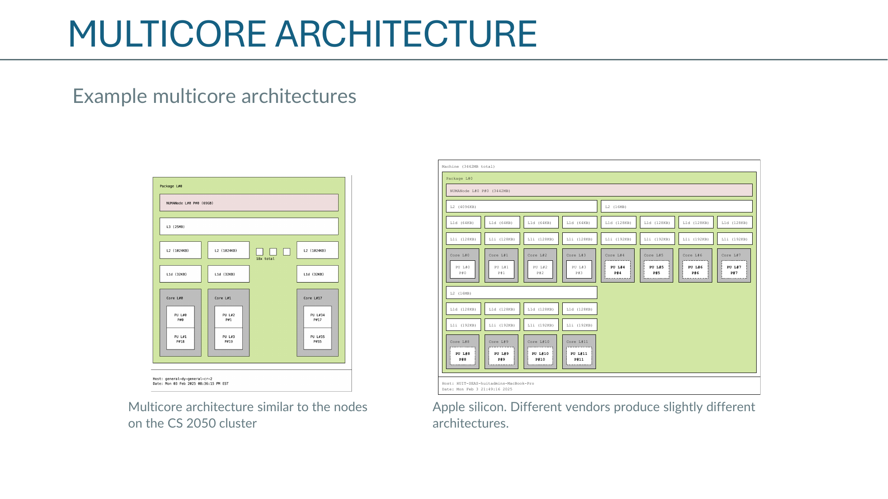
这一页给了两个真实机器的拓扑图（用 lstopo 这类工具生成），目的是让我们直观看到「现代 CPU 内部长什么样」。
从上往下是一个层级结构（hierarchy）：
Package（整颗 CPU 芯片）
└── NUMANode (69GB) ← 这颗 CPU 直连的内存
└── L3 Cache (25MB) ← 所有核心共享
└── L2 (1024KB) × 18 ← 每个核心独占
└── L1d (32KB) ← 每个核心独占
└── Core L#0 ... L#17 （18 个物理核心）
└── PU L#0, PU L#1 （每核 2 个超线程）
关键观察：
不一样的设计哲学 —— 异构核心（heterogeneous cores）：
是的，就是 RAM。但它的标签叫 NUMANode 是因为引入了 NUMA（Non-Uniform Memory Access，非统一内存访问）这个概念。
NUMA 是什么：在多 socket 服务器上，每颗 CPU 都有自己直连的本地内存。访问本地内存快，访问"另一颗 CPU 那边"的内存要走 CPU 互联总线（Intel QPI/UPI），慢得多。
┌─────────────────┐ ┌─────────────────┐
│ CPU 0 │ ←────→ │ CPU 1 │
│ (Package L#0) │ QPI/UPI │ (Package L#1) │
└────────┬────────┘ 互联 └────────┬────────┘
│ │
┌─────▼─────┐ ┌────▼──────┐
│ NUMANode 0│ │ NUMANode 1│
│ 64 GB │ │ 64 GB │
└───────────┘ └───────────┘
(CPU 0 的本地内存) (CPU 1 的本地内存)
这台 CS 2050 节点只有一颗 CPU，所以只有一个 NUMANode = 全部 69GB RAM。
容易混淆的名词：
为什么 NUMA 对并行编程重要：如果线程跑在 CPU 0、但数据在 CPU 1 的 NUMANode，性能会显著下降。所以 OpenMP/MPI 都有 thread affinity（线程亲和性）和 memory binding（内存绑定）设置。
包含。粉色 NUMANode 就代表那些插在主板插槽里的内存条 (DIMM)。lstopo 不叫它 "DIMM" 而叫 "NUMANode"，是因为这张图是从 CPU 的视角画的：CPU 不关心你插了几条、什么型号，它只关心"这块内存离我多近"。
物理硬件 → lstopo 标签的映射：
你看到的物理硬件 lstopo 图里显示的
───────────────── ──────────────────
┌──────────────┐
│ 内存条 #1 │ ──┐
│ (16GB) │ │
└──────────────┘ │
┌──────────────┐ │
│ 内存条 #2 │ ├──→ NUMANode L#0 (69GB)
│ (16GB) │ │ (粉色那块)
└──────────────┘ │
┌──────────────┐ │
│ 内存条 #3 │ │
│ (32GB) │ ──┘
└──────────────┘
↑
插在主板上，连到 CPU 0 的内存控制器
💡 现代 CPU 内部集成了内存控制器，内存条直接连到 CPU（不再像旧架构那样走北桥）。所以"哪些内存条属于哪颗 CPU"是物理硬连线决定的。
这张图里包含的：CPU 核心、CPU 缓存 (L1/L2/L3)、内存条 (NUMANode)。
不包含的：硬盘 / SSD（属于存储不是内存）、GPU、网卡（lstopo 默认不画外设）。
不包含。它们是完全独立的两种硬件，只是都属于"内存系统"。图里画成嵌套是为了表达访问路径，不是物理包含。
对比表：
| 粉色 NUMANode (RAM) | L1 / L2 / L3 (Cache) | |
|---|---|---|
| 物理位置 | 主板上的内存条 | CPU 芯片内部 |
| 材料 | DRAM | SRAM |
| 容量 | GB 级（69GB） | KB ~ MB 级 |
| 速度 | 慢（~100 ns） | 快（~1~30 ns） |
| 价格 | 便宜 | 极贵 |
为什么图里嵌套画：表达 CPU 找数据时的"逐级回退"顺序。当 Core 0 要读数据 X：
① 查 L1d (32KB) ──→ 命中？✅ 直接拿走（最快）
↓ 没命中
② 查 L2 (1024KB) ──→ 命中？✅ 拿走 + 复制到 L1
↓ 没命中
③ 查 L3 (25MB) ──→ 命中？✅ 拿走 + 复制到 L2 + L1
↓ 没命中（cache miss！）
④ 去 NUMANode (69GB) 拿真正的内存
把数据搬回来，逐级填回 L3 → L2 → L1
物理上 vs lstopo 图上：
物理上（真实硬件） lstopo 图（逻辑层级）
───────────── ─────────────────
主板 ┌─ Package ─────────┐
┌──────────┐ │ ┌───────────────┐ │
│ 内存条 1 │ ←┐ │ │ NUMANode 69GB │ │ ← 标注
└──────────┘ │ │ └───────────────┘ │ 不代表
┌──────────┐ │ ┌──────────┐ │ ┌───────────────┐ │ RAM 在
│ 内存条 2 │ ←┼──┤ CPU 芯片 │ │ │ L3 25MB │ │ CPU 里
└──────────┘ │ │ ┌──────┐ │ │ │ ┌─┐ ┌─┐ ... │ │
┌──────────┐ │ │ │L3/L2 │ │ │ │ │L2│ │L2│ │ │
│ 内存条 3 │ ←┘ │ │ /L1 │ │ │ │ │L1│ │L1│ │ │
└──────────┘ │ │Cores │ │ │ │ │Co│ │Co│ │ │
│ └──────┘ │ │ │ └─┘ └─┘ │ │
└──────────┘ │ └───────────────┘ │
└───────────────────┘
RAM 在 CPU 外 嵌套 ≠ 物理包含
L1/L2/L3 在 CPU 内 只表示访问归属/顺序
这就是 超线程（Intel Hyper-Threading）/ SMT（Simultaneous Multi-Threading）。一个核里有 2 个 PU 不等于核能"真正同时"干两件事 —— 底层只有一套执行单元（ALU、FPU），两个 PU 共享。它的本质是：操作系统看到这个核像"两个 CPU"，所以可以一次性把两个线程派给它，硬件在两个线程间快速切换、填补空档。
为什么有用：单线程经常会卡住（比如等 cache miss 的数据从 RAM 加载回来，要几十 ns）。这段时间执行单元闲着没事，第二个 PU 上的线程就能立刻补上去，提高资源利用率。
性能收益通常只有 15%~30%，远不是翻倍。两个 PU 共享缓存、执行单元、内存带宽，如果两个线程都是 CPU 密集型计算，互相抢资源甚至可能更慢（HPC 场景常主动关闭超线程）。
和真的两个核的区别：两个物理核各有独立的 ALU 和 L1/L2，可以真正并行执行；一个核里的两个 PU 只是"轮流上场 + 填空隙"。所以 18 物理核 × 2 PU = 36 逻辑 CPU，OS 把它当 36 个 CPU 调度，但真实算力远小于"36 个核"。
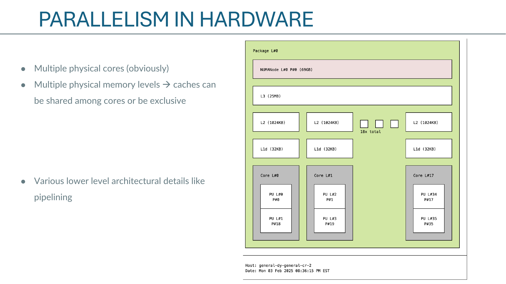
这页是对硬件并行性的正式归纳，用的还是 slide 9 左边那张拓扑图，把硬件提供并行能力的来源总结为三类：
① 多个物理核心（multiple physical cores）—— 最直观的并行，不同核可以真正同时执行不同的指令流。
② 多级物理内存层次（multiple memory levels）—— 缓存既可以在多个核之间共享（如 L3），也可以是核独占的（如 L1/L2）。共享缓存让核间数据传递便宜，独占缓存让单核访问极快，但也带来后续要讲的"缓存一致性"问题。
③ 更底层的架构细节，比如 pipelining—— 流水线让一个核内部可以同时处理处于不同阶段（取指、解码、执行、访存、写回）的多条指令。这一类还包括超线程、SIMD、乱序执行等，对程序员通常透明，但会显著影响性能。
💡 这页是在为下一页 application-level parallelism 做铺垫：先讲清楚硬件能提供什么，再讲软件怎么用上它。
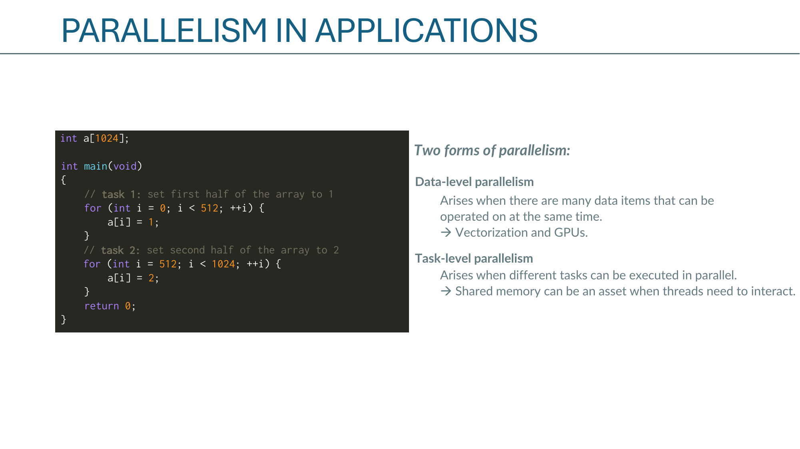
应用层的并行可以分为两大类，slide 上特别强调要把它们区分开来。
Data-level parallelism（数据并行）：当你有大量数据项要做"同一件事"时出现。代码例子就是典型 —— 把数组前 512 个元素全设为 1、后 512 个元素全设为 2，每个元素的操作完全独立。这种场景最适合用 向量化（SIMD 指令，比如 AVX）或 GPU 来加速：硬件一次性对一批数据做同样的操作。
Task-level parallelism（任务并行）：当你有多个性质不同的任务可以同时执行时出现，每个任务做不同的事。这种场景下不同任务往往需要交换数据，所以 共享内存（shared memory） 是个优势 —— 多个线程在同一块内存里读写，比跨进程通信快得多。
代码例子里的两个 for 循环，既可以理解成"两个数据并行任务"（同样的赋值操作，只是数据范围不同），也可以理解成"两个独立任务"（两段独立代码并行执行）。这种二义性正好说明数据并行和任务并行的边界不是绝对的，是看你怎么组织。
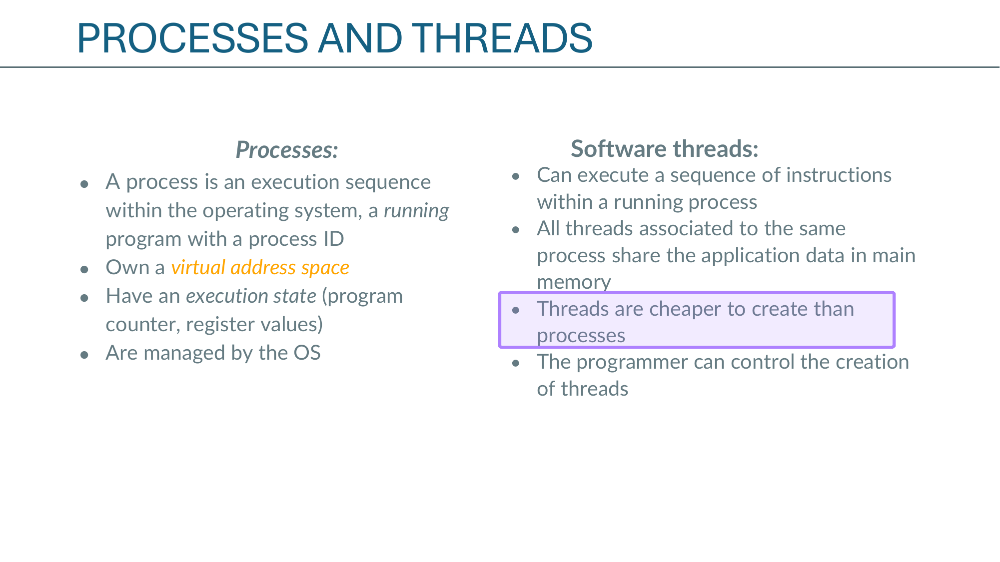
这页对比 进程（process） 和 线程（thread） 的核心区别。
进程是操作系统调度的基本单位，是一个"正在运行的程序"。它有自己独立的进程 ID、独立的 虚拟地址空间（virtual address space）（slide 高亮 —— 这是进程间彼此隔离的根本原因）、独立的执行状态（程序计数器 PC、寄存器值），完全由 OS 管理。
线程是进程内部的执行流。同一个进程里的所有线程共享应用的数据（都在主存里），所以线程之间通信非常方便。最关键的一点（slide 紫框框出来）：线程比进程的创建代价小得多 —— 因为不需要新建一整套地址空间，只要分配一个新的栈和寄存器状态就行。此外线程的创建/销毁通常由程序员代码控制（用 pthread、OpenMP 等 API），而不是像进程那样靠 OS 帮你管。
💡 一句话记法：进程 = 隔离 + 安全 + 重；线程 = 共享 + 快 + 轻。
最直观的例子是 Chrome 浏览器。在 Chrome 里按 Shift+Esc 调出它自带的任务管理器，能直接看到清晰的进程/线程结构。
每个标签页是一个独立的进程。这就是为什么某个网页崩溃时只有那一个 tab 显示 "Aw, snap!"，其他 tab 和浏览器本身完全不受影响 —— 进程 A 的内存崩溃影响不到进程 B，因为它们的虚拟地址空间根本不相通。如果所有 tab 共用一个进程，刷一个有 bug 的视频可能就会把正在写的 Gmail 草稿一起带走。同样，恶意网站也因此读不到你别的 tab 里的银行密码。这就是进程隔离的现实价值。
每个 tab 进程内部又跑着很多线程，分工明确：渲染线程（HTML/CSS 排版）、JS 引擎线程（V8）、网络线程（下载资源）、输入处理线程（鼠标、滚动）、视频解码线程等等。它们为什么必须在同一个进程里？因为要共享同一个网页的 DOM 树和 JavaScript 堆 —— JS 改了一个节点，渲染线程立刻就要拿到改动重画。如果分成不同进程，每次都得走 IPC 序列化传数据，性能完全没法用。
所以整体层次是：Chrome 应用 → 多个进程（每个 tab 一个）→ 每个进程内多个线程。这背后正好对应 slide 12 的结论 —— 用进程划安全/隔离边界，用线程提供性能/并发。
类似模式的软件还有：VS Code（主进程 + 扩展宿主进程 + 渲染进程，每个内部又有多个线程）、PostgreSQL（每个客户端连接一个进程）、Nginx（多 worker 进程，每个 worker 多线程）。
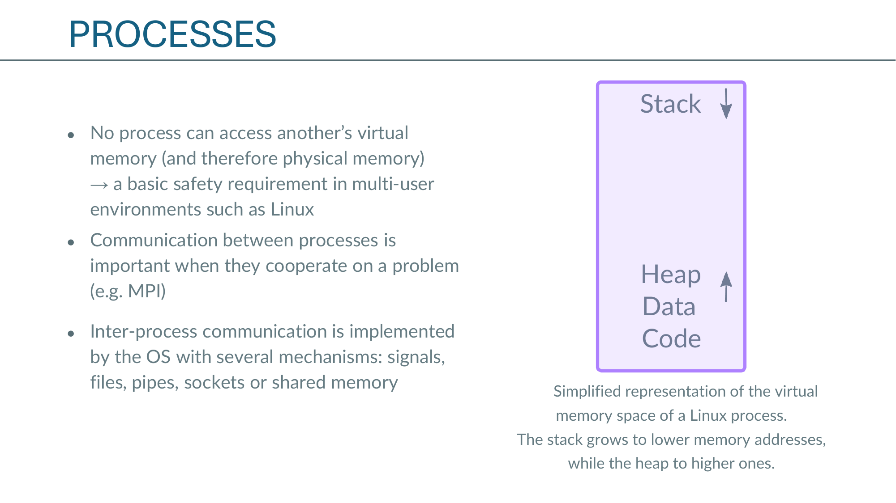
这页深入讲进程的两个性质：隔离 和 跨进程通信。
进程之间是完全隔离的：一个进程访问不到另一个进程的虚拟内存（因此也访问不到对方的物理内存）。这是 Linux 这种多用户系统的基本安全要求 —— 不然你登录后跑的程序就能随便读其他用户的数据了。
但隔离不等于不能合作：很多场景下不同进程需要协作完成任务，最典型的就是 MPI（Message Passing Interface）—— 在分布式并行计算里，每个计算节点跑一个进程，它们之间靠消息传递协作。
OS 提供了若干 IPC（inter-process communication，进程间通信） 机制：signals（信号，用于简单事件通知，比如 SIGTERM）、files（文件，最朴素但慢）、pipes（管道，shell 里 | 用的就是它）、sockets（套接字，本机或跨机器都能用）、shared memory（共享内存，效率最高，但需要自己处理同步）。
右边的紫色图是 Linux 进程虚拟地址空间的简化示意：Stack 从高地址往低地址增长（函数调用越深越往下），Heap 从低地址往高地址增长（malloc 越多越往上），中间留有大片空闲区域。这种"两端往中间挤"的布局是为了让两者动态扩展时不会很快撞到一起。
IPC 和 MPI 处于不同抽象层次，不是一个东西。IPC（Inter-Process Communication）是一个概念性总称，泛指"进程之间通信"以及 OS 提供的一系列底层机制（signals、pipes、sockets、shared memory 等），都是 Linux 内核内置的最原始工具。MPI 则是一个具体的标准 API / 库（OpenMPI、MPICH 是它的实现），底层用的还是这些 IPC 机制，但在上面封装了一层"消息传递"的高级抽象。打比方就是：IPC 是字母表和单词，MPI 是用这些单词写出来的一本特定的书。HPC 程序员一般不直接用 IPC 原语写并行代码（太繁琐），而是用 MPI 提供的高层接口。
MPI 是为"协作型并行计算"设计的，不是同机器上随便两个进程聊天。典型场景是 HPC：把一个超大计算任务切成 N 块扔到 N 台机器上同时算（气候模拟、AI 训练等），每台机器跑一个 MPI 进程，进程之间通过网络交换中间结果。这和 Chrome 多 tab "互不打扰"的多进程模式正好相反 —— Chrome tab 之间其实几乎不直接通信，要共享数据也通过浏览器主进程中转。MPI 更准确的比喻是：一群人在分工算一道巨大的数学题，每个人算一部分，算完后告诉相邻的人"我的结果是 X"，对方拿到才能算下一步。MPI 提供的就是这种 "send / receive / broadcast / reduce" 的标准化原语（MPI_Send、MPI_Recv、MPI_Bcast、MPI_Reduce 等）。
MPI 自动选择 IPC 机制，依据的是"进程的物理位置"，不是"用户想完成什么"。用户写 MPI 代码时只描述逻辑通信意图（MPI_Send(data, dest=5)），不指定底层用什么。MPI 运行时会自动判断 rank 0 和 rank 5 的物理位置，再选传输方式：同机器 → 共享内存；不同机器只有以太网 → TCP socket；有 InfiniBand → RDMA（绕过内核拷贝，最快）；涉及 GPU 内存 → NVLink 或 GPUDirect RDMA。这种"逻辑通信和物理传输分离"的抽象（类似 SQL 的"声明式查询"）带来一个关键好处：同一份 MPI 程序可以不改代码地从笔记本（单机多进程，自动用共享内存）扩展到超算集群（上万核，自动用 InfiniBand），这是 MPI 在 HPC 称霸 30 年的关键。
5 种 IPC 机制各举一个具体例子：
Signals（信号）：进程间最轻量的通知机制，只传"事件发生了"这一个比特，不带数据。最常见的：你按 Ctrl+C 时终端向当前运行的程序发送 SIGINT 让它退出；用 kill -9 <pid> 命令本质是发 SIGKILL 强制终止某进程；子进程结束时 OS 会向父进程发 SIGCHLD 通知"你的孩子结束了"。
Files（文件）：最朴素也最慢的通信方式 —— 一个进程写文件、另一个进程读。比如 nginx 把访问日志写到 /var/log/nginx/access.log，另一个监控进程定期读这个文件来统计流量。
Pipes（管道）：建立一条单向字节流通道，常用于父子进程之间。最经典的例子就是 shell 里的 ls | grep .txt —— ls 进程的标准输出被"管道"接到 grep 进程的标准输入。同理 cat file.txt | wc -l 用来数行数。
Sockets（套接字）：最灵活的机制，本机和跨机器都能用，是网络编程的基础。你浏览器（进程）通过 TCP socket 和远程网页服务器通信才看到这个网页；本地跑 npm run dev 时浏览器用 localhost:3000 这个 socket 连过去（同机器也是用 socket）；psql 客户端连 PostgreSQL 服务也是通过 socket。
Shared Memory（共享内存）：性能最高的方式 —— 两个进程把同一块物理内存映射到各自的虚拟地址空间，一个写另一个立刻能读，不需要任何拷贝。比如 PostgreSQL 用共享内存在多个 worker 进程间共享缓存；高性能音视频软件用共享内存让采集进程和编码进程零拷贝传数据。代价是必须自己用锁或信号量做同步，不然两个进程同时写就乱套。
按速度大致排序：signals < files < pipes ≈ sockets < shared memory（共享内存最快，完全不经过内核拷贝）。
Stack（栈）用于函数调用相关的临时数据：函数参数、局部变量、返回地址、保存的寄存器值。管理方式是 LIFO（后进先出），由编译器自动生成代码维护 —— 每次调用函数就 push 一个 stack frame，函数返回就 pop 掉整个帧。"分配"内存只是把栈指针往下移几个字节，极快（一条 CPU 指令）。代价是：生命周期完全和函数作用域绑定，函数返回后里面的数据立刻失效；而且每线程栈大小有限（Linux 默认 8MB），递归太深或在栈上开大数组会 stack overflow。
Heap（堆）用于程序员手动控制生命周期的动态数据。C 里用 malloc / free；C++ 用 new / delete；Java/Python 用 new 申请、由 GC 回收。Heap 上的数据生命周期任意，可以跨多个函数调用，只要不主动释放就一直在（忘释放就是内存泄漏）。代价是：分配慢（要在已用空间里找合适的空闲块，涉及空闲链表、碎片管理），释放也慢，必须显式管理。
具体的 C 代码例子：
void foo() {
int x = 5; // x 在 Stack 上
int* p = malloc(sizeof(int)); // *p 在 Heap 上，但 p 指针本身在 Stack 上
*p = 10;
return; // 函数返回的瞬间：
// x 自动消失（Stack pop 掉整个帧）
// p 指针变量也消失
// 但 *p 指向的那 4 字节还活着！没 free 就成了泄漏
}
为什么要分开：两者解决根本不同的需求 —— 临时的、小的、短生命周期数据需要 Stack（速度优先、自动管理）；持久的、大的、长生命周期数据需要 Heap（灵活性优先、手动管理）。只用 Stack 的话函数返回就清空，没法长期保存数据；只用 Heap 的话每个临时变量都要 malloc/free，效率极低、代码繁琐。两者互补，缺一不可。
为什么 Stack 向下、Heap 向上增长（slide 13 那张图的核心信息）：两边大小都是运行时动态变化的，编译期没法预知最终各占多少。让它们从虚拟地址空间两端向中间挤压是最经济的空间利用方式 —— 中间留大片未分配区域，谁需要谁涨。万一撞到一起就 stack overflow 或 out of memory，OS 会把进程干掉。
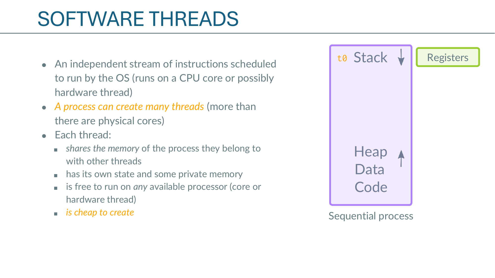
正式定义"软件线程"：它是一段 独立的指令流，由 OS 调度到某个 CPU 核（或者超线程的 PU）上去执行。
一个进程可以创建很多线程，数量可以远超物理核数 —— 因为 OS 会用时间片轮转，让线程们排队上 CPU。但要注意：线程多了不等于真正能同时跑得多，真正同时执行的线程数仍然受物理核数（× 超线程数）的限制。
每个线程的特点是：
右边的图是对比基准 —— 单线程进程（"sequential process"）：只有一个栈（标 t0）、一份寄存器，加上共享的 Heap/Data/Code。这是为下一页 slide 15 的多线程对比做铺垫。
Registers 是 CPU 内部的超高速存储单元。几乎是 0 cycle 访问 —— 它们就在芯片里，紧贴执行单元。CPU 真正在算的所有数据，那一刻一定在某个 register 里。
数量很少。x86-64 有 16 个通用寄存器（RAX、RBX、RCX、RDX、RSI、RDI、RBP、RSP、R8~R15，每个 64 位）。外加专用的 RIP（指令指针）和 RFLAGS（状态标志）。再加 SIMD 寄存器 XMM/YMM/ZMM 各 16~32 个。ARM64 有 31 个通用寄存器，RISC-V 有 32 个。整体"几十个"是合理估计。
为什么这么少？它们是芯片硅片上的物理电路。每多一个就要加晶体管和走线。CPU 会变大、变慢、变热。少而快是 register 的本质。
用来干什么：装当前指令的操作数；按调用约定传函数参数；装函数返回值；装栈指针 RSP、帧指针 RBP、指令指针 RIP；装编译器认为常用的局部变量。编译器优化时疯狂想"把热变量留在寄存器里"。
具体的 C 例子：
int add(int a, int b) {
int c = a + b;
return c;
}
编译成 x86-64 汇编（System V 约定）：
add:
mov eax, edi ; eax = a (a 通过 edi 传进来)
add eax, esi ; eax = a + b (b 通过 esi 传进来)
ret ; 返回值已经在 eax 里
整个过程没访问一次 RAM。参数从 register 拿，运算在 register 做，结果留在 register 返回。
System V 是什么？这里指 System V AMD64 ABI。ABI = Application Binary Interface，相当于"二进制层的合同"。规定函数参数放哪几个寄存器、返回值在哪、栈怎么对齐。
Linux/macOS 上 x86-64 用的就是它：前 6 个整数参数依次放 RDI、RSI、RDX、RCX、R8、R9，返回值放 RAX。Windows 用的是另一套（前 4 个参数走 RCX、RDX、R8、R9）。所以 Linux 编译的二进制和 Windows 编译的不能互相调用 —— CPU 一样，ABI 不一样。没有 ABI 统一，gcc 和 clang 编译的代码也没法链接。
eax / edi / esi 是什么？都是 x86-64 通用寄存器。区别只是"位宽视图"。命名有历史包袱：
AX = 16 位（8086 时代）EAX = 32 位（Extended AX，386 时代）RAX = 64 位（Register AX，x86-64 时代）这三个是同一个物理寄存器的不同视图。RAX 的低 32 位 = EAX，EAX 的低 16 位 = AX。同理还有 RSI/ESI/SI（Source Index）和 RDI/EDI/DI（Destination Index）。
例子里为什么用 EAX/EDI/ESI？因为 C 的 int 在 x86-64 上是 32 位。所以编译器只用 32 位视图。如果是 long（64 位），就会用 RAX/RDI/RSI。
add 在哪里执行？就在 CPU 核心里。具体是核心内部的 ALU（算术逻辑单元）。每个核都有一个或多个 ALU，做整数加减、与或非、比较。浮点交给 FPU，向量交给 SIMD 单元。
一条 add eax, esi 的生命周期：fetch（从 L1 取指令）→ decode → execute（送进 ALU）→ writeback（结果写回 EAX）。1 个时钟周期完成（< 1 ns），完全不访问 RAM。这就是"把数据保留在寄存器里"性能上诱人的根本原因。
ret 是什么？"return" 的缩写。从函数返回到调用它的地方。物理动作：从栈顶弹出一个地址，装进 RIP（指令指针），CPU 下一条就跳过去。
为什么栈顶有地址等着被弹？因为别的代码调用 add 时用的是 call add。call 干两件事：(1) 把"call 后面那条指令的地址"压栈（含义："add 干完后回到这里"）；(2) 跳转到 add 入口。
所以 call 和 ret 是配对的：call 推地址进栈，ret 弹地址出栈。这就是 C 函数"调用 → 返回"在 CPU 层面的真相。也是 stack overflow 能发生的原因 —— 每次嵌套调用都要在栈上压一份返回地址 + 栈帧，递归太深就撑爆。
回到 slide 14 的语境：图里每个线程有独立的 "Registers" 盒子。这不是说每个线程在 CPU 里有自己的物理寄存器（核里只有一组）。而是 OS 为每个线程保存的寄存器状态快照。线程切换时 OS 必须先把当前线程的寄存器值存进内存，再把下一个线程之前存的值加载回 CPU。这个过程叫 context switch。
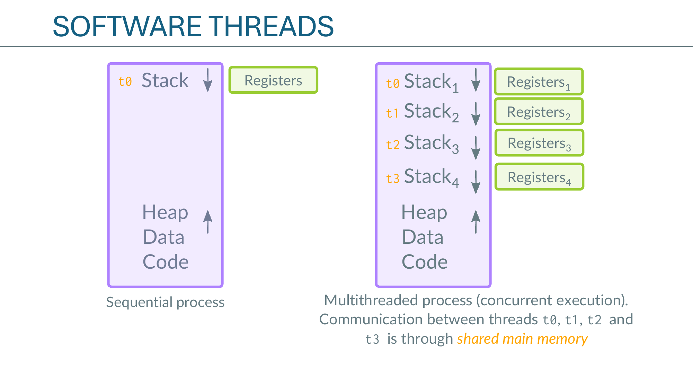
这页用并排对比直观展示多线程进程的内存模型，是理解后续并发问题的基础。
左边（Sequential process）：单线程，一个 Stack + 一份 Registers + 共享的 Heap/Data/Code。
右边（Multithreaded process）：4 个线程 t0~t3，每个线程有自己独立的 Stack 和 Registers（这就是 slide 14 说的"私有内存"的具体内容），但 Heap、Data、Code 段是所有线程共享的。也就是说：函数局部变量、调用栈、CPU 寄存器值是每线程一份；malloc 出来的对象、全局变量、代码段是大家共用一份。
最关键的结论（slide 高亮的橙字）：线程之间的通信通过共享主存（shared main memory）进行。一个线程往 Heap 里写一个值，另一个线程立刻就能读到 —— 不需要 IPC 调用、不需要拷贝数据，直接访问同一块内存地址即可。这就是"线程通信比进程通信便宜"的具体机制。
⚠️ 但便宜也是双刃剑：多个线程同时读写同一块内存，会引出 race condition（竞态条件）、data race（数据竞争） 等并发问题，需要锁、原子操作等同步机制来处理。这是后续 slide 的核心主题。
紫色 box = 进程的虚拟地址空间，不是 CPU。Slide 15 这张图根本没画 CPU。Stack₁~Stack₄、Registers₁~Registers₄、Heap、Data、Code 都是"内存里的东西"。Stack 们是各线程私有的栈（在同一虚拟地址空间，只是占不同地址段）。Registers 是 OS 给每个线程保存的寄存器快照。Heap/Data/Code 共享。
线程跑在几个 CPU 上是另一个独立维度，由 OS 调度器决定。4 个线程可以跑在 4 个核上（真正并行），可以挤在 1 个核上轮转，可以跑在 2 个核上各轮转 2 个。同一线程也可能在不同时刻被迁移到不同的核。Slide 15 想表达的核心是内存布局（谁私有、谁共享），和 CPU 数量解耦。
每个线程的 register 数量是固定的，由 CPU 架构决定。x86-64 上每个线程都有同一套：16 个 64 位通用寄存器（RAX、RBX、... R15）+ RIP + RFLAGS + 16~32 个 SIMD 寄存器。ARM64 是 31 个，RISC-V 是 32 个。
但核里只有一份物理寄存器文件，任何瞬间只装一个线程的值。线程被挂起时，OS 把这套值保存到内存里。线程换上来时，再从内存把它的值加载回 CPU 寄存器。所以"每个线程有自己的 registers"指的是每个线程在内存里有一份独立的快照，不是物理上每个线程都拿到一组真寄存器。
虚拟地址 → 物理 RAM 地址 → 缓存层次。三步走。
执行 mov eax, [虚拟地址] 的真实顺序：
关键：缓存不是"按页表去找"。MMU 翻译完地址后，缓存系统拿物理地址当 key 去自己的 tag 表里查，和页表无关。翻译在前，缓存查找在后。
3 个具体例子展示数据访问代价：
例子 1：热数据，L1 命中（最快）
int x = 5; // 写入 x int y = x + 1; // 立刻又读 x
读 x 时：TLB 命中 → L1 命中（5 刚被写进去）→ 送进 EAX 加 1。整个过程 ~1-2 ns。
例子 2：冷数据，缓存全 miss，到 RAM
int *arr = malloc(100 * 1024 * 1024); // 100MB 大数组 // ... 干别的事，缓存里都是别的内容 ... int v = arr[0];
读 arr[0]：TLB miss → MMU 查页表 → L1 miss → L2 miss → L3 miss → 到 RAM 拿，~100 ns。同时把数据填回 L3/L2/L1，下次再读就快。这就是"第一次访问大数组很慢"的原因。
例子 3：page fault（最慢）
int *p = malloc(1000); int v = p[0]; // 立刻读，第一次访问
读 p[0]：TLB miss → MMU 走页表 → 发现这个虚拟地址还没映射到物理页（malloc 只登记地址范围，物理 RAM 还没分配）→ 触发 page fault → OS 接管：找空闲 RAM 页、更新页表、做映射 → 恢复进程重试 → 这次成功翻译，去缓存找都 miss，最终到 RAM 拿。整个过程可能 ~1000 ns。
这就是 lazy allocation：OS 不在 malloc 时就给你 RAM，等你真用了才分配，省内存。
"取一次数据"的完整代价排序：
寄存器命中 (~0 ns) < L1 (~1 ns) < L2 (~3 ns) < L3 (~10 ns) < RAM (~100 ns) << page fault (~1000 ns) << 从 swap 磁盘调回 (~10 ms)
这就是为什么 cache locality（数据访问局部性） 对性能这么关键 —— 让数据尽量留在 L1/L2，避免到 RAM 甚至磁盘。
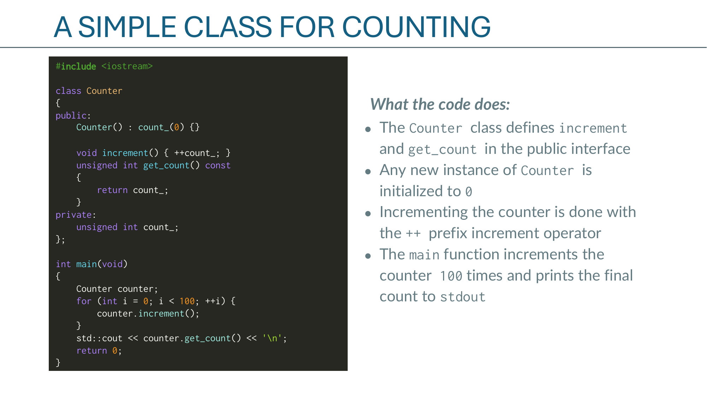
这页开始用一个极简的 Counter 类作为贯穿后面好几页的例子。代码本身平淡无奇：一个 count_ 私有成员、一个 increment() 把它加 1、一个 get_count() 返回当前值。main() 里建一个 Counter，循环 100 次调 increment()，最后打印结果。
关键不在代码本身，而在它即将暴露的并发陷阱。这个看似无害的"读-改-写"操作（++count_）在单线程下永远输出 100。但一旦多线程跑，就会暴露出经典的 race condition。接下来 5 页都围绕这个例子层层展开。
Counter() : count_(0) {} 这个语法是什么意思？为什么有时候只能用这种写法？count_(0) 既不是数组也不是 vector，是 C++ 的 *member initializer list*（成员初始化列表）。
把 Counter() : count_(0) {} 拆开看：
Counter() —— 构造函数（无参）: count_(0) —— 成员初始化列表，把成员变量 count_ 初始化成 0{} —— 空的构造函数体这里的 count_ 就是 slide 上 private 区里声明的那个 unsigned int count_。它是一个普通的私有整数成员变量。count_(0) 的语法乍看像函数调用，其实是 C++ 的"用 0 这个值去初始化 count_"的写法。对 int 这种基本类型来说，等价于 count_ = 0。
为什么不直接写 Counter() { count_ = 0; }？对 int 效果完全一样。但 C++ 程序员习惯用 initializer list，因为某些情况下只有它能 work。
核心原因：构造函数体（{...} 里的代码）执行的时候，所有成员已经被构造好了。Body 里的赋值是"修改一个已经存在的变量"。而 const、reference 这些类型恰恰不允许"创建后修改"。所以只能在"被创建的那一刻"设值 —— 那一刻就是 initializer list。
具体分 4 种情况：
1. const 成员 —— 编译报错。const 字面意思就是"创建后不能改"。Body 里赋值是非法操作。
class Bar {
Bar() { z_ = 5; } // ❌ ERROR: assignment of read-only member
const int z_;
};
class Bar {
Bar() : z_(5) {} // ✅ 在 const 被创建那一刻直接给 5
const int z_;
};
2. Reference 成员 —— 编译报错。C++ 的 reference 必须在创建时绑定到某个对象，一旦绑定就不能改绑。Body 里的 ref_ = x_ 不是"重新绑定"，而是"给 ref_ 指向的对象赋新值"。但 ref_ 这时还没绑定到任何东西，语义错乱。
class Bar {
Bar() { ref_ = x_; } // ❌ ref_ 必须在初始化时就绑定
int x_ = 0;
int& ref_;
};
class Bar {
Bar() : ref_(x_) {} // ✅ 在 ref_ 被创建那一刻绑到 x_
int x_ = 0;
int& ref_;
};
3. 没有默认构造函数的类成员 —— 编译报错。如果某个成员是个类类型，而这个类没有默认构造函数（必须传参才能构造），body 写法也失败。原因：进入 body 之前，编译器要先把所有成员默认构造好，但有些类没法默认构造。
class Engine {
Engine(int hp) { ... } // 只有这个，没默认构造函数
};
class Car {
Car() { engine_ = Engine(200); } // ❌ 进入 body 前 engine_ 必须先默认构造，但 Engine 没有
Engine engine_;
};
class Car {
Car() : engine_(200) {} // ✅ 直接用 200 构造 engine_，跳过默认构造
Engine engine_;
};
4. 类类型成员 —— 编译能过，但性能浪费。即使一切能编译，body 写法对类类型效率更低。两步浪费：(1) 进入 body 前编译器先默认构造每个成员；(2) body 里的赋值再调用 operator=。重型对象被"构造一次 + 赋值一次"，做了双倍工作。Initializer list 只构造一次。
一句话总结：constructor body 是"成员都建好之后"才跑的代码。const、reference 这种"建好就不能动"的类型只能在 initializer list 里赋初值；没默认构造函数的类成员同理；即使能 work，body 写法对重型对象也有性能损失。所以 C++ 的惯例是能用 initializer list 就用。
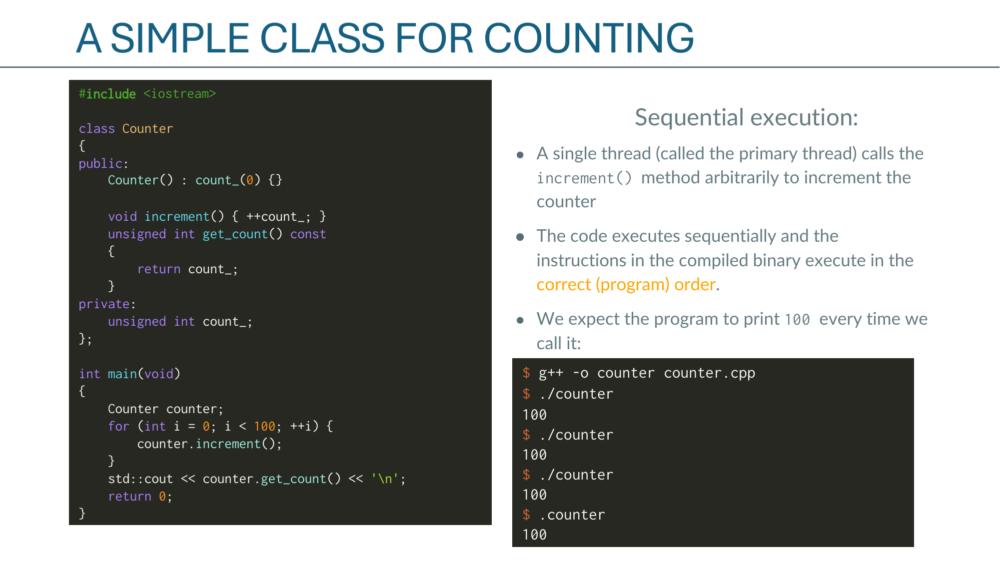
单线程版本（叫 primary thread，主线程）按程序顺序一行行执行。Slide 上展示了连续 3 次运行，每次稳定输出 100。这就是顺序编程的核心保证：确定性（determinism） —— 同样的输入永远给同样的输出。
这种"每次都对"的舒适感来自两个隐含假设：(1) 指令严格按代码顺序执行；(2) 没有别人在改你的数据。这两个假设在多线程下都会被打破，所以 race condition 才会出现。
顺带认识下编译命令：g++ -o counter counter.cpp 把源文件编译成可执行文件 counter。后面 slide 会加 -fopenmp 开启 OpenMP 支持。
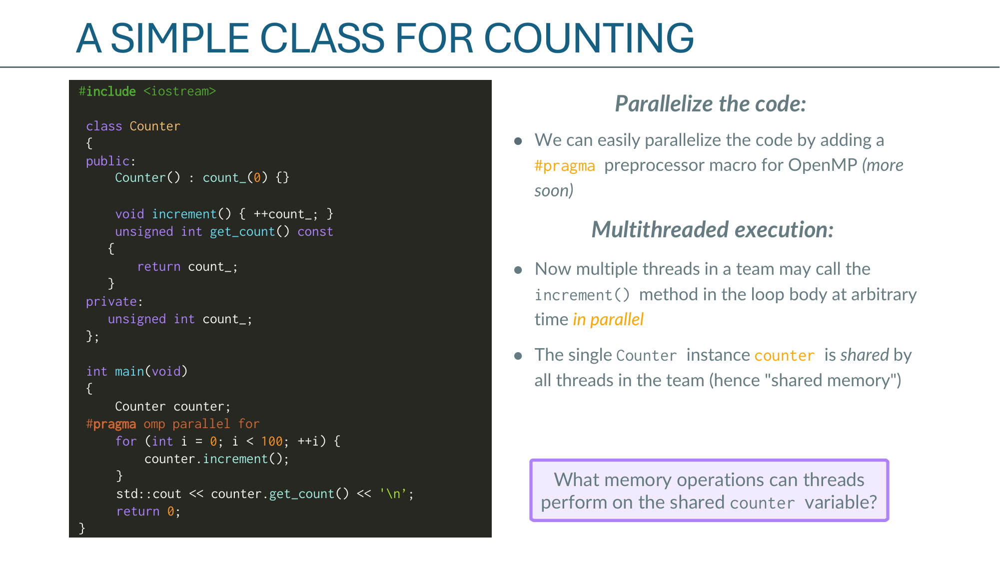
只加一行 #pragma omp parallel for，编译器就会把 for 循环的 100 次迭代自动分配给多个线程并行执行。OpenMP 是 C/C++/Fortran 上最流行的并行化工具。它的设计哲学是"少改代码，加 pragma 就能并行" —— 不用程序员手动 spawn 线程、写同步逻辑。
但带来一个新问题：所有线程共享同一个 counter 实例。counter 是 main 函数栈上的局部变量，但 OpenMP 默认把 parallel 块外定义的变量当作 shared，所以多个线程拿到的是同一块内存的引用。
多个线程同时调 counter.increment() 修改同一个 count_ 字段会发生什么？这就是 slide 紫框留的悬念："What memory operations can threads perform on the shared counter variable?"
顺带解释 #pragma：#pragma 是 C/C++ 的"编译器指示符"，告诉编译器在这条语句上做点特殊的事。#pragma omp parallel for 就是告诉编译器："下面这个 for 循环用 OpenMP 并行化"。如果编译时没开 -fopenmp，pragma 会被忽略，程序回退成单线程。
counter 是 main() 的局部变量，住在主线程 t0 的栈上。整个 counter 对象只有一个成员 count_（unsigned int，4 字节），所以 counter 在 t0 栈上就是 4 字节。count_ 作为 counter 的成员，自然就在那 4 字节里。
注意：register 不是和"对象/实例"绑定，是和"线程"绑定的。同一时刻 CPU 核里那一份物理寄存器组装的是当前线程的状态，跟 counter 这个对象无关。只有 CPU 真在执行 counter.increment() 那一刻，count_ 的值才被临时载入某个寄存器（比如 edx）做加法，加完写回内存。register 是工作台，不是 count_ 的家。count_ 的家始终是内存（t0 栈上的那 4 字节）。
OpenMP 的 shared 行为：counter 定义在 parallel 区之外，OpenMP 默认把这种变量当作 shared。所以 fork 出来的 worker 线程 t1/t2/t3/... 都拿着指向 t0 栈上同一个 counter 的引用。每个 worker 有自己的栈（用来跑 increment() 调用、存自己的循环变量 i），但它们都对同一块 4 字节内存做 ++。
这就是 race 的物理基础：4 个不同线程同时把同一块内存加载进各自的 edx，加完又各自写回，覆盖彼此的结果。
结果：一个不可预测的、≤ 100 的数。每次运行都不一样。
每次发生一次"两个线程读到同一个值、再写回同一个值"的冲突，就丢失 1 次自增。冲突次数取决于 OS 调度、CPU 执行、缓存同步，全不可控。
微观追踪（count_ 当前 = 49，线程 A 和 B 同时调 increment()）：
t1: A load → A.edx = 49 mem = 49 t2: B load → B.edx = 49 mem = 49 ← 关键：B 读到了 A 还没写回的旧值 t3: A add 1 → A.edx = 50 mem = 49 t4: A store → mem = 50 t5: B add 1 → B.edx = 50 mem = 50 t6: B store → mem = 50 ← B 写回 50，覆盖了 A 刚写的 50
两次 increment() 调用，count_ 只从 49 变到 50。应该 +2，实际只 +1。100 次循环里发生 13 次这样的冲突，结果就是 87。
补充：counter 在 stack/heap/global 都一样。位置不重要，shared + 写 才是 race 的充要条件。
#pragma omp parallel for 这个语法什么意思？为什么是 4 个线程？拆开看每个词：
#pragma —— C/C++ 的预处理指示符，给编译器传递元信息，不属于标准 C++ 语法omp —— 告诉编译器"这条 pragma 是给 OpenMP 用的"parallel —— 创建 parallel region：fork 出一队线程并行执行接下来的代码块for —— 把紧接着的 for 循环的迭代分配给线程团队里的各个线程所以 #pragma omp parallel for 其实是两条指令的合写，等价于：
#pragma omp parallel
{
#pragma omp for
for (int i = 0; i < 100; ++i) { ... }
}
合写形式更常用，因为大部分时候 fork 出来就是为了跑 for 循环。
编译时必须加 -fopenmp。没加的话编译器会忽略 pragma，程序回退成单线程。这是 OpenMP 的"零成本回退"特性 —— 同一份代码可以在支持 OpenMP 的环境下并行跑、在不支持的地方顺序跑，不用改代码。
为什么是 4 个线程？看 slide 19 的命令：
$ OMP_NUM_THREADS=4 ./counter
OMP_NUM_THREADS 是 OpenMP 的环境变量，跑程序前指定线程数。这里设成 4，所以 fork 出 4 个线程。
OpenMP 决定线程数的优先级（从高到低）：
num_threads(N) 子句：#pragma omp parallel for num_threads(8)omp_set_num_threads(N)（在 parallel 区之前）OMP_NUM_THREADS ← slide 19 用的就是这种Slide 19 用 4 线程而不是默认值，应该是为了让 race 现象明显但又不至于乱到看不懂。
100 次迭代怎么分给 4 个线程？默认是平均分配（OpenMP 的 schedule(static)）：
每个线程独立跑自己那 25 次循环，调用 25 次 counter.increment()。如果不发生 race，4 个线程各贡献 25 次自增，总共应该正好 100。
OpenMP 还提供其他调度策略：schedule(dynamic) 让线程跑完一块再来抢下一块（适合每次迭代耗时不均的场景）；schedule(guided) 是动态分配的优化版。
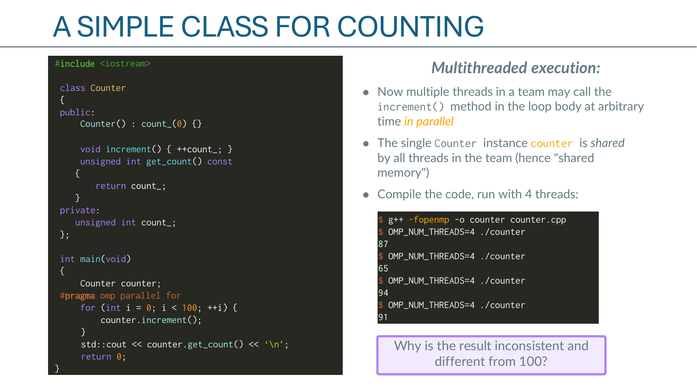
编译时加 -fopenmp 开 OpenMP 支持，用环境变量 OMP_NUM_THREADS=4 指定 4 个线程跑。结果是 87、65、94、88 —— 每次都不一样，每次都不是 100。
程序变成了非确定性（non-deterministic）。这是 race condition 的典型症状：结果取决于线程的执行时序，而时序由 OS 调度器决定，不可预测。100 次自增"看起来"应该得到 100，但实际上有些自增"丢失了"，count_ 没被加足够次。
下一页 slide 20 就开始解释 race condition 的概念。
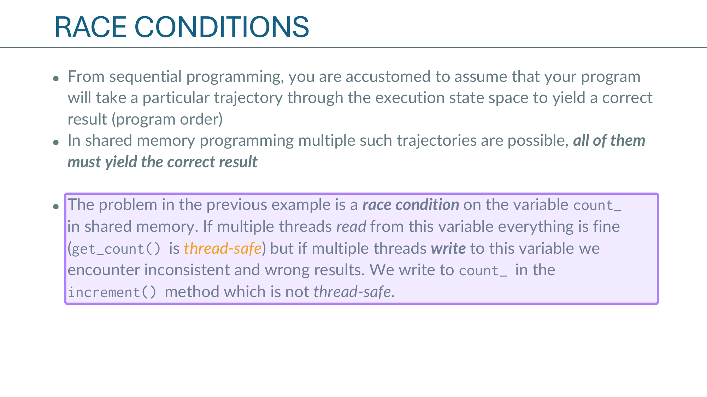
正式给出定义。顺序编程只有一条执行路径，结果只看程序逻辑对不对。共享内存的并行编程有许多可能的执行路径（线程的不同调度顺序就是不同的路径），所有可能的路径都必须给出正确结果，程序才算正确。
具体到 Counter 例子：多个线程同时读 count_ 是没问题的（get_count() 是 thread-safe）；但同时写 count_ 就会出问题。increment() 不是 thread-safe 的。
关键概念 — thread-safe：一个函数被多线程并发调用时，无论调度顺序如何，结果都正确。判断标准是看它有没有"修改共享状态"。get_count() 只读，安全；increment() 要写，危险。
简单记法：read-only 的代码天然 thread-safe；只要有写共享数据的操作，就必须考虑同步。
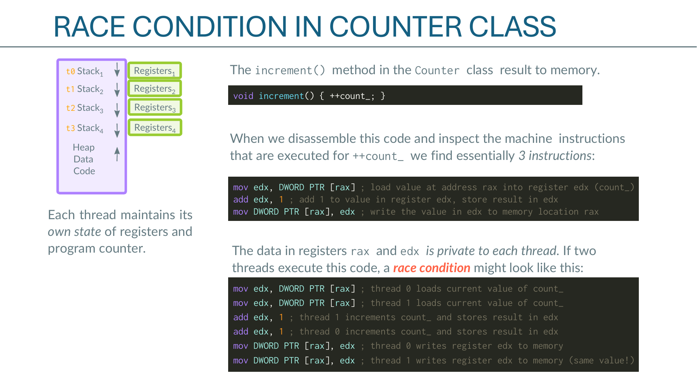
这页揭示问题的根本原因。++count_ 在 C++ 源码看起来是一行，但反汇编后实际是三条机器指令：
mov edx, DWORD PTR [rax] ; 1. 把 count_ 从内存读到寄存器 edx add edx, 1 ; 2. 在 edx 里加 1 mov DWORD PTR [rax], edx ; 3. 把 edx 写回内存
关键事实：rax 和 edx 是线程私有的寄存器（slide 14/15 的概念）。每个线程读到自己的副本，加 1 后再写回。
race 的具体场景。假设 count_ 当前是 5，线程 0 和线程 8 同时执行 increment()：
两次自增只让 count_ 增加了 1，丢了一次。这就是为什么 100 次循环最后只得到 87 之类的值。"丢失"的次数就是发生这种交错的次数。
mov edx, DWORD PTR [rax]？每部分什么意思？整条指令拆四部分理解。
mov = move。语义是复制（源不会被清空，所以叫 move 不太准）。x86 最常用指令。
操作数顺序：左 = 目的，右 = 源。这是 Intel 语法（slide 用的）。另一种 AT&T 语法（GCC 默认输出）方向相反，寄存器名带 %，指令名带尺寸后缀（movl）。两者表达同一件事，只是约定。
DWORD PTR [rax] 三个部件分工不同：
[rax] = "去 rax 这个地址处取内容"（解引用，类比 C++ 的 *p）DWORD = 一次取多少字节（4 字节 = 32 位）PTR = MASM/Intel 语法的胶水关键字，把"尺寸"和"内存方括号"粘起来，读作"DWORD 类型的指针"x86 内存尺寸术语：
| 术语 | 全名 | 大小 |
|---|---|---|
| BYTE | Byte | 8 位 |
| WORD | Word | 16 位 |
| DWORD | Double Word | 32 位 |
| QWORD | Quad Word | 64 位 |
"WORD = 16 位"是 8086 时代的历史包袱：早期 CPU 字长就是 16 位。
既然 [] 已经解引用了，为什么还要 PTR？因为 [] 只说"去那里"，没说"读几字节"。同一个地址可以读 1/2/4/8 字节，CPU 不知道要哪个，必须显式标尺寸。比如 mov DWORD PTR [rax], 1 这种立即数场景，光看 [rax] 完全推不出尺寸。PTR 在 NASM 里被省了，AT&T 干脆把尺寸塞进指令名（movb/movw/movl/movq）—— 所以 PTR 不是必要概念，是 MASM 流派的语法约定。
DWORD PTR [rax] 最终代表的是 value，不是 address。三层要分清：
rax = 64 位的数（这里恰好是地址）[rax] = 跑到那个地址读内容DWORD PTR [rax] = 跑过去按 4 字节读执行后得到一个 32 位的值，落到 edx 里。如果想要"地址本身"而不是值，用 lea rdx, [rax]（Load Effective Address）或直接 mov rdx, rax。
edx 和 rax 是特定的寄存器吗？rax 是不是特指某个地址？edx 是一个特定物理寄存器的 32 位别名。x86-64 一共 16 个通用寄存器，每个有 4 个名字对应 4 种位宽：
| 位宽 | "A 寄存器" | "D 寄存器" |
|---|---|---|
| 64 位 | RAX | RDX |
| 低 32 位 | EAX | EDX |
| 低 16 位 | AX | DX |
| 低 8 位 | AL / AH | DL / DH |
所以 edx 和 rdx 是同一个物理寄存器，只是用不同位宽访问。edx 和 eax 是不同的物理寄存器（D 和 A）。
rax 命名拆解：
R = 64 位前缀（x86-64 时代加的）E = 32 位前缀（386 时代加的）AX = Accumulator eXtension（8086 的累加器，最早 16 位）完整演化：8086 的 AX（16 位）→ 386 的 EAX（32 位）→ x86-64 的 RAX（64 位）。
rax 不特指任何地址。它是一个寄存器（64 位存储格子），里面可以放任意 64 位值 —— 整数、地址、字符都行。在 slide 21 的上下文里，编译器恰好把 count_ 的地址放进 rax，但这是编译器的选择。
rax 唯一"特殊"的地方是软件约定：System V AMD64 ABI 规定它存函数返回值。这只是调用约定，硬件层面跟其他通用寄存器没区别。
count_ 的地址？数据怎么从内存搬到 edx？rax 自己什么都不"知道" —— 是更早的指令（通常是 lea 或 mov）把地址放进 rax 的。问题转化成：编译器是怎么算出地址的？
变量的地址来源取决于它存在哪：
| 变量类型 | 地址哪来 | 编译时是否已知 |
|---|---|---|
| 局部变量（栈） | rbp + 编译时已知偏移 | 偏移已知，绝对地址运行时才有 |
| 成员变量 | this + 类内偏移 | 偏移已知，this 调用时传入 |
| 全局 / static | 链接器分配的固定地址 | 完全已知 |
| 堆 | malloc / new 返回值 | 完全运行时决定 |
Counter 例子的完整链路：
&counter（栈上）放进 rdi：lea rdi, [rbp - 16]call Counter::increment 跳进函数，rdi 仍 = &counter（System V ABI 规定 this 走 rdi）count_ 在 Counter 内偏移 0，所以 &count_ = rdimov rax, rdimov edx, DWORD PTR [rax]mov edx, DWORD PTR [rax] 实际执行的微步骤：
关键观察：rax 全程没动（它只是"指路牌"），内存 count_ 也没动（这是读操作）。变化的是 edx 和"穿越的数据"。C++ 类比：uint32_t edx = *(uint32_t*)rax; —— *p 一行代码背后就是这个硬件流程。
add 不是 +2？是值被错误地放进了寄存器吗？关键澄清：没有任何一次操作是"错"的。每个寄存器在每一刻都诚实地反映了当时读出的真实值。
为什么不是 +2：因为两次 add 加在不同线程的私有 edx 上，不是同一个 edx 连续累加两次。
| 时刻 | 谁在做 | 线程 0 的 edx | 线程 8 的 edx | 内存 count_ |
|---|---|---|---|---|
| 起始 | — | — | — | 5 |
| T1 | 线程 0 读 | 5 | — | 5 |
| T2 | 线程 8 读 | 5 | 5（也读到 5） | 5 |
| T3 | 线程 0 加 | 6 | 5 | 5 |
| T4 | 线程 0 写 | 6 | 5 | 6 |
| T5 | 线程 8 加 | 6 | 6（自己的 5+1） | 6 |
| T6 | 线程 8 写 | 6 | 6 | 6（又写一次 6） |
两个 add 都在算 5+1=6，各自正确。但都基于同一个旧底数 5。第二个写出去的 6 跟第一个一样，等于覆盖掉了别人的更新。
最准确的描述：两个线程基于同一个 stale snapshot（过期快照）各自做了一次更新，第二个写入覆盖了第一个的有效结果。
通俗说："+1" 做对了两次，但只生效了一次。
对比正确的执行（线程串行，没交错）：
T1-T3: 线程 0 完整跑完 → 内存 = 6 T4-T6: 线程 8 才开始 → 读到的是 6 → 写回 7 ✓
代码完全一样，差别只在调度顺序。这就是 race 阴险之处：bug 不在某行代码里，而在多个正确操作的组合顺序里。寄存器是线程私有，内存是线程共享 —— 加法在私有寄存器里发生绝不出错；问题出在写回共享内存这步可能撞车。
count_ 的值具体存在哪？跟线程的栈是分开的吗？取决于 Counter 对象怎么声明：
| 写法 | counter 在哪 | count_ 也就在哪 |
|---|---|---|
Counter counter;（main 里） | 栈 | 栈 |
new Counter() | 堆 | 堆 |
文件顶层 / static | 全局数据段 | 全局数据段 |
典型 lecture 例子是第一种 → count_ 在主线程的栈上。
栈是物理分开的。每个线程有自己的栈区域，物理独立。但所有线程共享同一个虚拟地址空间 —— 每个线程都能寻址到任何区域，包括别人的栈。
进程的虚拟地址空间（所有线程共享）： ┌──────────────────────────┐ │ 代码段 │ ├──────────────────────────┤ │ 数据段 / 堆 │ ├──────────────────────────┤ │ 主线程栈 │ │ counter（count_=5） 📍 │ ← 共享访问的目标 ├──────────────────────────┤ │ Worker 1 的栈 │ ├──────────────────────────┤ │ Worker 2 的栈 │ ├──────────────────────────┤ │ Worker 3 的栈 │ └──────────────────────────┘
注：GCC/libgomp 的 OMP_NUM_THREADS=4 通常是主线程 + 3 worker = 4 线程。
worker 怎么访问 main 栈上的 count_：OpenMP 默认把 parallel region 之前声明的变量当 shared，把 &counter 这个地址传给每个 worker。worker 拿到地址后，CPU 不在乎那个地址物理上属于哪个线程的栈 —— 给地址就能读写。
"栈是线程私有"的说法只半对：栈区域物理隔离 ✓，但虚拟地址空间共享 ✓。其他线程有地址就能访问任何栈，硬件不挡。日常感觉"私有"是因为别的线程通常拿不到地址，不是因为硬件隔离。
race 跟存储位置无关。栈、堆、全局段都能出 race。出 race 的根本条件是"多线程 + 共享数据 + 至少一个写"。
没有"专门的 shared 区域"。整个虚拟地址空间本身就都是"可被共享的"。区分 shared / private 不靠物理区域，靠两件事：
看一段具体代码：
int main() {
int A = 0; // ① 在 main 的栈上
Counter counter; // ② 在 main 的栈上
#pragma omp parallel for num_threads(4)
for (int i = 0; i < 100; i++) {
int B = i * 2; // ③ 每次循环新建一个 B
counter.increment(); // 访问共享 counter
A += B; // 访问共享 A（race！）
}
}
| 变量 | 声明位置 | 实际怎么存 | 共享 / 私有 |
|---|---|---|---|
A, counter | parallel 区之前 | 一份，在 main 栈上 | shared（OpenMP 把地址传给所有 worker） |
B | parallel 区之内 | 每个 worker 在自己栈上独立分配一份 | private（每线程一个 B） |
i | parallel for 的循环变量 | 每个 worker 自己一份 | private（强制） |
关键观察：A 和 B 都是 int，都在某个线程的栈上，物理上没有区别。"shared" 不是某种特殊内存，是这个变量"只有一份" + "所有 worker 都拿到了它的地址"。
OpenMP 默认共享规则：
| 变量来源 | 默认行为 |
|---|---|
| parallel 区之前声明的变量 | shared |
| parallel 区之内声明的变量 | private（每线程一份） |
parallel for 的循环变量 | private（强制） |
全局变量 / static | shared |
堆上 new/malloc 的对象 | 看指针是 shared 还是 private 决定 |
也可以用子句显式指定：#pragma omp parallel shared(A) private(B)。
OpenMP 内部到底干了啥？看伪代码：
// 你写的：
int A = 0;
#pragma omp parallel for
for (int i = 0; i < 100; i++) {
int B = i * 2;
A += B;
}
// 编译器大致翻译成：
int A = 0;
auto worker_func = [&A](int my_start, int my_end) { // ← 注意捕获 &A
for (int i = my_start; i < my_end; i++) {
int B = i * 2; // ← B 是局部变量，在 worker 自己栈上
A += B; // ← 访问 main 栈上的 A（拿地址解引用）
}
};
spawn_threads(worker_func, ...);
OpenMP 通过捕获引用 / 传地址让 worker 能访问 main 栈上的变量。这就是 "shared" 的本质 —— 不是搬到某个特殊区域，是把地址传过去。
反向证明：手动泄露地址，private 也能变 shared
#pragma omp parallel
{
int B = 0;
if (omp_get_thread_num() == 0) {
global_ptr = &B; // worker 0 把自己栈上 B 的地址泄露
}
#pragma omp barrier
if (omp_get_thread_num() == 1) {
*global_ptr = 99; // worker 1 写 worker 0 栈上的 B —— 完全合法
}
}
这段代码硬件完全允许执行（地址有效就能访问）。这反过来证明：private 不是物理强制的，是"默认没人拿到地址"。一旦主动泄露地址，private 也变 shared。实际工程里这是 bug 温床（B 出 parallel 区就销毁，指针变野），所以约定俗成不这么干。
对比：process 之间才是真隔离
| 边界 | 硬件强制隔离？ | 拿到地址能不能访问？ |
|---|---|---|
| 同 process 的多线程之间 | ❌ 不强制 | ✅ 能 |
| 不同 process 之间 | ✅ MMU 强制（虚拟地址映射不同） | ❌ 不能（即使地址数字一样，物理上指向完全不同的 RAM） |
所以"地址空间隔离"准确说是进程级概念。slide 26 的紫色 box = 一个 process = 一个虚拟地址空间，里面所有线程共用同一份地址映射。
一句话总结：
shared = 把地址广播；private = 每线程在自己栈上独立分配一份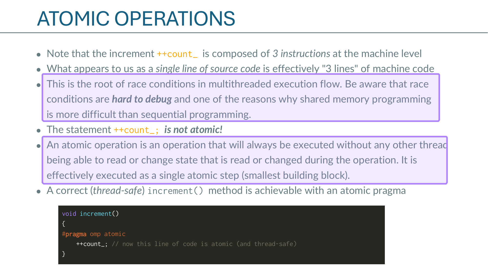
这页总结上一页的核心洞察：一行 C++ 源码 ≠ 一条机器指令。看起来"一气呵成"的操作其实可能在中间被打断。这是 race condition 难以察觉、难以调试的根本 —— 你盯着 C++ 代码看不出问题，因为问题只在汇编层才显形。
Atomic operation（原子操作）的定义：保证作为一个不可分割的整体执行，中途不会被其他线程打断、不会被打散成多步。是并发编程的最小积木。
OpenMP 提供了最简单的修复：#pragma omp atomic 加在自增前，编译器会用 CPU 的原子指令（比如 x86 的 lock add 或 lock xadd）实现，硬件保证整个"读-改-写"不被打断。
例子 — x86 的 lock 前缀：
; 普通 add：会被中间打断 add DWORD PTR [rax], 1 ; lock 前缀：硬件保证整条指令原子完成，期间锁住对应缓存行 lock add DWORD PTR [rax], 1
lock 前缀让 CPU 在执行这条指令期间锁定 cache line，其他核心如果想访问同一行必须等。代价：比普通 add 慢 ~20-100 倍。所以原子操作虽然正确但不便宜。
常见的硬件原子操作：原子加（atomic add）、原子比较交换 CAS（compare-and-swap）、原子交换（exchange）。CAS 是 lock-free 数据结构的基石。
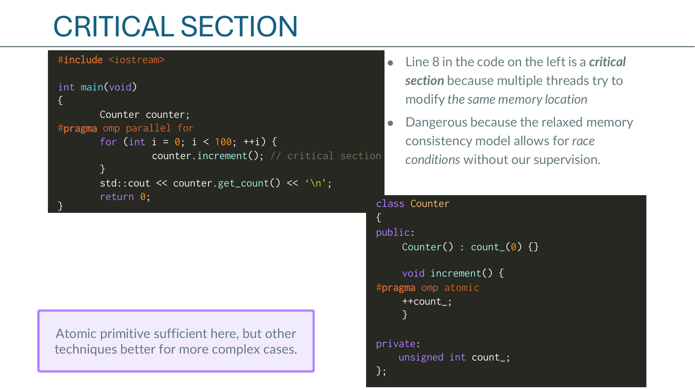
引入另一个并发编程的核心概念。Critical section（临界区）：一段代码，里面会访问共享资源，必须保证同一时刻只有一个线程在执行。
Slide 例子里 counter.increment() 这一行就是临界区。多个线程都想修改同一块内存（count_），必须想办法让它们排队，否则就 race condition。
为什么 OS / 硬件不自动帮我们处理？因为 slide 提到的 relaxed memory consistency model（宽松内存一致性模型） —— 现代 CPU 为了性能，允许硬件层对内存操作做重排序、缓存延迟同步等优化。这些优化在单线程下完全透明，但在多线程下会让 race 更隐蔽。所以"安全"不是默认提供的，而是需要程序员主动声明。
保护临界区的常见手段（从轻到重）：
Slide 紫框提示："对 Counter 这种简单情况原子操作就够用了；更复杂的场景（比如要修改多个相关字段、维持不变量）需要用锁或更高级的机制"。
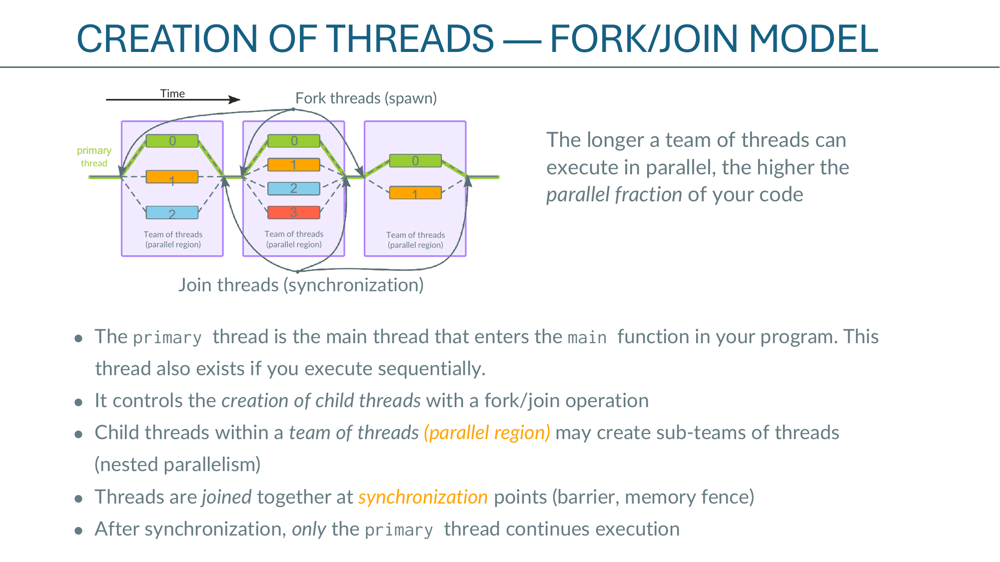
这页介绍 fork/join 模型 —— OpenMP 等并行框架背后最常见的执行模型。
生命周期。程序开始时只有 primary thread（主线程，跑 main 函数）。遇到并行区域时，主线程"fork"出一队 child threads（也叫 worker threads）一起干活。这一段所有线程并行执行。并行区域结束时所有线程在 join 点汇合（每个线程都到达后才能继续），然后只剩主线程接着往下走。
图里横轴是时间。绿色那条贯穿始终的线就是主线程。中间紫色的"束"是某个 parallel region 里临时创建的线程团队，结束就 join 回去。
几个细节：
类比：项目经理（primary thread）在 main 阶段独自工作，需要并行处理时召集一队员工（fork），等所有人都汇报完成（join），项目经理才能进入下一阶段。员工只在并行任务期间存在，干完就解散。
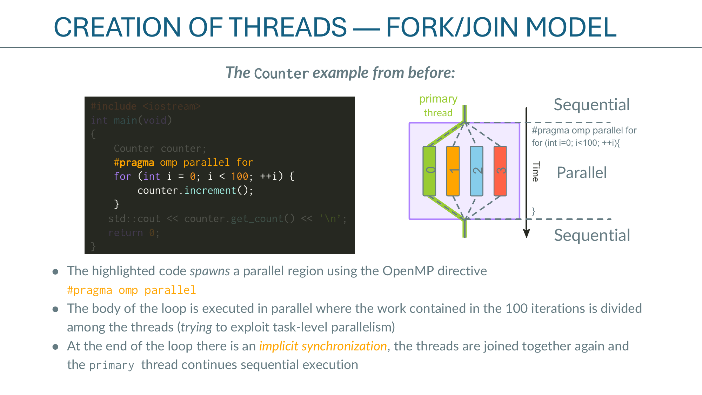
把 fork/join 模型套到之前的 Counter 例子上。完整流程：
#pragma omp parallel for → fork：开一队线程，把 100 次循环迭代分给它们（如果 4 个线程，每个大概干 25 次）counter.increment()（这里仍然有 race，除非 increment 里加了 atomic）右边图就是这个流程的可视化：竖轴是时间，从上往下走 Sequential → Parallel → Sequential。
关键术语：
串起 Slides 16-25 的整条主线：从一个简单 Counter → 串行版本永远正确 → 加 OpenMP 并行后出现 race condition → 反汇编揭示根因（一行 C++ 是多条机器指令）→ 用 atomic 修复 → 引出临界区的概念 → 给出整体的 fork/join 执行模型作为框架。
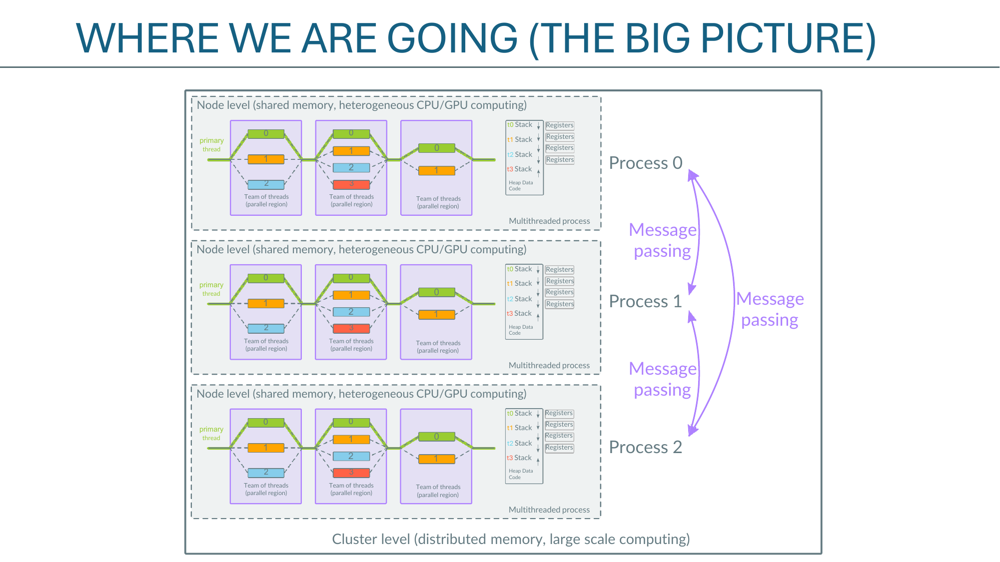
这页是个承上启下的架构图，告诉你"现在站在哪、要去哪"。
图的结构：
这页真正的重点：紫色箭头（process 间通信）。三个 process 是独立的，地址空间互不可见，只能靠 message passing 沟通。这正是 slide 13 讲的"process 间地址空间隔离 → 必须 IPC/MPI 通信"的图像化版本。
承上 = 已学的部分。每个 process 内部那一坨蓝绿小块、parallel region、stack —— 就是本节课 slides 9-25 讲的全部 OpenMP 内容。一个 process 内的多线程，共享地址空间，靠 race / atomic / fork-join 等机制协调。整门课到这里只覆盖了"一个 process box 内部"。
启下 = 接下来要学的部分。要把多个独立 process 用 message passing 连起来，scale 到整个 cluster。这就是 MPI（Message Passing Interface）—— 后续课程的主角。
为什么是 message passing 而不是共享内存？因为 process 之间根本就没有共享内存可言（slide 13 说过）。即使两个 process 跑在同一台物理机器上，它们的虚拟地址空间也是独立的，MMU 把同一个虚拟地址映射到不同的物理 RAM。要交换数据只能"复制 + 传递" —— 这就是 message passing 的本质。跨节点更是如此：连物理 RAM 都不共享，必须走网络。
process 间通信的代价：
对比 process 内部线程间访问共享内存的纳秒级，可见跨 process 通信慢几个数量级。这也是为啥要"层内尽量共享内存，跨 process 才走 message passing"。
一句话总结这页：你已经掌握了"一个 process 内部如何并行"（OpenMP）；接下来要学"多个 process 之间如何协作"（MPI）。这页画的就是终极目标 —— 一群独立的多线程 process 通过消息传递组成一个大型并行系统。
层次结构（呼应 slide 9 的图）：
Node（一台物理机器）
└── Package（CPU 芯片 / socket，一个 node 可能有 1-4 个）
└── Core（核心，物理执行单元）
└── PU（Processing Unit，逻辑执行单元，hyperthreading 后每核 2 个）
"node = 一个 CPU" 的说法只是口语简化。准确说 node = 一台共享同一份 RAM 的物理机器，里面通常多 socket、多 core。
同一瞬间一个 core 能跑几条指令流：
| 单位 | 能并行执行几个指令流 |
|---|---|
| 1 个 core（不开 HT） | 1 |
| 1 个 core + hyperthreading | 2（SMT） |
| 1 颗 CPU 芯片 | 核心数 × HT 系数 |
| 1 个 node（多 socket） | sockets × 核心数 × HT 系数 |
OS 调度的最小单位是 thread，不是 process。Process 只是个容器（地址空间 + 资源 + 文件描述符等），它本身不"跑"。CPU 上跑的永远是某个 thread。"运行一个 process" 这种说法实际意思是"运行这个 process 里的某个 thread"。Linux 内核更彻底，统一叫 task，不区分 process/thread。
具体例子。一个 8 核 node 上有 process A（1 线程）、process B（4 线程）、process C（2 线程）+ 一堆系统进程，总共可能有几十上百个 thread。OS 调度器把它们映射到 8 个 core 上：
关键事实：同一 process 的多个 thread 可以同时跑在不同 core 上 —— 这就是 OpenMP 加速的物理基础。
OS 层面没有限制。任何 node 任何时刻都至少跑几十上百个 process（系统服务、shell、用户程序…）。slide 26 画"每 node 一个 process" 指的是用户的 MPI workload 视角，不是 OS 层面。
用户工作负载的三种典型分配模式（以 32 core × 4 node 集群为例）：
| 模式 | 每 node MPI process 数 | 每 process 线程数 | 总线程数 | 能用几个 node |
|---|---|---|---|---|
| Pure MPI | 32（每核一个 rank） | 1 | 128 | 4 |
| Pure OpenMP | 1 | 32 | 32 | 1（跨不了 node） |
| Hybrid | 1 | 32 | 128 | 4 |
| Hybrid（每 NUMA 一 rank） | 2-4 | 8-16 | 128 | 4 |
Pure OpenMP vs Hybrid 的关键区别：单 node 时两者完全一样；多 node 时只有 Hybrid 能用上多 node 资源。OpenMP 假设所有线程共享同一份内存，跨 node 没共享内存，所以 OpenMP 程序物理上跨不了节点。
Pure OpenMP（1 节点）： Hybrid（4 节点协作）： ┌─── Node 0 ──────┐ ┌Node0┐ ┌Node1┐ ┌Node2┐ ┌Node3┐ │ 1 process │ │ P0 │←│ P1 │←│ P2 │←│ P3 │ │ 32 thread │ │32th │ │32th │ │32th │ │32th │ └─────────────────┘ └─────┘ └─────┘ └─────┘ └─────┘ 其他 3 节点闲置 ❌ ↑─── MPI message passing ───↑
怎么控制每 node 跑几个 process。MPI 启动器的 --map-by 参数：
# 4 节点 × 1 rank/节点（hybrid 模式） mpirun -np 4 --map-by ppr:1:node ./prog # 4 节点 × 2 NUMA = 8 rank mpirun -np 8 --map-by ppr:1:numa ./prog # 4 节点 × 32 core = 128 rank（pure MPI） mpirun -np 128 --map-by core ./prog
配合 OMP_NUM_THREADS 决定每 process 开几线程。典型 hybrid 写法：
OMP_NUM_THREADS=32 mpirun -np 4 --map-by ppr:1:node ./hybrid_prog
为啥 hybrid 通常最优：节点内线程共享内存（纳秒级通信），节点间靠 MPI（微秒级）。process 越少 → 昂贵的 MPI 通信越少 → 整体越快。
什么时候用 pure MPI：程序天然没共享数据（embarrassingly parallel）；想要 process 级隔离（一个 rank 崩不影响别的）；不想写 OpenMP 省事。
能。叫 oversubscription（超额订阅）。但计算密集场景下性能通常更差。
原理：OS 时间片轮转（time slicing）。OS 调度器在多个 thread 之间快速轮换，每个跑几毫秒就被换下来。从用户视角看像是 64 个 thread "同时"在跑，实际每瞬间只有 32 个真正在 core 上执行。
时间 → Core 0: [T1][T33][T1][T33]... ← T1 和 T33 轮换 Core 1: [T2][T34][T2][T34]... ... Core 31: [T32][T64][T32][T64]...
为啥性能通常变差：
HPC 黄金规则：
什么时候 oversubscription 反而合理：
实际限制：Linux 默认每进程线程上限几万（/proc/sys/kernel/threads-max）；每线程默认占 8MB 栈，1000 线程 = 8GB 栈空间。实际工程很少超几百线程。
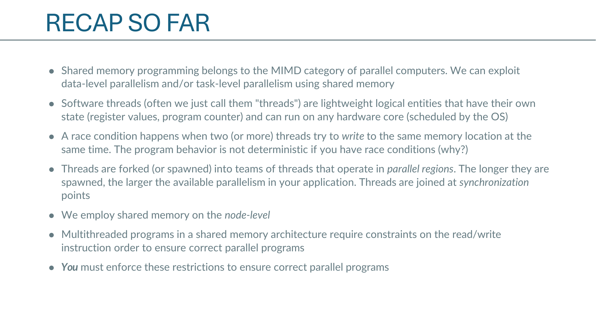
这是 Lecture 5 的总结页，把前面 25 张 slide 的核心点压成 7 条。每条都对应之前的某个 slide，可以当复习题来用。
1. 共享内存属于 MIMD 范畴。MIMD（Multiple Instruction, Multiple Data）= 多个指令流操作各自的数据，是 Flynn 分类里最一般的形式。共享内存可以同时利用 data-level（多线程处理不同数据）和 task-level（多线程做不同任务）两种并行。
2. 软件线程是"轻量级逻辑实体"。每个线程有自己的私有状态（寄存器值、program counter），但跟同进程的兄弟线程共享代码和堆。OS 调度器决定线程在哪个核上跑，可以被随时挪到别的核（slide 14/15 讲过）。
3. Race condition：两个或更多线程同时写同一块内存。注意定义重点是"写"。同时读没事；只有"同时存在写"才有 race。有 race 的程序是非确定性的（non-deterministic）—— 同样输入、同样代码，每次运行结果可能不同，因为线程调度顺序每次都不一样。这是并行 bug 最难调的根本原因。
4. 线程在 parallel region 里被 fork，joined 在 synchronization point。Parallel region 越长，能并行的工作越多 —— 但要小心串行段成为瓶颈（这是 Amdahl 定律的核心）。
5. 共享内存只能在节点内用（单台物理机），跨节点必须靠消息传递（呼应 slide 26 的大图）。
6 + 7. 程序员必须主动施加 read/write 顺序约束，否则程序不正确。这是因为现代 CPU 和编译器为了性能允许重排序内存操作。在单线程下完全透明，但在多线程下会让 race 更隐蔽。所以 atomic、mutex、memory fence 这些机制不是"可选优化"，是"正确性必需"。
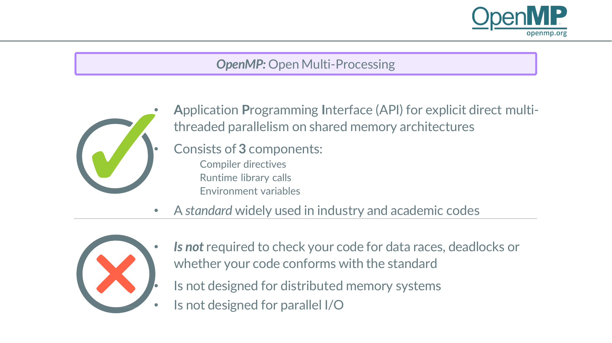
正式介绍 OpenMP。一句话定义：共享内存架构上做显式多线程并行的 API 标准。重点在"显式"：你告诉编译器哪里要并行（不像自动并行化那样靠编译器猜）。
OpenMP 由三部分组成。理解这个分工很关键，因为日常用 OpenMP 时三种东西都会碰到：
#pragma omp ...。比如 #pragma omp parallel for。这是 OpenMP 最有特色的部分 —— 不需要改代码结构，只在循环前加一行 pragma 就能并行化。omp_get_thread_num()（查当前线程编号）、omp_set_num_threads(8)（设置线程数）。需要 #include <omp.h>。OMP_NUM_THREADS=8 ./a.out。好处是不用重新编译就能改线程数。三者优先级（从低到高）：环境变量 < 运行时库调用 < 编译器指令里的子句。也就是说，代码里 num_threads(4) 子句会盖过 OMP_NUM_THREADS=8。
OpenMP 不做的事（很重要）。这部分是经常踩坑的地方：
记忆口诀：OpenMP 给你"在节点内开线程"的能力，正确性靠你自己。任何"我以为框架会帮我处理"的想法都是 bug 的温床。
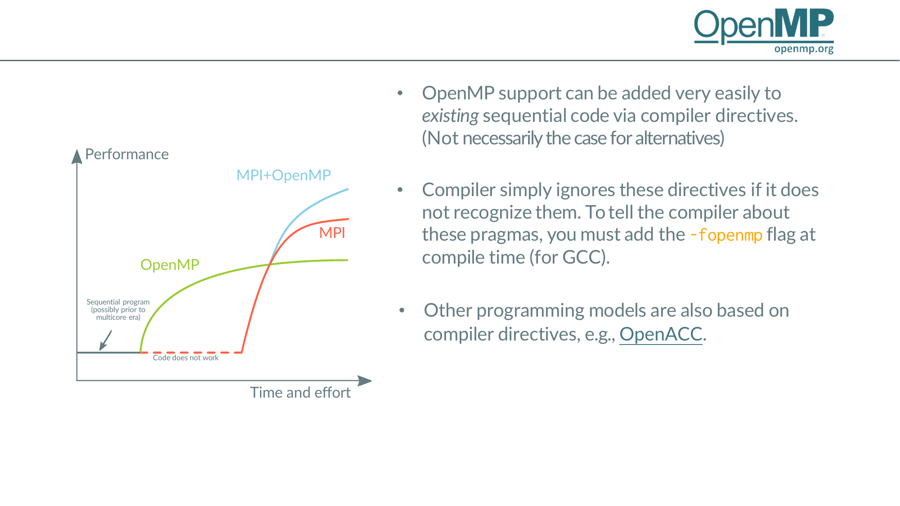
这页用一张曲线图回答"为什么很多人选 OpenMP"。横轴是开发时间和精力，纵轴是性能。三条曲线走势完全不同。
OpenMP（绿色）：起步快，加几个 #pragma 就能拿到不错的加速。但很快进入平台期 —— 因为 OpenMP 的天花板就是单节点的核数和内存上限。
MPI（红色）：起步慢，前期有一段虚线"Code does not work"（图中标注）—— 这是因为用 MPI 必须重新设计程序：把数据切分到不同进程、显式写 MPI_Send / MPI_Recv、处理同步。这个改造期间程序是不能跑的。但一旦改造完成，性能可以远超 OpenMP，因为它能跨节点扩展。
MPI + OpenMP 混合（蓝色）：天花板最高，但开发成本也最大。
OpenMP 最关键的工程优势：渐进式改造（incremental parallelism）。三条曲线对比就能看出：OpenMP 可以在不破坏现有串行代码的前提下，一段段加 #pragma 慢慢并行化。MPI 则必须从头重新设计架构。
另一个 OpenMP 的隐藏优势：graceful degradation（优雅降级）。编译时不加 -fopenmp，编译器会直接忽略所有 #pragma omp，把代码当作普通串行程序编译。同一份源代码在支持/不支持 OpenMP 的环境都能跑（只是少了并行加速），代码的可移植性、可调试性都很好。
怎么编译。GCC 用户必须加 -fopenmp：
g++ -fopenmp -O2 my_program.cpp -o my_program ./my_program # 默认线程数 = 核心数 OMP_NUM_THREADS=4 ./my_program # 显式指定 4 线程
OpenACC 是亲戚。slide 提到 OpenACC 用同样的"指令式"哲学，但目标是 GPU 等异构加速器。语法长这样：#pragma acc parallel loop。理念一样：原代码不动，靠 pragma 标记并行区域。
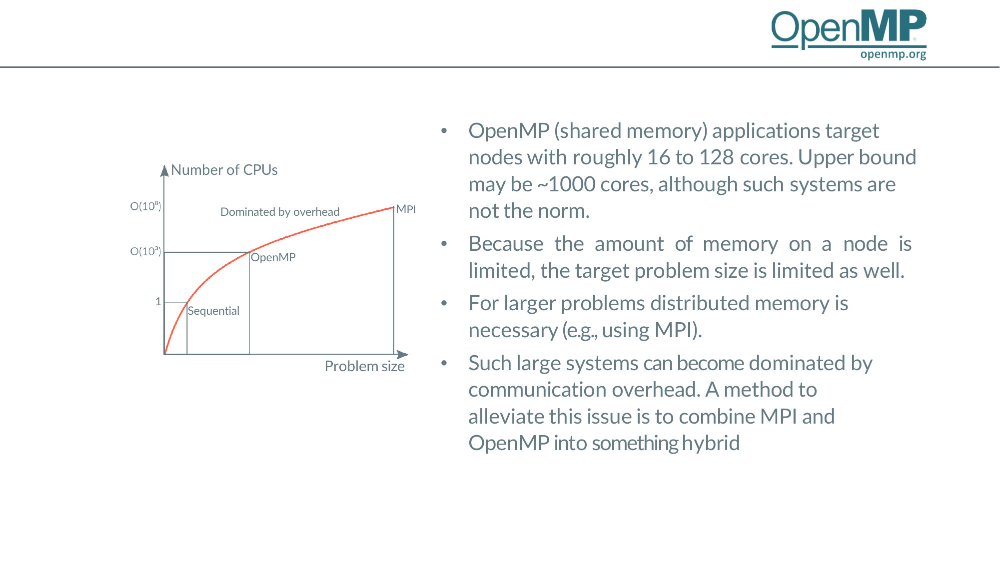
承接上一页继续讲选型。这页的主问题是：OpenMP 能撑到多大规模？什么时候必须换 MPI？
看图。横轴是问题规模，纵轴是 CPU 数量（对数）。三段：
OpenMP 的硬上限：单节点。原因是 OpenMP 依赖共享内存，所有线程必须能访问同一份 RAM。这就把 OpenMP 锁死在单台物理机器里。典型节点 16-128 核，超大节点（特殊机器）能到 ~1000 核，但市面上不常见。
核数限制 ⇒ 内存限制 ⇒ 问题规模限制。单节点的 RAM 通常几百 GB（顶配能到 TB 级），这就是 OpenMP-only 程序能处理的最大问题尺寸。要做模拟整个银河系或全国天气这种事，单节点内存根本装不下，必须 MPI 把数据切到多节点。
大规模时通信会变瓶颈。规模到几千节点时，节点之间网络通信延迟和带宽就成了主要开销。这时候纯 MPI（每个核一个 process）会产生海量小消息，性能反而下降。
解药：MPI + OpenMP 混合（hybrid）。每个节点跑 1 个 MPI process，process 内部用 OpenMP 开多个线程。这样：
具体感受一下规模差。假设要在 32 节点 × 32 核的集群上跑：
消息数差 1000 倍 —— 这就是 hybrid 在超大规模下的性能优势来源。
选型小结：
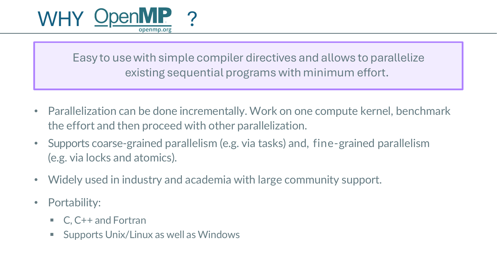
这页把 OpenMP 的核心卖点压成一张 slide。紫框主旨：用简单的 compiler directive，最小工作量并行化已有串行代码。
1. Incremental parallelization（渐进式并行化）。可以一次只并行化一个 compute kernel，benchmark 后再做下一个。"compute kernel" 指程序里最耗时的几个函数 / 循环（hot spot）—— 通常用 profiling 工具（gprof / perf）找出来。这点对比 MPI 优势巨大：MPI 必须先重新设计整个数据布局，全或全无；OpenMP 可以一段段慢慢上，每改一段都还能跑。
2. 支持 coarse-grained 和 fine-grained 两种粒度。
#pragma omp task。每个 task 是一个较大的独立单位，做完就走，少同步。两种粒度对应不同场景：粗粒度适合天然可分的工作（如批处理 100 张图，每张独立）；细粒度适合需要频繁协作的（如多线程更新同一个共享数据结构）。
3. 工业界和学术界广泛使用。这意味着文档、教程、Stack Overflow 答案丰富，主流编译器都成熟支持，遇到 bug 容易找到解决方案。
4. Portability（可移植性）。
串起来一句话：OpenMP 是低成本入门、增量改造、有粒度选择、跨平台跨语言的并行编程标准。这就是 HPC 课从它入手的原因 —— 学完能马上用，不用大改架构。
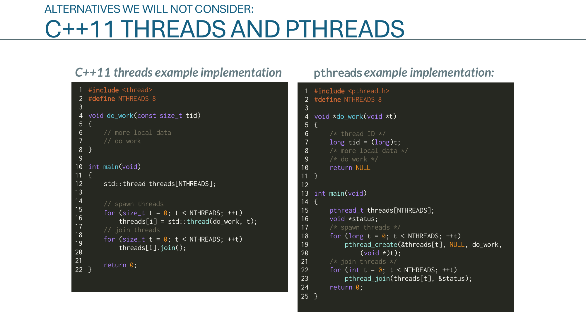
这页摆出两种"不用 OpenMP 时的替代方案"，目的是对比凸显 OpenMP 的简洁。课上不会深入讲这两种。
左边：C++11 std::thread。C++ 标准库自带的线程类，需要 #include <thread>。
std::thread threads[NTHREADS];
for (size_t t = 0; t < NTHREADS; ++t)
threads[t] = std::thread(do_work, t); // 显式 spawn
for (size_t t = 0; t < NTHREADS; ++t)
threads[t].join(); // 显式 join
右边：pthreads（POSIX Threads）。C 语言的线程库，Linux / macOS 通用，是 std::thread 底层的实现基础。
pthread_t threads[NTHREADS];
for (long t = 0; t < NTHREADS; ++t)
pthread_create(&threads[t], NULL, do_work, (void*)t);
for (int t = 0; t < NTHREADS; ++t)
pthread_join(threads[t], &status);
注意 do_work 的签名必须是 void* (*)(void*)，因为 pthread 是 C 库，没模板，传参靠 void* 类型擦除。要传整数得强转 (void*)t，函数里再 (long)t 转回来。
对比 OpenMP 的等价写法：
#pragma omp parallel num_threads(8) do_work(omp_get_thread_num());
两行搞定上面 20+ 行的事。OpenMP 把 spawn / join / 线程数管理 / 数据划分等 boilerplate 全藏起来。
为啥课上不讲 pthreads / std::thread：
但什么时候反而该用它们？
std::future、std::async）定位：OpenMP 是 HPC / 科学计算场景的事实标准；std::thread 是通用 C++ 多线程标准；pthreads 是底层 / 系统编程标准。三者目标人群不同。
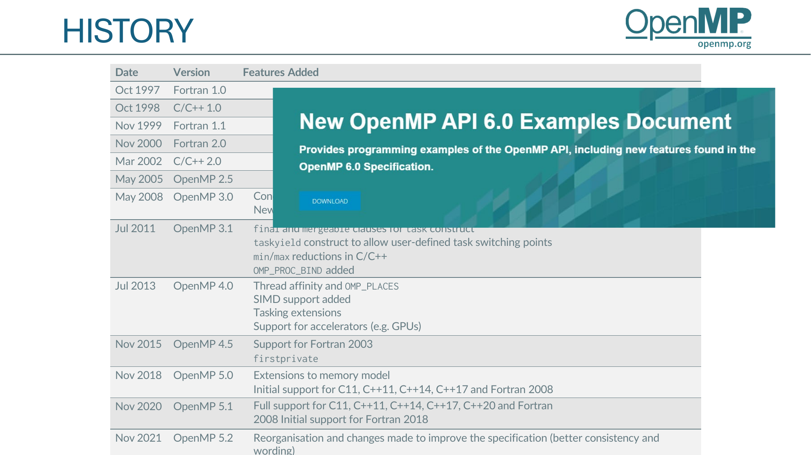
OpenMP 的版本时间线。重点不是背日期，是知道哪个版本引入了哪些能力，便于查文档和判断编译器支持。
| 年份 | 版本 | 主要新能力 |
|---|---|---|
| 1997 | Fortran 1.0 | OpenMP 诞生，最早只支持 Fortran（HPC 老派语言） |
| 1998 | C/C++ 1.0 | 加入 C/C++ 支持 |
| 2005 | OpenMP 2.5 | 第一个统一 Fortran 和 C/C++ 规范的版本 |
| 2008 | OpenMP 3.0 | 加入 tasking（重大里程碑） |
| 2013 | OpenMP 4.0 | 加入 SIMD 和 GPU/加速器支持 |
| 2015 | OpenMP 4.5 | 更多任务依赖控制 |
| 2018 | OpenMP 5.0 | memory model 扩展、对现代 C++ 标准支持 |
| 2020-21 | OpenMP 5.1 / 5.2 | 规范重组、对 C++20 / Fortran 2018 完整支持 |
三个里程碑要记住：
OpenMP 3.0（2008）的 tasking。3.0 之前 OpenMP 只能并行 for 循环（数据并行），适合"100 个独立迭代"这种规整场景。3.0 引入 #pragma omp task，让你可以表达任意任务图 —— 一个任务可以创建子任务，子任务可以再创建。这就支持了递归并行（quicksort、tree traversal、图遍历）等以前 OpenMP 做不到的场景。
OpenMP 4.0（2013）的 GPU 支持。#pragma omp target 把代码段卸载到 GPU 执行。让 OpenMP 从纯 CPU 工具变成异构（CPU+GPU）工具。但实际工程里 CUDA / HIP 仍然是主流，OpenMP target 是"想跨厂商不绑定 NVIDIA"时的选择。
OpenMP 4.0 的 SIMD。#pragma omp simd 提示编译器把循环向量化（生成 SSE / AVX 指令），跟多线程并行正交但能叠加。
实战 tip：编译时检查版本。OpenMP 定义了 _OPENMP 宏，值是 yyyymm 格式：
#ifdef _OPENMP
#if _OPENMP >= 201511 // OpenMP 4.5+
// 用 4.5 才有的特性
#endif
#endif
查 GCC 支持的版本：g++ --version + 看 GCC release notes。GCC 12+ 大致到 OpenMP 5.0；ICC 一向走在最前。
slide 上那个弹窗是 OpenMP 6.0 examples 文档的广告，不是版本表的一部分，可以忽略。
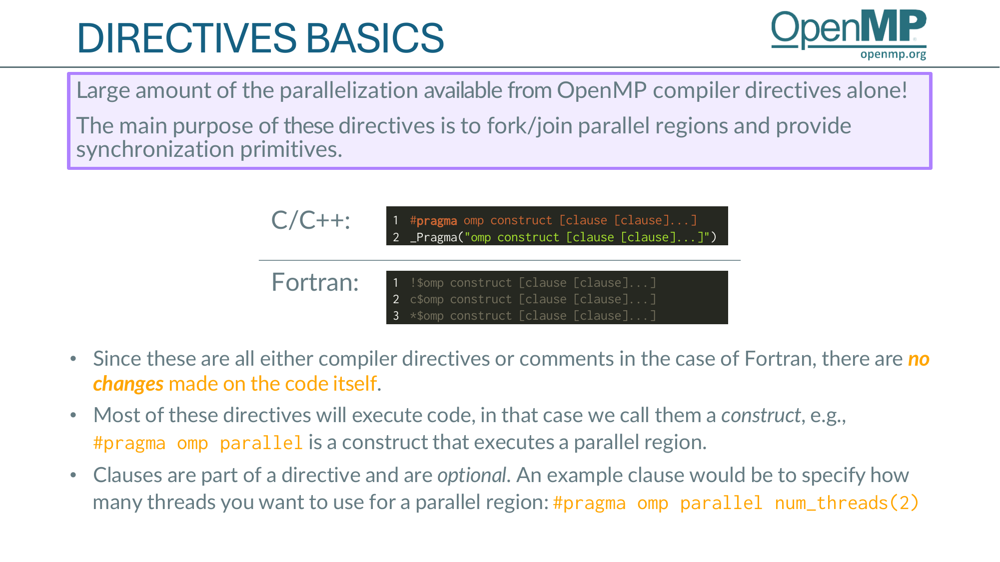
正式介绍 OpenMP 的 pragma 语法。前面 slide 28 简单提过，这页给出精确语法。
C/C++ 语法：
#pragma omp construct [clause [clause]...] // 通用形式
__pragma("omp construct [clause [clause]...]") // MSVC 在宏里用
Fortran 语法（注意 ! 是 Fortran 的注释起始符）：
!$omp construct [clause [clause]...] c$omp construct [clause [clause]...] *$omp construct [clause [clause]...]
为什么用 pragma / 注释这种形式？保证 graceful degradation：不开 OpenMP 编译时（比如忘加 -fopenmp），这些行被当成"未知 pragma" 或"普通注释"直接忽略，代码照样能编译运行（只是没并行加速）。一份源代码两套用法。
三个核心术语必须分清（考点）：
| 术语 | 含义 | 例子 |
|---|---|---|
| Directive（指令） | 整行 #pragma omp ... | #pragma omp parallel num_threads(2) |
| Construct（构造） | 会执行代码的 directive（不是所有 directive 都执行） | parallel（执行并行区域）；for、task、critical 等 |
| Clause（子句） | 跟在 construct 后面的可选修饰 | num_threads(4)、shared(x)、private(y)、reduction(+:sum) |
举例分解 #pragma omp parallel for num_threads(4) reduction(+:sum)：
parallel fornum_threads(4) 和 reduction(+:sum)Clause 都是可选的。最简洁就 #pragma omp parallel，所有参数走默认值（线程数 = 核数、变量按"区外 shared / 区内 private"默认规则）。
#pragma、_Pragma、#omp 的关系（语法层面彻底搞清）1. 没有 #omp 这种独立写法。#pragma omp parallel 是一条指令的两部分，不是 #pragma 和 #omp 二选一：
#pragma 是 C/C++ 的预处理器指令（preprocessor directive），用来给编译器发"特定提示"。其他 pragma 还有 #pragma once、#pragma pack(1) 等。编译器不认识时静默忽略（标准要求）。omp 是命名空间标识符，告诉编译器"这条 pragma 属于 OpenMP"。开 -fopenmp 时编译器把 #pragma omp ... 当 OpenMP 处理；不开时整段被忽略，代码退化成顺序版本 —— 这就是 OpenMP 渐进式并行（incremental parallelism）哲学的语法基础。
2. #pragma omp ... 和 _Pragma("omp ...") 作用完全相同，编译出的二进制一样：
#pragma omp parallel for ⇔ _Pragma("omp parallel for")
区别只在能不能从宏展开：
#pragma 是预处理指令（以 # 起头），宏展开结果不能包含 # 开头的预处理指令，所以宏体内不能用。_Pragma 是 C99/C++11 标准引入的语言内置 operator，跟 sizeof、if 一样。不需要任何 #include 或定义，直接就能用。能在宏里出现。注：__pragma(...)（双下划线、无引号）是微软扩展，跟 _Pragma（单下划线、需引号）作用一样但只在 MSVC 上有。跨平台代码用标准的 _Pragma。
3. _Pragma 的实战价值在写宏。直接用 _Pragma 合法但没意义（#pragma 更短）。它的存在感只在需要宏生成 pragma 时体现：
// 不合法 —— 宏体不能含 #
#define PARALLEL_FOR #pragma omp parallel for
// 合法
#define PARALLEL_FOR _Pragma("omp parallel for")
PARALLEL_FOR
for (int i = 0; i < N; ++i) ...
典型场景：写跨编译器抽象（OpenMP 不可用时让宏消失）、写库的并行模板。
4. _Pragma("...") 引号里的内容必须是合法 pragma。规则就是 _Pragma("X") ⇔ #pragma X，不能瞎写：
_Pragma("omp parallel for")、_Pragma("once")、_Pragma("pack(1)")_Pragma("hello world")（不是 pragma，被忽略）、_Pragma("#pragma omp ...")（多了 #pragma 前缀，错的）引号里的字符串不会被打印。它是编译期给编译器看的指令，不是 printf。运行时根本不存在这串文本。对比看清：
printf("omp parallel for"); // 运行时：屏幕真的打印
_Pragma("omp parallel for"); // 编译时：当 pragma 解析，运行时啥都没
速记：直接写源码 → #pragma omp ...；写在宏里 → _Pragma("omp ...")。99% 的 OpenMP 代码用前者就够了，看到 _Pragma 通常是某个宏的内部实现。
宏 = 预处理器在编译开始前做的"文本替换"。#define 定义的名字，会在正式编译前被原样替换成对应内容。
三种主要用途：
(1) 命名常量：
#define PI 3.14159 double area = PI * r * r; // 编译前被替换成 3.14159 * r * r
(2) 简单内联代码（function-like macro）：
#define SQUARE(x) ((x) * (x)) int y = SQUARE(a + 1); // 替换成 ((a + 1) * (a + 1))
每个参数都包括号是因为是纯文本替换，不包括号会撞运算符优先级（SQUARE(a+1) 不加括号会变成 a + 1 * a + 1）。
(3) 条件编译：
#ifdef _OPENMP
printf("OpenMP enabled\n");
#else
printf("No OpenMP\n");
#endif
_OPENMP 是编译器在开 -fopenmp 时自动定义的宏。#ifdef 是编译时判断，false 那段直接从源码消失，跟运行时 if 完全两回事。
宏 vs 函数 vs 常量的本质区别：宏在编译前做文本替换，没有类型检查、没有调用开销；函数在运行时调用、有类型检查；const 是编译期变量、有类型。现代 C++ 推荐能用 const/constexpr/inline 函数就别用宏。
跟 _Pragma 的关系：_Pragma 之所以存在，就是为了能放在宏体里发 pragma 指令（#pragma 因为以 # 开头，宏展开时非法）。这就是它的全部价值。
三个词在 OpenMP 规范里是不同层次的概念，但教材里经常混着用，要分清。
严格 OpenMP 规范定义：
| 术语 | 含义 | 例子 |
|---|---|---|
| Directive | 整行 #pragma omp ...（包含 clauses） | #pragma omp parallel num_threads(8) shared(A) 这一整行 |
| Construct / directive-name | directive 里那个关键字，决定"做什么" | parallel、for、barrier、single |
| Clause | 挂在 construct 后面的修饰参数，微调行为 | num_threads(8)、shared(A)、private(i) |
类比。directive = 整个完整句子；construct = 句子里的动词；clause = 修饰动词的状语：
#pragma omp parallel num_threads(8) shared(A) private(i)
└────┘ └────┘ └──────┘ └────────────────────────────────┘
前缀 ns construct clause 列表
└──────────────────────────────────────────────────────────┘
整行 = directive
口语化用法（教学/博客常见）：经常把 parallel、for 这种关键字直接叫 "directive"。这是松散说法，但很普遍。看到时根据上下文判断。
Clause 的关键性质：
[] 表示可选）。num_threads(8) shared(A) 等同 shared(A) num_threads(8)。schedule 只能挂在 for 上，不能挂 parallel）。常见 clause 速查：num_threads(N) 开几个线程；shared(x)/private(x)/firstprivate(x) 数据作用域；reduction(op:list) 规约合并；schedule(kind, chunk) 循环调度策略；nowait 去掉 implicit barrier；collapse(n) 展平嵌套循环；if(cond) 条件并行。
速记：学 OpenMP 的全部内容 = "有哪些 directive，每个 directive 能挂哪些 clause，每个 clause 怎么用"。
Fortran（Formula Translation，1957 年诞生）是一门非常老的编程语言，比 C 还早 15 年。主流软件开发圈几乎绝迹，但在 HPC / 科学计算圈仍然广泛使用。
OpenMP 是同时支持 C/C++ 和 Fortran 的标准。规范里每条 directive 都给两套语法。HPC 的老牌代码（气候模拟、流体力学、量子化学）大量是 Fortran，OpenMP 必须照顾它们。
两套语法对比：
C/C++: #pragma omp parallel
Fortran: !$omp parallel
...
!$omp end parallel
差别要点：
#pragma（预处理器）；Fortran 没有预处理器，用注释前缀 !$omp。! 本来就是注释符，不开 OpenMP 编译时整行被当注释忽略 —— 同样实现"渐进式并行"。{} 划定 structured block；Fortran 用显式 !$omp end parallel 标记结束。Fortran 在 HPC 不死的原因：多维数组语法天生友好（A(i,j,k) 直接是真多维数组）；默认假设数组无别名（编译器能放心向量化）；LAPACK/BLAS 等核心数值库的几十万行代码资产；几十年优化积累的浮点性能。
对 CS 2050 的实际意义：作业不会要求写 Fortran，认识 !$omp 就行，知道它是 Fortran 版的 #pragma omp。真到 HPC 行业碰到老代码再学也不迟。
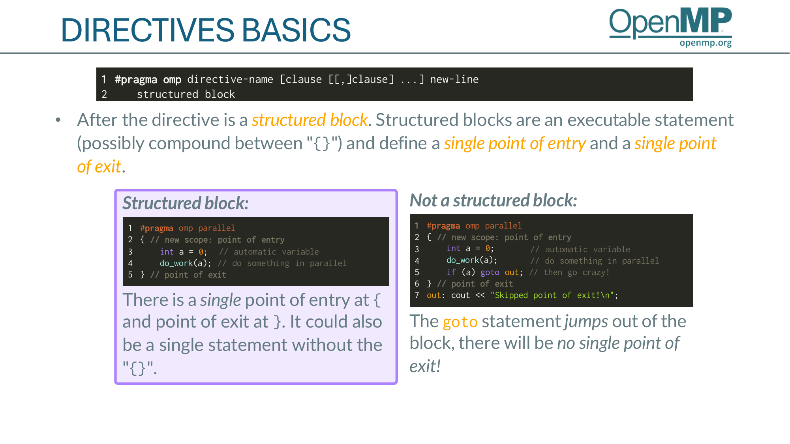
OpenMP 的一个核心约束：directive 后面跟的代码必须是 structured block（结构化块） —— 单一入口、单一出口。要么是 {} 包起来的复合语句，要么是一条单语句。
能做（结构化块，左侧紫框）：
#pragma omp parallel
{ // ← 唯一入口
int a = 0;
do_work(a);
do_work_out();
} // ← 唯一出口
不能做（破坏结构，右侧）：
#pragma omp parallel
{
int a = 0;
do_work(a);
if (a) goto out; // ← 跳出结构化块！违反规则
do_work_out();
}
out: cout << "Skipped point of exit!\n";
为什么有这个限制？OpenMP 需要在块结束处自动加 join / barrier 等同步机制。如果允许跳出，OpenMP 就不知道在哪里结束 parallel region，同步逻辑全乱、子线程可能被孤立 / 内存状态不一致。
禁止的跳出方式（全部）：
goto 跳出块return 跳出函数（在大多数 construct 里禁止）break 跳出 parallel for 的循环throw 跨过块边界（异常必须在同一结构化块内 catch）怎么实现"提前退出"逻辑？用 flag 让块自然走完：
bool done = false;
#pragma omp parallel
{
if (!done) {
do_work();
if (some_condition) done = true;
}
// 块自然结束，无 goto
}
或者用 #pragma omp cancel（OpenMP 4.0+），但用得少 —— 性能开销大，且需要配合 #pragma omp parallel 的 cancellation 子句。
"automatic variable" 是什么？就是栈上的局部变量。"Automatic" 来自 C 的存储类关键字 auto（默认就是 auto），意思是"进入作用域自动分配，离开自动回收"。在 parallel block 里 int a = 0 这种变量默认是 private（每个线程一份），跟 slide 26 Q6 讲的"区内声明 = private"规则一致。
goto 是什么语言的命令goto 是无条件跳转语句，在很多语言里都存在。
有 goto 的语言：C、C++、Fortran、Pascal、Go、PHP、汇编（对应 jmp）。
没有 goto 的语言：Java、Python、JavaScript、Rust、Swift。现代语言故意不要它，强制用结构化控制流（break/continue/异常）替代。
C 里的语法：
for (int i = 0; i < N; ++i) {
for (int j = 0; j < M; ++j) {
if (A[i][j] == target) goto found;
}
}
return 0;
found:
return 1;
goto label 让控制流无条件跳到 label: 那一行，跨过中间所有代码。典型用途：从深层嵌套循环一次性跳出、错误处理跳到统一清理代码。
为什么 slide 35 提它。goto 是破坏 single-exit 的最经典工具。从 structured block 中间跳到外部标签，整个块的控制流就乱了。所以 OpenMP 明文禁止 structured block 里出现 goto 跳出（break/return/异常同理）。
整体评价。goto 滥用会产生无法理解的控制流（俗称 spaghetti code）。社区强烈不推荐用，只在罕见场景才合理。新语言直接砍掉，老语言保留但很少用。考试只需认得这个关键字即可。
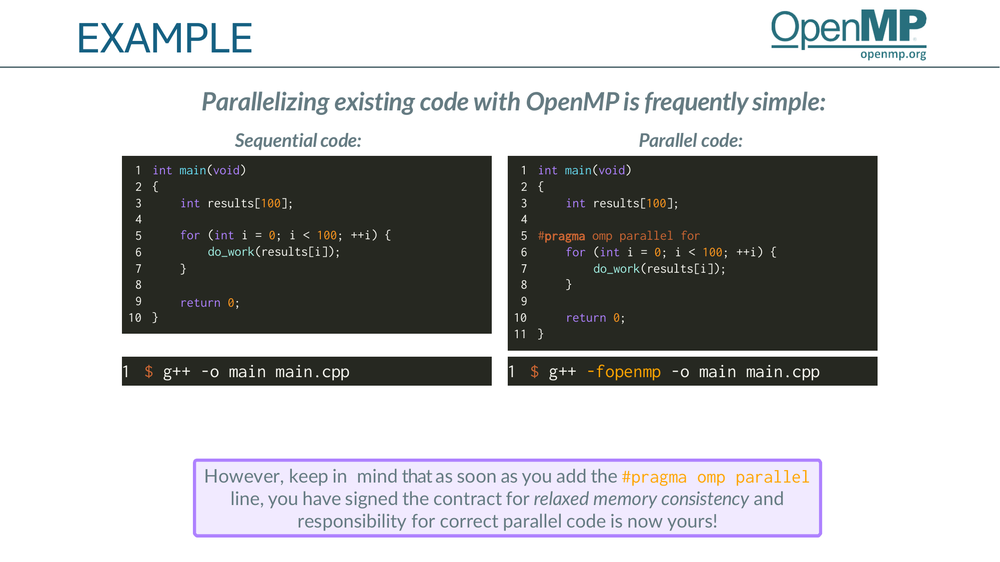
实例展示"加一行 pragma 就并行化"的体验，对应 slide 29 那条"OpenMP 起步快"的曲线。
串行版（左）：
int main(void) {
int results[100];
for (int i = 0; i < 100; ++i) {
do_work(results[i]);
}
return 0;
}
编译：g++ -o main main.cpp
并行版（右）：
int main(void) {
int results[100];
#pragma omp parallel for // ← 唯一改动
for (int i = 0; i < 100; ++i) {
do_work(results[i]);
}
return 0;
}
编译：g++ -fopenmp -o main main.cpp
差别就两处：一行 pragma + 一个编译选项。do_work() 函数体本身不用动。
底部紫框警告（关键）："As soon as you add the #pragma omp parallel line, you have signed the contract for relaxed memory consistency and responsibility for correct parallel code is now yours."
翻译人话：
#pragma omp parallel，就是告诉编译器"这些迭代之间彼此独立，可以乱序 / 并行执行"arr[i] = arr[i-1] + 1），程序会算错，且 OpenMP 不会报错什么场景能直接套这个 pragma？
results[i]）do_work 没访问共享可变状态什么场景不能直接套？（常见反例）
// ❌ 数据依赖（results[i] 依赖 results[i-1]） for (int i = 1; i < 100; ++i) results[i] = results[i-1] + 1; // ❌ sum 是共享变量，需要 reduction 子句 for (int i = 0; i < 100; ++i) sum += a[i]; // ❌ 修改共享容器 for (int i = 0; i < 100; ++i) global_vec.push_back(i);
修复办法：reduction(+:sum) 子句（专门处理累加）；private / firstprivate 子句（变量私有化）；critical 块或 atomic（slide 22-23 讲的）；或者重新组织算法消除依赖。
回到本节课主线：加 pragma 容易，保证正确性是你的事。这就是为什么前面花那么多 slide 讲 race / atomic / critical section —— 不学这些就敢加 pragma，等于签了个不知道在签什么的合同。
reduction 子句Reduction = "把 N 个值用某个二元运算符合并成 1 个值"的并行模式。典型如求和、求积、找最大/最小值。
写法：
#pragma omp parallel for reduction(+: sum)
for (int i = 0; i < N; ++i)
sum += a[i];
OpenMP 实际做的事（3 步）：
+ 初值是 0）。为什么需要它。多线程同时写同一个 sum 必然 race。用 critical 包累加正确但慢（每次累加都要拿锁）。reduction 是规范优化 —— 各干各的，最后合并一次，开销 O(nthreads) 而不是 O(N)。
支持的运算符：+ - * & | ^ && ||、min、max。也支持自定义。
详细机制（幺元表、合并实现、浮点结合性问题）见 slide 59-60。
parallel 和 for 都是 construct，不是 "construct + clause"错误理解："parallel 是 construct，for 是 clause"。
正确理解：for 也是 construct（worksharing 三件套之一），不是 clause。
#pragma omp parallel for 是 combined construct（组合构造）—— 把两个独立 construct 合写成一行的简写。等价于：
// 合写形式
#pragma omp parallel for
for (int i = 0; i < N; ++i) ...
// 等价分写
#pragma omp parallel
{
#pragma omp for
for (int i = 0; i < N; ++i) ...
}
外层 parallel 开线程队，内层 for 分循环迭代给线程。两者各管一摊，合写只是少打字。
判断窍门：能不能独立成一行 pragma？
#pragma omp parallel、#pragma omp for、#pragma omp barrier、#pragma omp critical。num_threads(8)、shared(A)、private(i)、reduction(+:sum)、schedule(...)、nowait、collapse(n)。clause 必须挂在某个 construct 后面才有意义，单独写不合法。construct 自己就能"做事"。
完整指令拆解：
#pragma omp parallel for num_threads(8) shared(A) reduction(+:sum)
└────────┘ └───────────┘ └───────────────────────────────────────┘
前缀 combined construct clause 列表
└──────────────────────────────────────────────────────────────────┘
整行 = directive
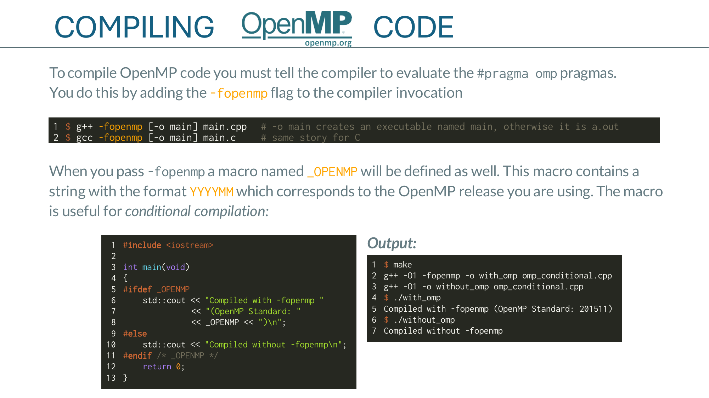
这页讲两件事：怎么编译，以及怎么写"同时支持有 / 无 OpenMP 的代码"。
编译命令。GCC / Clang 都用 -fopenmp：
g++ -fopenmp -o main main.cpp # C++ gcc -fopenmp -o main main.c # C
-o main 指定输出文件名为 main，不写就默认 a.out。
其他编译器对应的 flag：
| 编译器 | OpenMP flag |
|---|---|
| GCC / Clang | -fopenmp |
| Intel ICC（旧） | -openmp |
| Intel ICC（新，推荐） | -qopenmp |
| MSVC | /openmp |
-fopenmp 同时负责编译时启用 pragma和链接 OpenMP 运行时库（GCC 的 libgomp）。两个事一个 flag 搞定。
关键点：_OPENMP 宏。开了 -fopenmp 后，编译器会自动定义一个名叫 _OPENMP 的预处理宏，值是 YYYYMM 格式（年 + 月），对应你用的 OpenMP 标准的发布日期。比如 201511 = 2015 年 11 月 = OpenMP 4.5。
用途：条件编译。让同一份代码在有 / 无 OpenMP 的环境都能编译运行。
#include <iostream>
int main(void) {
#ifdef _OPENMP
std::cout << "Compiled with -fopenmp "
<< "(OpenMP Standard: " << _OPENMP << ")\n";
#else
std::cout << "Compiled without -fopenmp\n";
#endif
return 0;
}
同一份源码两种编译结果：
$ g++ -fopenmp -o with_omp test.cpp $ ./with_omp Compiled with -fopenmp (OpenMP Standard: 201511) $ g++ -o without_omp test.cpp $ ./without_omp Compiled without -fopenmp
这个能力为啥重要：
_OPENMP 宏隔离 OpenMP 专属代码（比如 omp_get_thread_num() 在没 OpenMP 的环境根本没声明，会编译失败）#if _OPENMP >= 201511 确保只在 OpenMP 4.5+ 才用某个新特性对比 slide 28 的"graceful degradation"：那里说不开 -fopenmp 时 pragma 被忽略 —— 这是语言层面的优雅降级。_OPENMP 宏 + #ifdef 是程序层面的优雅降级，让 omp_get_thread_num() 等运行时库调用也能优雅退掉。
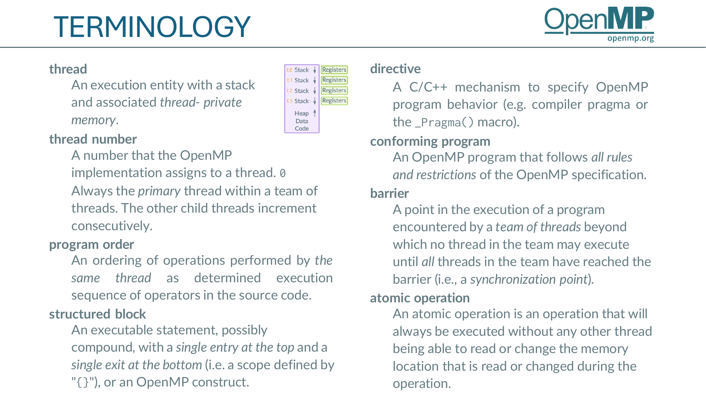
这页是 OpenMP 术语词典。前面 slide 用过的所有概念都在这里给精确定义。重点是把"非正式叫法"对应到"OpenMP 规范用词"，便于查文档。
thread：一个执行实体，带自己的 stack 和 thread-private memory。这是 OS 调度的最小单位（slide 14 讲过）。每个 OpenMP 线程独占一份 stack 和一些线程私有数据。
thread number：OpenMP 给团队中每个线程编的号。primary thread（主线程）= 0，其他 child threads 从 1 开始往上编。代码里用 omp_get_thread_num() 查自己的编号。
注：OpenMP 5.0 之前叫 master thread，5.0+ 改名 primary thread（更包容的术语）。新文档用 primary，老文档可能还叫 master。两者一回事。
program order：同一个线程内部，操作按源代码顺序执行的次序。注意只对单个线程内部成立 —— 不同线程之间的相对顺序由调度决定，不存在 program order。这个概念在讨论 memory model（slide 40）时关键。
structured block：单一入口、单一出口的代码块（slide 35 详细讲过）。directive 后面必须跟 structured block。
directive：C/C++ 里就是 #pragma omp ... 这一整行（或者 _Pragma() 宏形式）。slide 34 讲过。
conforming program：完全遵守 OpenMP 规范的程序。不 conforming 的程序行为是 undefined —— 编译器爱怎么处理就怎么处理。比如有 race condition 的程序就是 non-conforming，所以"程序结果可能是任何东西"在规范上是合理的。
barrier（屏障）：同步点。所有线程都到达 barrier 之前，谁也不能往后走。是最常用的同步原语。OpenMP 在很多地方隐式插 barrier：
parallel for 结尾（隐式 join）single / section 结尾也可以显式写 #pragma omp barrier。如果想去掉自动的 barrier，加 nowait 子句：#pragma omp for nowait。
atomic operation：执行期间任何其他线程不能读 / 改对应内存的操作（slide 22 讲过）。硬件保证不可分割。最常用的就是 #pragma omp atomic。
右上角的小图：再次画了 slide 15 的内存模型 —— 多个线程各自独立的 stack 和 registers，共享 heap / data / code 段。把这次 slide 38 的术语和图对应一下，concepts 就联通了。
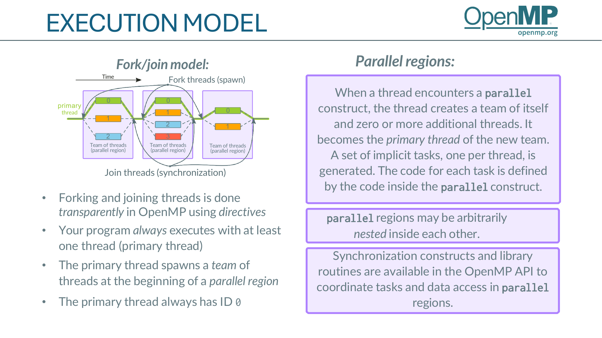
正式版的 fork/join 执行模型（slide 24 的精确化）。引入两个新术语：team of threads 和 implicit task。
左边的图。横轴是时间，绿色是 primary thread。每次遇到 parallel region 就 fork 出一队（team），并行干活，结尾 join 回 primary。可以连续多次进出 parallel region，也可以嵌套（nested）。
核心规则（左边 4 条）：
新概念 1: team of threads（线程团队）。一个 parallel region 里的所有线程构成一个 team。team 由 1 个 primary（继承自外面）+ N 个 worker（新 spawn 的）组成。N 由 OMP_NUM_THREADS / num_threads() 子句决定。
注意：N 可能是 0（"zero or more additional threads"，slide 原文）。比如设 num_threads(1)，team 就只有 primary 一人，等于没并行 —— 但仍然算"进了 parallel region"。
新概念 2: implicit task（隐式任务）。进入 parallel region 时，OpenMP 给 team 中每个线程生成一个"隐式任务"，每个线程执行整个 parallel block 一遍。
对比"explicit task"（#pragma omp task，OpenMP 3.0+）：explicit task 是动态创建、可以放进任务池让任意线程执行。implicit task 是 1 thread = 1 task，固定绑定。
嵌套 parallel region。slide 上说"may be arbitrarily nested"，但有个坑：
OMP_NESTED=true 或 omp_set_nested(1)。右边的紫框总结一下：
parallel construct → 当前线程变成新 team 的 primary，spawn 0 个或多个 worker跟 slide 24 的关系：slide 24 用大白话讲了 fork/join；slide 39 用 OpenMP 规范的精确术语（team / implicit task / primary）重述一遍。考试看到 "team" / "implicit task" 知道是这里的概念就行。
fork() 有关系吗？在这页里 spawn = fork = "造出 worker 线程"，是同义词。slide 标题 "Fork threads (spawn)" 的括号就是同义解释。
但要分清两件事：
1. OpenMP 的 fork ≠ Unix 的 fork(2)。Unix fork() 造的是新进程（独立地址空间、不共享内存）；OpenMP 的 fork 造的是新线程（同一进程、共享地址空间和堆）。OpenMP 的整个模型基于共享内存，所以必须是线程。"fork" 这里是比喻——像树枝分叉，一条控制流分裂成多条。
2. spawn 在实现上通常不是真的现造线程。主流 OpenMP runtime（libgomp、iomp 等）维护一个线程池：进程启动时就预建好线程，平时它们睡在条件变量上。#pragma omp parallel 出现时，runtime 只是把任务推给池里的线程并叫醒它们，循环结束让它们再去睡。所以 "spawn a team" 概念上是"造一队 worker"，实现上更像"激活一队 worker"。这也是 OpenMP 进出 parallel 区开销远小于 pthread_create 的原因。
斜杠表示"或"（or），意思是 N 这个值可能从这两个来源中的任一个得到，不是把两个数除一下。
实际上 OpenMP 决定 N 的来源链有 4 条，按优先级从高到低（前者覆盖后者）：
num_threads(N) 子句——写在 pragma 上，只对这一个 parallel 区生效，最强、最局部。omp_set_num_threads(N)——库函数，运行时调用，影响之后所有没写 num_threads 的 parallel 区。OMP_NUM_THREADS 环境变量——shell 启动前设的全局默认。nproc（机器逻辑核数）。注意语法：pragma 上是 num_threads(N)（子句，不是函数）；C 代码里是 omp_set_num_threads(N)（函数）。两者不同名字。
例子：
#pragma omp parallel // 走 OMP_NUM_THREADS 或默认
{ ... }
omp_set_num_threads(4);
#pragma omp parallel // 走 set 的 4
{ ... }
#pragma omp parallel num_threads(2) // 子句强制 2，覆盖上面的 4
{ ... }
#pragma omp parallel // 沿用 set 的 4，不被上一行影响
{ ... }
子句的作用域只是那一个 parallel 区，不会改全局。区 C 用完后区 D 又回到 4。
查询函数：omp_get_max_threads() 查"下一个 parallel 区会用几个"（不实际创建）；omp_get_num_threads() 查"当前 parallel 区里几个线程"（在串行区调它返回 1）。
shared / single），以及"递归会不会生出新线程"一句话区分：
#pragma omp parallel 时，OpenMP 自动给每个线程分配的工作单元。每线程一个，绑死。#pragma omp task 时，显式创建的工作单元，扔进任务队列，谁有空谁来跑。核心区别：
| 维度 | Implicit task | Explicit task |
|---|---|---|
| 怎么产生 | #pragma omp parallel / for 时自动 | #pragma omp task 显式创建 |
| 数量 | = team 线程数 | 任意，可远多于线程数 |
| 谁来执行 | 绑定到固定线程 | 任何空闲线程都能抢 |
| 适合场景 | 规整、可均分（数据并行） | 不规整、动态生成（递归、链表） |
| OpenMP 版本 | 一直都有 | 3.0（2008）才加入 |
Implicit task 例子：
#pragma omp parallel for num_threads(4) for (int i = 0; i < 100; ++i) work(i);
100 次迭代被切成 4 段，每段塞进一个 implicit task，一一对应固定线程，不互相抢。
Explicit task 例子（递归 fib）：
int fib(int n) {
if (n < 2) return n;
int x, y;
#pragma omp task shared(x) // 造一个 task，跑 fib(n-1)
x = fib(n - 1);
#pragma omp task shared(y) // 再造一个，跑 fib(n-2)
y = fib(n - 2);
#pragma omp taskwait // 等两个 task 都完
return x + y;
}
int main() {
#pragma omp parallel
{
#pragma omp single // 只让一个线程发起递归
printf("%d\n", fib(20));
}
}
shared(x) 是什么：数据共享子句。task 对外层函数局部变量默认按 firstprivate 处理（复制一份初值，往后写副本，外面看不到）。所以不写 shared(x) 的话，x = fib(n-1) 写的是 task 的私有副本，外面那个 x 永远拿不到结果。shared(x) 强制 task 写到外面那块内存。
三个数据共享子句对比：
| 子句 | 内存 | 初值 |
|---|---|---|
shared(x) | 共用外面那块 | 沿用外面当前值 |
firstprivate(x) | 每 task 一份私有 | 复制外面的值 |
private(x) | 每 task 一份私有 | 不初始化（垃圾值） |
taskwait 保证子 task 跑完才往下走，所以父 task 的栈帧里 x 还活着，子 task 写 x 是安全的。
#pragma omp single 是什么：让 team 里恰好一个线程执行接下来那段代码的 worksharing 构造。
nowait）fib 例子里为什么用 single：不加的话，4 个线程会各调一次 fib(20)，重复算 4 遍。加 single 后只有 1 个线程进去启动递归，其他 3 个线程在 single 末尾的 barrier "等"——但其实它们去任务队列抢 task 干（见下）。
single vs master：
single | master | |
|---|---|---|
| 谁执行 | 任意一个线程（runtime 选） | 必须是线程 0 |
| 结尾 barrier | 有（默认） | 没有 |
"只想跑一次"的需求，默认用 single。
线程 vs 任务的关系（最关键的一点）：
"一个线程进去 single，递归生成很多 task，是不是就生出了很多新线程？"——错。线程数从头到尾固定（你 num_threads 多少就是多少），递归生成的是任务不是线程。
parallel 时定死实际执行流程（4 线程跑 fib）：
parallel：4 个线程全部诞生（T0..T3）。single。runtime 选 1 个（比如 T0）进入；T1/T2/T3 跳过 single 块，到末尾的 barrier。fib 开始递归，遇到 #pragma omp task，把子问题塞进队列。T1/T2/T3 立刻可以抢。taskwait，自己暂时没活，它也会去队列拿 task 帮忙跑（taskwait 也是 task scheduling point）。时间 →
T0：│ 进 single │ 跑 fib 顶层 │ 边产 task │ taskwait │ 帮跑队列 task │ 出 single │
T1：│ 跳过 single │ ──────────────抢 task ──> 抢 task ──> ........... │
T2：│ 跳过 single │ ──────────────抢 task ──> 抢 task ──> ........... │
T3：│ 跳过 single │ ──────────────抢 task ──> 抢 task ──> ........... │
↑ 全员汇合
为什么这么设计：如果 single 真的让 T1/T2/T3 干等，parallel { single { ... task ... } } 这个常见模式就退化成串行了。OpenMP 故意把"等 barrier"和"任务调度点"绑在一起：等同步点的线程会被 runtime 拉去队列干活，这样 explicit task 才能真正并行起来。
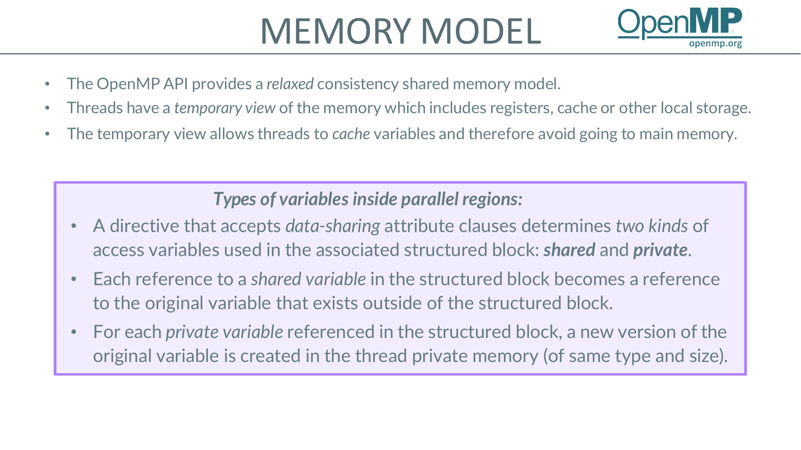
这页给出 OpenMP 内存模型的精确规则。两个核心概念：relaxed consistency（宽松一致性） 和 shared / private 变量的访问语义。
1. Relaxed Consistency（宽松一致性）。OpenMP 不保证"一个线程的写立即被其他线程看到"。每个线程有自己的临时视图（temporary view），包括寄存器、CPU cache、其他本地存储。线程的写可能先停在自己的临时视图里，过一会才同步到主存。
具体后果。线程 A 把 x 改成 5，但这个 5 可能还在 A 的 L1 cache 里没刷到主存。线程 B 此时去读 x，可能读到旧值（甚至读到 A 的中间状态）。
为什么要 relaxed？因为性能。如果每次写都立刻同步到主存（strict consistency），CPU 缓存全废了。relaxed 让每次访问基本走 cache（纳秒级），靠程序员显式同步来保证关键节点的可见性。
怎么强制视图同步到主存？用 flush 操作。OpenMP 在很多同步点会自动 flush：
barrier 隐式或显式critical 进入和退出atomic 操作parallel 区域开始和结束#pragma omp flush(x)（很少手写，由上面这些隐式触发）没有 flush 就没有可见性保证。这就是为啥写多线程代码必须用同步原语 —— 不只是为了排他访问，也是为了让其他线程看到你的更新。
2. Shared 变量的语义（紫框第 2 条）：parallel block 里对 shared 变量的每次引用都直接指向块外那个原始变量。所有线程共用同一个地址。所以读写都对原版生效，但看到的值取决于何时 flush（受 relaxed consistency 影响）。
3. Private 变量的语义（紫框第 3 条）：parallel block 里每个 private 变量每个线程都新建一个，类型和大小跟原版一样，但是独立的内存。每个线程访问的是自己的副本，互不干扰。
注意：private 变量初值是未定义的（除非用 firstprivate 子句要求继承外部初值）。退出 parallel region 后这些 private 副本被销毁，外部原变量的值保持不变（除非用 lastprivate 把最后迭代的值带出来）。
对应到 slide 26 Q6 的内容。Q6 用 OpenMP 的伪代码"捕获 &A" / "每线程新建 B" 解释了 shared / private；slide 40 是这套语义的规范定义。Q6 是 how，slide 40 是 what。
实战 tip：
private(x) 或在 parallel block 内声明-fsanitize=thread），它能追踪 happens-before 关系，比肉眼看靠谱得多#pragma omp parallel 语法和 clauses）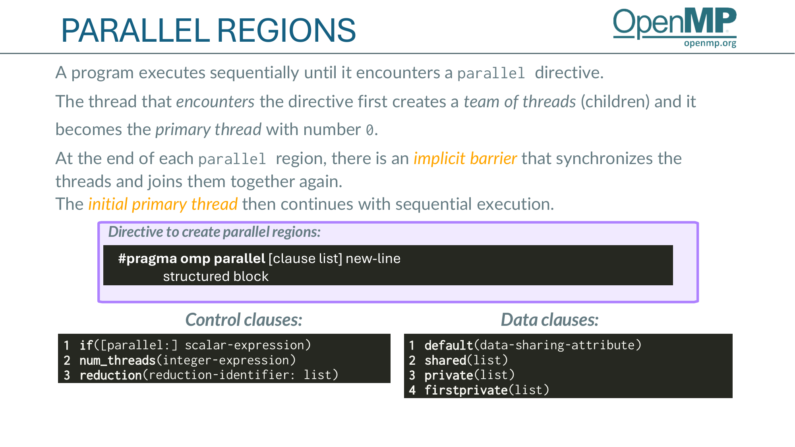
这页给出 OpenMP 创建并行区的正式定义。前面 slides 讲过 fork-join 模型的概念，这里把语法和 clauses 钉死。
执行流程（slide 顶部 4 行）：
parallel directive。关键词 "first creates"。OpenMP 实现通常会缓存线程池—— 第一次进 parallel region 真的 spawn 系统线程，之后再进同一个或别的 parallel region 时，复用已有 worker，不会真的创建/销毁线程。这是 OpenMP 比手写 pthread 性能好的关键之一（避免反复 pthread_create）。
语法骨架（紫框）：
#pragma omp parallel [clause list] new-line
structured block
"structured block" 是 OpenMP 反复出现的术语 —— 单入口单出口的代码块（不能从中间 goto/return/break 出去）。slide 35 已经讲过定义，这里照旧。
Clauses 分两类。这页只是先给清单，具体语义后面分页讲：
Control clauses（控制类）：
if(parallel: scalar-expr) — 表达式为假就退化成单线程执行（仍然进 parallel block，但只有 primary thread）。常用于"问题规模小就别开线程"。num_threads(integer-expr) — 指定这个 region 要开多少线程（slide 42 详细讲优先级）。reduction(reduction-identifier: list) — 归约操作。每个线程拿一个 private 副本累加，结束时合并到 shared 变量（如 sum、max、min）。后面专门有一页讲。Data clauses（数据作用域类）：
default(data-sharing-attribute) — 设置默认作用域。常用 default(none) 强制每个变量必须显式声明 shared/private，避免漏写出 bug。shared(list) — 列出的变量所有线程共用同一份内存。private(list) — 每个线程新建独立副本，初值未定义。firstprivate(list) — 跟 private 一样新建副本，但初值继承外部原变量的当前值。对比 slide 40。slide 40 给的是 shared/private 的语义（每次访问发生什么），这页给的是声明语法（怎么标注变量）。两者要配合看：写 private(x) 时，slide 40 告诉你"每个线程会得到一份独立的 x"。
实战习惯：刚开始写 OpenMP 代码强烈推荐 default(none)，编译器会把每个未声明作用域的变量当错误报出来。这能在编译期抓住"我以为是 private 其实默认成了 shared"这类典型 bug，比运行时 race 好查 100 倍。
if(scalar-expr) 子句的用法、scalar-expr 和 integer-expr 是什么if(scalar-expr) 子句：让 parallel 区有条件地变并行——表达式真就并行，假就串行（1 个线程跑）。
用途：并行不是免费的（线程激活、调度、cache 同步开销），任务太小并行反而更慢。if 让你按运行时数据规模自适应。
void process(double *a, int n) {
#pragma omp parallel for if(n > 1000)
for (int i = 0; i < n; ++i)
a[i] = work(a[i]);
}
// process(a, 50) → if 假 → 串行
// process(a, 100000) → if 真 → 并行
可选前缀 if(parallel: n > 1000) 用在 combined construct（如 parallel for）想让 if 只控制其中一部分时，日常省略。
scalar-expression（标量表达式）：能算出一个单个值的表达式（不是数组、向量、结构体），结果当真值用（0 = false，非 0 = true）。
if(n > 1000) // 比较 if(flag) // 变量 if(a > 0 && b < 100) // 逻辑组合 if(get_size()) // 函数返回值 if(threshold * 2 + offset)// 算术
integer-expression（整数表达式）：比 scalar 更严格——必须是整数类型（int、long、size_t），不能是浮点。用在 num_threads(integer-expr) 上，因为线程数必须是整数。
num_threads(8) num_threads(N / 2) num_threads(omp_get_num_procs()) num_threads(min(N, 16))
区别一句话：scalar-expr 接受任何标量做真值判断；integer-expr 只接受整数做计数。
reduction(+:sum) 语法详解，sum 跟 block 里的变量是同一个吗语法拆解：
reduction ( + : sum )
↑ ↑
│ └── 变量列表（要被规约的变量，逗号分隔）
└────── 二元运算符（怎么合并）
冒号是分隔符——左边"用什么运算符"，右边"对哪些变量"。
各部分能写什么：
+ - * & | ^ && || min max，或自定义 declare reduction。例子：
reduction(+:sum) // 单变量 reduction(+:sum, count) // 多变量同运算符 reduction(+:sum) reduction(*:product) reduction(max:peak) // 不同运算符 → 多个子句
sum 跟 block 里的变量是同一个吗？是。子句里的 sum 是对外面那个变量的引用，告诉 OpenMP "循环里出现的所有 sum 请按 reduction 处理"。
double sum = 0.0; // ← 外面声明
#pragma omp parallel for reduction(+:sum) // ← 子句引用同一个名字
for (int i = 0; i < N; ++i)
sum += a[i]; // ← block 里用的也是这个
两条硬规则：
sum、block 用 total → 编译错。reduction 概念回顾：解决"多线程都要更新同一变量"的 race 问题。runtime 做 3 件事：
+→0，*→1，min→类型最大值，max→类型最小值）。所以"子句里的 sum"和"block 里的 sum"名义上同一个，循环执行期间临时被换成各线程的私有副本，结束汇合回去。这是 reduction 的核心机制。
跟 critical / atomic 的区别：critical/atomic 每次累加都加锁，开销 O(N)；reduction 只在末尾合并一次，开销 O(nthreads)。N 通常远大于 nthreads，所以 reduction 快得多。详细机制（幺元表、合并实现、浮点结合性）见 slide 59-60。
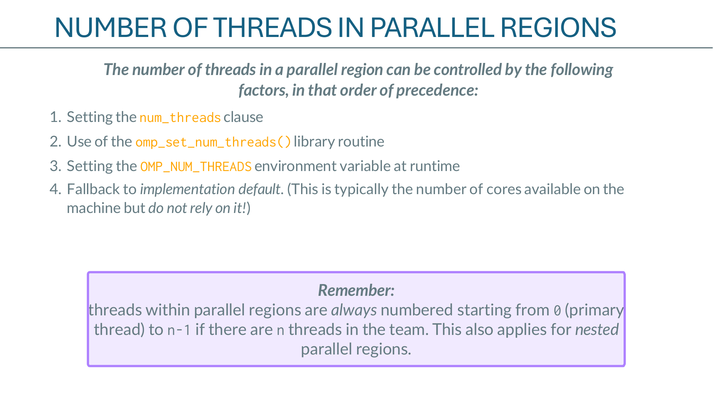
"我这个 parallel region 到底开几个线程？"OpenMP 用一个 4 级优先级链来回答这个问题。越靠前的优先级越高，前面的设了，后面的就被覆盖。
num_threads clause（最高优先级）。直接写在 pragma 上：#pragma omp parallel num_threads(8)。这一句决定这个具体 region 用多少线程，覆盖一切其他设定。omp_set_num_threads(n) 库函数。在程序里调用一次，影响后续所有没显式写 num_threads clause 的 parallel region。改完之后再开的 region 都用这个值。OMP_NUM_THREADS 环境变量。在 shell 里 export OMP_NUM_THREADS=8，程序启动时读取。常用于不改代码就调线程数。"do not rely on it!" 是重点。slide 用斜体强调这句话 —— 不要写依赖默认值的代码。原因：
所以 production 代码要么显式 num_threads，要么读 OMP_NUM_THREADS，让运维或调度脚本控制。
线程编号规则（紫框）。一个 parallel region 里的线程从 0 编号到 n-1。0 号永远是 primary thread（创建这个 team 的那个）。
嵌套（nested）的情况也一样。在 parallel region 里又遇到一个 #pragma omp parallel，每个外层线程再各自开一个内层 team —— 内层 team 的编号独立从 0 开始，不接着外层往下数。所以 omp_get_thread_num() 返回的是当前 team 内的编号，不是全局唯一 ID。
常见混淆。设了 OMP_NUM_THREADS=8 后，每次进 parallel region 都会开 8 个线程吗？答案：取决于 dynamic mode（slide 43 讲）。dynamic 模式下 8 是上限，运行时可能给你少一点；static 模式下严格就是 8。
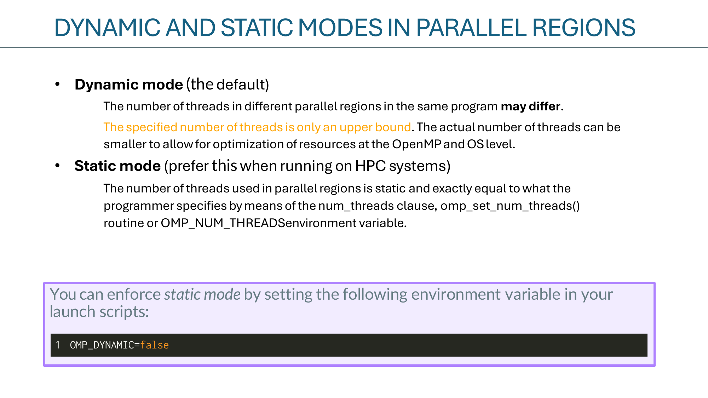
这页讲 OpenMP 的 dynamic mode 和 static mode —— 控制"程序里多个 parallel region 之间，实际开的线程数能不能变"。注意这跟后面要讲的循环调度策略里的 schedule(dynamic) 是完全不同的两件事，名字撞了，容易混。
Dynamic mode（默认）。同一程序里不同 parallel region 实际拿到的线程数可以不一样。你设的（num_threads 或环境变量）只是上限—— OpenMP 运行时可以为了优化资源（OS 调度负载、缓存、共享同一台机器的其他作业）给你少派几个。
举例：OMP_NUM_THREADS=16，但机器现在很忙，第一个 region 给你 16 个，第二个 region 只给 12 个。代码不报错，但性能不可预测。
Static mode（HPC 推荐）。每个 parallel region 实际开的线程数严格等于你通过 num_threads、omp_set_num_threads()、OMP_NUM_THREADS 之一指定的数。运行时不会自作主张减线程。
怎么强制 static（紫框）：
OMP_DYNAMIC=false
在启动脚本里 export 这个环境变量即可。也可以在代码里调 omp_set_dynamic(0)。
为什么 HPC 要 static？
什么时候 dynamic 反而合理。在共享服务器、桌面机、开发环境里，让运行时根据机器负载弹一下是合理的 —— 反正不追求 benchmark 级精度。所以默认才设成 dynamic。
易混 tip。考试或读代码时一定区分：
OMP_DYNAMIC=true/false —— 控制 region 之间线程数能不能变。schedule(dynamic, chunk) —— 控制同一个循环里迭代怎么分给线程（动态领取 vs 静态切片）。名字相近含义完全不同。
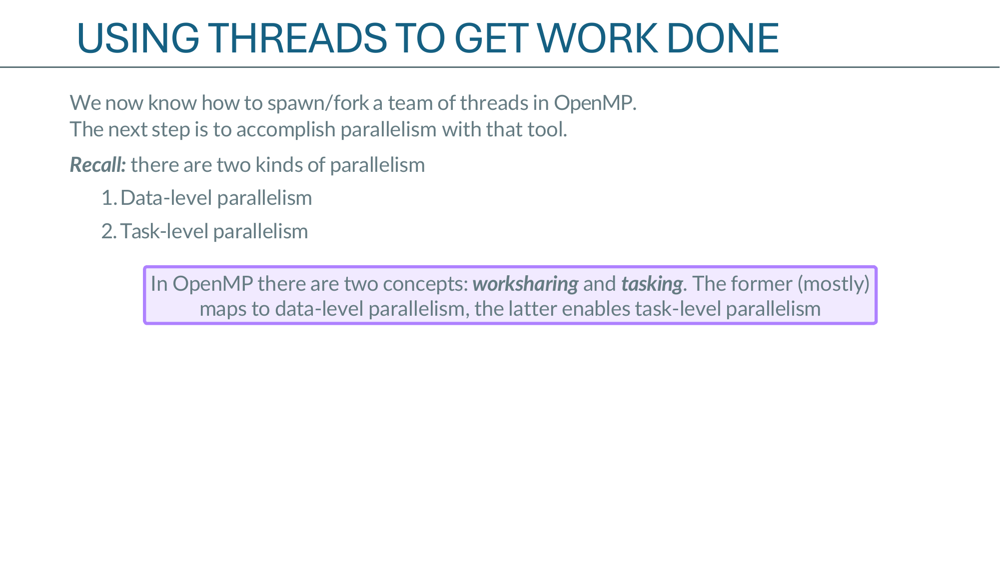
这页是个承上启下的过渡页。前面已经讲完"怎么用 OpenMP fork 出一队线程"（parallel region、线程数控制、dynamic/static），下一步是"有了线程，怎么把活分给它们干"。
回顾两种并行性（这是 lecture 早期已经建立的概念）：
OpenMP 怎么对应这两种（紫框）：
为什么说 worksharing 是"mostly"对应数据并行？因为 worksharing 三件套里：
for（loop construct）—— 切迭代分给线程，标准的数据并行。sections —— 把几段不同代码各分一段给一个线程，本质上是小规模任务并行，但因为活的数量在编译期就固定，归在 worksharing 里。所以 worksharing ≠ 100% 等于数据并行，只是"大体上"是。single —— 让某一段只跑一次，更像同步原语。真正灵活的任务并行（递归、动态展开）才是 tasking 的领域 —— 用 #pragma omp task 显式打包工作单元丢进运行时队列。
为什么这页要单独存在？因为接下来 5～10 页全在讲 worksharing（loop construct、canonical loop、sections、single、各种 clauses），讲完才会跳到 tasking。这页相当于一个"接下来要展开的两条主线"目录，让你不会读着读着就迷失在细节里。
记住这张分类：worksharing 三件套 + tasking 一件套 = OpenMP 把活分给线程的全部 4 种构造。后面所有的 pragma 都能放进这个分类里。
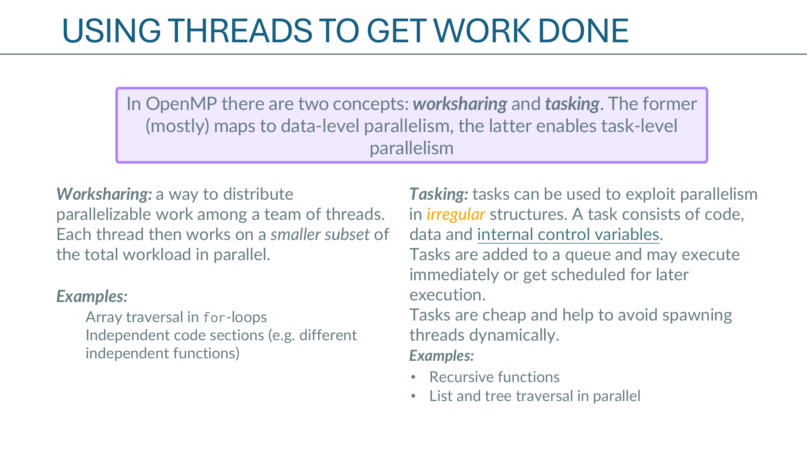
OpenMP 把"用多个线程把活干完"这件事分成两条路：worksharing 和 tasking。它们大致对应 slide 44 提到的两种并行性 —— worksharing → data-level parallelism，tasking → task-level parallelism。
Worksharing：把"已经知道总量"的活均分给一队线程。典型场景就是循环：for (i=0; i<N; ++i) A[i]=...，每个线程领走 N/nthreads 个迭代独立做。每个线程做的是同一段代码，只是数据子集不同。这就是 SPMD（single program multiple data）的味道。
例子：数组遍历（最常见）；或几段彼此独立的代码块（OpenMP 用 sections 表达，每个 thread 拿一段不同的 section 跑）。
Tasking：把"长得不规则"的活打包成一个个 task 丢到队列里。一个 task = code + data + 内部控制变量，被打包好放进运行时的任务队列；线程池里空闲的线程从队列里取任务执行，可以立刻执行也可以稍后被调度。
关键点是 task 很便宜（轻量级数据结构，不是新建一个 OS 线程），所以可以在递归里疯狂 spawn 而不至于爆掉 —— OpenMP 运行时复用已有的 worker thread 池来执行这些 task。
什么叫"不规则"？就是事先不知道有多少活，活的形状还会动态展开。典型代表：
为什么不能用 worksharing 做这些？因为 worksharing 在进入循环前就要切分迭代区间 —— 如果连"迭代次数"都不存在（比如递归到一半才决定是否继续），就没法事先切分。Tasking 的本质是把"现在生成一个新工作单元"这个操作变成 O(1) 的便宜动作，让你按需动态发活。
一句话区分：worksharing 适合"规整的数据并行"，tasking 适合"不规则的、跑起来才知道形状的并行"。后面几页会先深入讲 worksharing 的三个 construct（loop / sections / single），tasking 后面再讲。
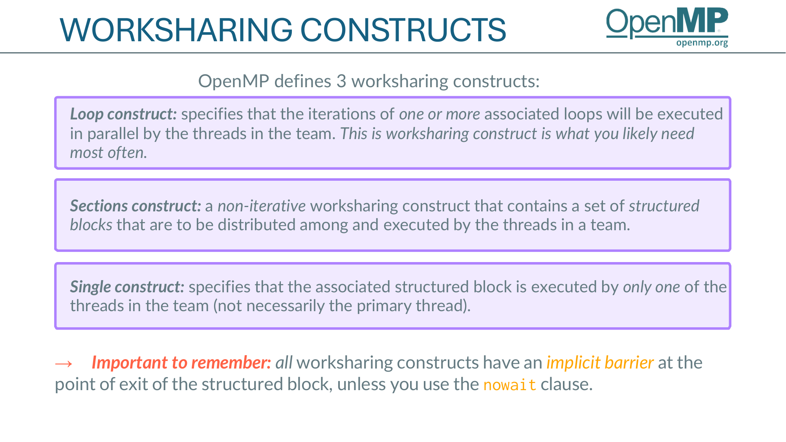
OpenMP 一共定义了 3 个 worksharing construct，全都用来"在线程队里分活"。它们的区别是分活的方式不同。
1. Loop construct（#pragma omp for）：把一个或多个紧跟其后的循环的迭代切成块，分给线程并行执行。这是日常最常用的一个 —— 90% 的 OpenMP 代码都是 parallel for。
2. Sections construct（#pragma omp sections）：非迭代的 worksharing。里面写若干个 #pragma omp section { ... } 结构块，运行时把每个 section 整体分给一个线程跑。适合"我有 3 段独立的代码，希望它们并行执行"这种场景 —— 每段可以是完全不同的逻辑（不像 loop 大家跑同一段代码不同迭代）。
3. Single construct（#pragma omp single）：在 parallel region 里，标记的这块代码只让一个线程执行（不一定是 primary thread，谁先到谁跑）。常用于在并行区里做"只该做一次"的事，比如打印一行日志、读一次文件、初始化共享变量。其它没抢到的线程在 single 块出口等（除非 nowait）。
共同的关键规则：implicit barrier。所有 worksharing construct 在结构块出口都有一个隐式 barrier —— 全部线程必须到达此点才能继续。这是默认的同步保证：循环跑完之后再做下一步是安全的，因为大家都干完了自己的份。
怎么去掉这个 barrier？加 nowait 子句：#pragma omp for nowait。意思是"我先干完的不等其他人，直接往下走"。用它要小心 —— 如果下一段代码依赖循环结果，去掉 barrier 会触发 race。典型用法：紧接着另一个独立 worksharing region 时，用 nowait 让两段重叠执行。
易混点：worksharing construct 必须出现在 parallel 区域里才有意义 —— 它本身不创建线程，只是把活分给已经存在的线程队。所以你常看到合写形式 #pragma omp parallel for，等价于"开 parallel 区 + 立刻进入 for 分活"。
single 算 worksharing construct？只有一个线程执行，"shared" 在哪？困惑来自 "worksharing" 这个词的字面意思——听起来像"把活分给多人干"，但 single 只让 1 个线程干，怎么也算？
核心答案：OpenMP 标准里 "worksharing" 不是按"分给几个人"定义的，而是按"这段代码总共执行几次"定义的。
parallel 区里代码的两大类：
| 类别 | 行为 | 例子 |
|---|---|---|
| Replicated（复制执行） | 每个线程都跑一遍，总共跑 N 次 | bare 代码、parallel 块体里的普通语句 |
| Worksharing（分担执行） | 总共只跑一次（或 M 次迭代），分给 team 的一部分线程做 | for / sections / single |
三个 worksharing construct 的共同性质：block 的执行次数和 team 大小解耦。
for：循环体总共跑 M 次（M 是迭代数），分给 N 个线程平均承担 → 每个迭代只跑 1 次。sections：K 个 section 总共跑 K 次，分给 N 个线程 → 每个 section 只跑 1 次。single：1 个 block 总共跑 1 次，1 个线程承担 → block 只跑 1 次。对比演示（4 线程）：
#pragma omp parallel num_threads(4)
{
foo(); // replicated: foo 被调用 4 次
#pragma omp for
for (int i = 0; i < 100; ++i)
bar(i); // worksharing: bar 总共 100 次（不是 400）
#pragma omp single
baz(); // worksharing: baz 调用 1 次（不是 4）
}
如果 single 算 replicated，baz() 会被调 4 次——但实际只调 1 次。所以从"代码运行了几遍"的角度，single 和 for / sections 是同一类。
回到 fib 例子的疑问：fib 里的 single 和 task 是两个不同的构造，各管各的事：
single 是 worksharing——保证 fib(20) 这个调用整体只发生 1 次（不是 4 次）。task 是 tasking construct（OpenMP 单独的一类，不属于 worksharing）——把工作扔进队列让别人抢。"其他线程从队列抢 task 跑"这件事不是因为 single 是 worksharing，而是因为：(1) 其他线程跳过 single 块到了末尾的 implicit barrier（所有 worksharing 末尾都有 barrier）；(2) barrier 是 task scheduling point，runtime 拉它们去队列干 task。
所以 single 的 worksharing 属性只贡献了"调用 1 次 + 末尾 barrier"，task 的并发是 task 系统自己的功劳。
命名的本质：single 入选 worksharing 的资格不是"分摊"，而是"非复制"。这是命名的历史遗留——标准用 "worksharing" 这个词，但实际定义更接近 "non-replicated"。
continue 在 parallel for 里合法吗？外层内层都能用？核心原则：continue 只跳到自己所在那层循环的下一次迭代，不会跳出循环——所以不破坏 OpenMP 要求的 single-exit。外层内层都合法。
例 1：continue 在外层 parallel for
#pragma omp parallel for
for (int i = 0; i < N; ++i) {
if (a[i] == 0) continue; // ✅ 跳过当前 i，去做 i+1
process(a[i]);
}
线程没退出循环、没退出 parallel 区，single-exit 完好。
例 2：continue 在内层（非 parallel）循环
#pragma omp parallel for
for (int i = 0; i < N; ++i) {
for (int j = 0; j < M; ++j) {
if (skip(i, j)) continue; // ✅ 只跳到内层 j+1
work(i, j);
}
}
continue 永远作用于最内层包着它的循环，所以这里跳的是 j，外层 parallel for 完全不受影响。
例 3：内外都有 continue
#pragma omp parallel for
for (int i = 0; i < N; ++i) {
if (mask_i[i]) continue; // ✅ 跳外层 i
for (int j = 0; j < M; ++j) {
if (mask_j[j]) continue; // ✅ 跳内层 j
accumulate(i, j);
}
}
对比：break 在 parallel for 那层就违法
#pragma omp parallel for
for (int i = 0; i < N; ++i) {
if (a[i] == TARGET) break; // ❌ 编译错或 UB
}
break 会直接跳出 parallel for，破坏 single-exit。但 break 在内层循环里合法（只跳出内层）：
#pragma omp parallel for
for (int i = 0; i < N; ++i) {
for (int j = 0; j < M; ++j) {
if (a[i][j] == 0) break; // ✅ 只跳出 j 循环
}
process(i);
}
合法性总表：
| 控制流 | parallel for 那层 | 内层非并行循环 |
|---|---|---|
continue | ✅ 合法 | ✅ 合法 |
break | ❌ 违法 | ✅ 合法 |
goto（跳出循环外） | ❌ 违法 | ❌ 违法 |
return | ❌ 违法 | ❌ 违法 |
throw（C++） | ❌ 违法 | ❌ 违法 |
记忆口诀：continue 不会"出"循环，永远合法；break/return/goto/throw 会"出"循环，只要会跳出 parallel for 那一层就违法。
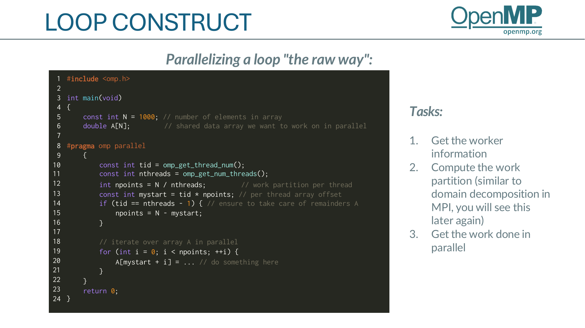
这页演示不用 worksharing construct、只用 #pragma omp parallel 时，要怎么手动把循环分给线程。目的是让你看到 OpenMP 帮我们省了多少事 —— 下一页就给出"OpenMP way"的对比版本。
思路。#pragma omp parallel 让 每个线程都执行整段代码（SPMD 模式）。如果 block 里写一个 for (i=0; i<N; ++i) A[i]=...，那 每个线程都会跑完整 N 个迭代，结果是同一份活做了 nthreads 次（既浪费又可能 race）。所以需要程序员自己根据 thread id 把区间切开。
三个步骤（slide 右栏列出）：
tid = omp_get_thread_num() 拿自己的编号（0..nthreads-1），nthreads = omp_get_num_threads() 拿队伍大小。npoints = N / nthreads 个迭代，起点 mystart = tid * npoints。注意整除可能除不尽，所以最后一个线程要把余数吃掉 —— 代码里 if (tid == nthreads - 1) npoints += mystart;（这行其实是处理余数的逻辑：让最后一个线程的工作量延伸到 N）。for (i = 0; i < npoints; ++i) A[mystart + i] = ...。为什么这写法能避免 race？因为不同 tid 算出来的 mystart 区间互不重叠 —— 每个线程只写 A[] 里属于自己的那一段，所以即使 A 是 shared，也不会冲突。
这种方式的痛点：
这就是为啥需要 #pragma omp for：把上面这堆"算 mystart / npoints / 处理余数"的样板交给编译器和运行时去做。slide 48 就给出对应的简洁版本，slide 49 揭示一个常见错误。
提到的伏笔："similar to domain decomposition in MPI, you will see this later again" —— 后面讲 MPI 时会发现这种"按 rank 切区间"的逻辑几乎一模一样，只是名字从 thread id 变成了 process rank。这是 SPMD 模型的通用套路。
omp_get_thread_num() / omp_get_num_threads() 含义，以及 {} 块"被复制 N 次"怎么理解三件事确认：
omp_get_thread_num() → 当前线程 ID（0 到 nthreads-1）每个线程值不同。omp_get_num_threads() → team 总人数所有线程读到都一样（这里都是 4）。{} block 每个线程都会跑一遍。"复制 4 次" 这个比喻要更精确一点：不是真的把代码复制 4 份，而是同一段代码被 4 个线程并发执行，每个线程各自有一份私有栈帧。所以 tid / nthreads / npoints / mystart 这些局部变量是每个线程一份，互不干扰。
同一份代码，4 个线程并发执行： Thread 0 栈帧: Thread 1 栈帧: tid = 0 tid = 1 nthreads = 4 nthreads = 4 npoints = 250 npoints = 250 mystart = 0 mystart = 250 → A[0..249] → A[250..499] Thread 2 栈帧: Thread 3 栈帧: tid = 2 tid = 3 nthreads = 4 nthreads = 4 npoints = 250 npoints = 250 mystart = 500 mystart = 750 → A[500..749] → A[750..999]
4 个线程的 nthreads 值都是 4，但 tid 各不相同——这正是"自动分工"的关键：每个线程根据自己的 tid 算"我处理 A 的哪一段"。
余数处理那一行的目的：
const int npoints = N / nthreads;
const int mystart = tid * npoints;
if (tid == nthreads - 1)
npoints += N - nthreads * npoints; // 最后一个线程吞掉余数
N=1003, nthreads=4 时：1003/4=250，前 3 个线程各 250 = 750，剩 3 个 element 让 tid=3 多吞，得 253 个。这就是 "ensure to take care of remainders" 那行的用意——手动处理 N 不能被 nthreads 整除时的余数。
#pragma omp for）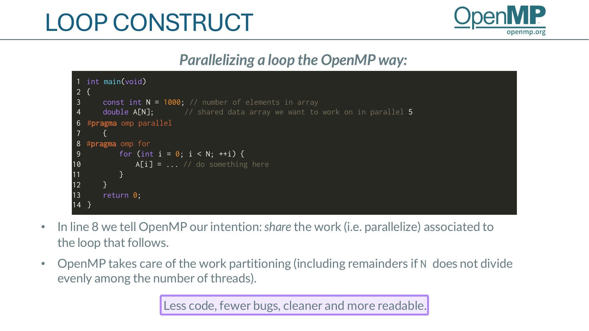
跟 slide 47 的"原始写法"对比：同样的循环，OpenMP 版本只多了一行 #pragma omp for，所有手动算 tid / mystart / 余数的代码全没了。
关键的两行：
#pragma omp parallel（line 6）→ 开 parallel 区，spawn 一队线程。#pragma omp for（line 8）→ 告诉运行时："紧跟着的这个 for 循环，把它的迭代分给当前线程队"。没有 #pragma omp for 的话，每个线程会把整个循环跑一遍（slide 49 演示这个 bug）。有了它，每个线程只跑自己分到的那一片迭代。
OpenMP 帮你做的事：
nthreads 切分迭代区间。N 不能被 nthreads 整除时的余数（不会丢迭代也不会重复）。nowait）。schedule(...) 子句换调度策略，不用自己重写循环。合写形式。日常更常见的写法是把两个 pragma 合并成 #pragma omp parallel for，省一层大括号。两种写法的语义在大多数情况下等价，区别只是合写时 parallel region 严格只包这一个循环；分写时 parallel region 可以包更多代码（比如循环外还有别的并行段）。
slide 底部的紫框："Less code, fewer bugs, cleaner and more readable." 这就是 OpenMP 设计哲学的核心 —— 让程序员关注哪些工作可以并行，而不是怎么手工切分和同步。pthread 让你写一切，OpenMP 只让你写"意图"。
常见疑问：A 数组是 shared 还是 private？默认 shared（因为它在 parallel 区外声明，按 OpenMP 默认作用域规则继承外部为 shared）。这没问题 —— 不同线程写 A 的不同 index，互不重叠。但循环变量 i 在 #pragma omp for 下会被自动设为 private（每个线程有自己的 i 副本），这是规范明文规定的，不需要你手写 private(i)。
#pragma omp for）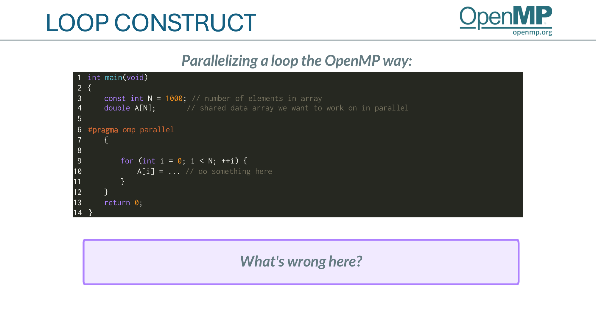
这页是个故意挖坑的对比页。代码看起来跟 slide 48 几乎一样，但少了一行 #pragma omp for（slide 48 line 8 那一行）—— 只剩下 #pragma omp parallel，里面直接写了一个普通 for 循环。
哪里不对？因为没有 for 这个 worksharing construct，每个线程都会把整个循环从头跑到尾。假设开了 4 个线程：
for (i=0; i<1000; ++i) A[i] = ...A[0] 被写了 4 次、A[1] 被写了 4 次……每个元素都被多个线程同时写。更糟的：这是一个 race condition。多个线程同时写同一个 A[i]，最终值取决于谁后写完，结果不确定。如果 A[i] = ... 右边是个简单常量还能蒙混过关（不管谁写都一样），但如果右边依赖 i 之外的状态、或者读改写复合运算，就会出真错。
为什么编译器不报错？因为这是合法的 OpenMP 代码。OpenMP 的语义就是 "#pragma omp parallel { ... } 让每个线程把 {...} 跑一遍"，里面写循环就字面意思每个线程跑一遍循环。要分活必须显式说"分活"（即 #pragma omp for），编译器不会替你猜意图。
诊断特征。如果你写 OpenMP 程序发现：
第一个怀疑就是"是不是漏了 #pragma omp for"。这是新手最常踩的坑之一，也是这页幻灯片要钉死在你脑子里的反面教材。
正确的修法：把 #pragma omp parallel 改成 #pragma omp parallel for（合写），或者在 parallel 块里那个 for 上面再加一行 #pragma omp for。两种都能让 OpenMP 真正分活。
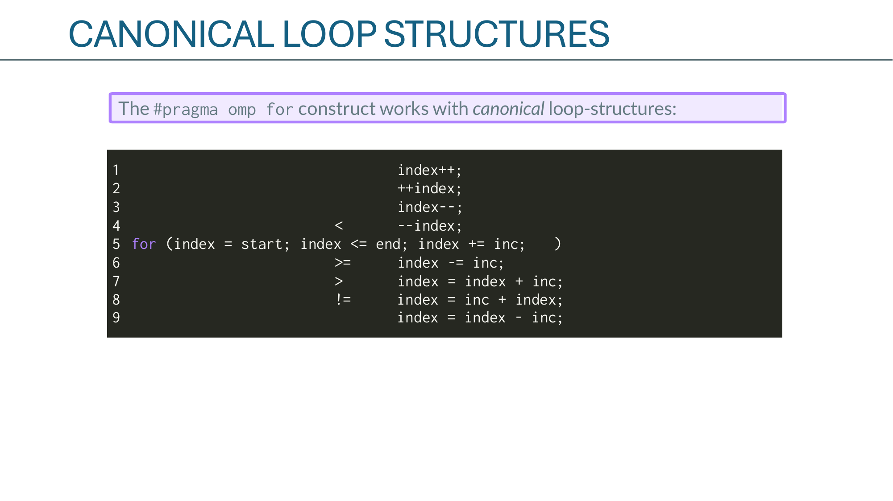
#pragma omp for 不是对任何 for 循环都生效 —— 编译器需要在进入循环前就能算出"总共有多少次迭代"，才能切分给线程。所以 OpenMP 规范要求循环必须长成canonical（标准/规范）形式。这页列的就是允许的形状。
canonical 形式的骨架：
for (index = start; index <cmp> end; index <step>)
三个可变部分：
<cmp>）必须是 <、<=、>=、>、!= 之一。<step>）必须是这几种：index++、++index、index--、--index、index += inc、index -= inc、index = index + inc、index = inc + index、index = index - inc。start、end、inc 必须是循环不变量（loop-invariant）—— 进入循环时确定，循环里不能改。为什么有这些限制？因为编译器要做静态迭代次数计算。给 start, end, inc 和比较运算符，编译器能立刻算出 trip count = (end - start) / inc（按比较方向调整一下），然后把这个数除以 nthreads 就能切区间。
如果循环是 while (some_condition) 或者步长依赖循环里改的变量，编译器就没法在进入循环前知道总共要跑多少次，自然就没法切分给线程 —— 这种情况要用 tasking（前面 slide 45 提到的另一条路）。
不能写的形式（举例）：
for (i = 0; some_func(i); ++i) —— 终止条件是个函数调用，不可静态分析。for (i = 0; i < n; i = i * 2) —— 步长是乘法，不在 canonical 列表里。break 出去 —— 实际迭代数不可预测，OpenMP 不允许 worksharing for 里有 break（但允许 continue）。实战建议。日常写 #pragma omp for 几乎都是 for (int i=0; i<N; ++i) 这种最朴素的形式，天然就是 canonical 的，不用想。只有当你遇到"编译器报错说不是 canonical loop"时才需要回头查这个表，把循环改写成规范形状（或者换 tasking 方案）。
另一个常被问到的点：循环索引必须是整型。OpenMP 的 canonical loop 要求 index 是整数类型（或 random-access 迭代器，C++ 里）。这意味着 for (double x = 0.0; x < 1.0; x += 0.1) 这种浮点循环不能直接 #pragma omp for —— 因为浮点累加误差会让"总迭代次数"无法精确计算。改写成整数索引循环再在内部转浮点即可。
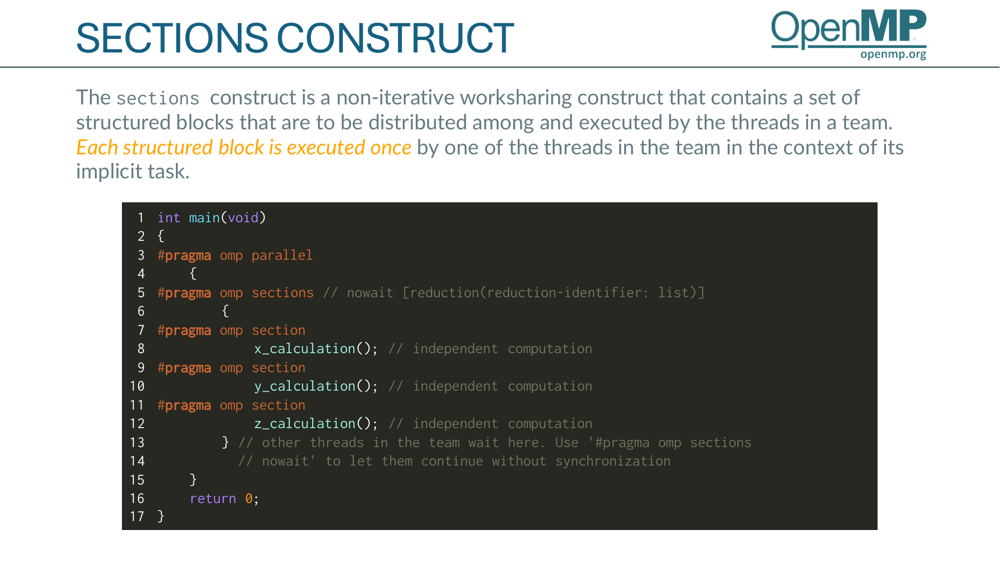
sections 是 worksharing 三件套里的非迭代那一个 —— 不像 for 切迭代区间，sections 把一组互相独立的代码块分给线程，每块由一个线程整体执行一次。
语法骨架（slide 上的代码）：
#pragma omp parallel
{
#pragma omp sections [nowait] [reduction(...)]
{
#pragma omp section
x_calculation();
#pragma omp section
y_calculation();
#pragma omp section
z_calculation();
}
}
外层 parallel 开队伍，里层 sections 是 worksharing 容器，每个 #pragma omp section 是一个待派发的独立代码块。
分发规则。OpenMP 运行时把这 3 个 section 派给当前 team 里的线程：每个 section 被恰好一个线程执行一次。如果 team 有 4 个线程，3 个干活、1 个在 sections 出口的 implicit barrier 处等。如果只有 2 个线程，运行时会让先干完的那个再去拿剩下的 section。
典型用途：逻辑上不一样的几段独立工作。例如同时算 x、y、z 三个独立物理量；或者一个线程读文件、一个线程做 CPU 计算、一个线程压缩输出。
和 for 的本质区别。for 里所有线程跑同一段代码，只是数据 index 不同（SPMD）。sections 里每个线程跑不同的代码。所以 sections 是 OpenMP 在 worksharing 层面表达任务并行的方式，但活的数量是编译期固定的（你写了几个 section 就是几个），动态生成的任务要用 tasking。
implicit barrier 和 nowait。和其他 worksharing 一样，sections 出口默认有 barrier —— 所有 section 跑完才一起往下走。加 nowait（slide 注释里明确提了）让先干完的线程不等其他人，直接出 sections 区域执行后续代码。
注意点：
#pragma omp section 必须出现在 sections 块的直接子层，不能嵌在 if/for 里。实际用得多吗？不多。日常并行代码 95% 是循环（用 for），剩下不规则的活倾向于用更灵活的 task。sections 主要在"我有 N 段固定代码想并行"这种简单场景里出现 —— 简洁但不灵活。
#pragma omp section 必须是 sections 直接子层 —— 反例本质原因：sections 用编译期静态切分——编译器看到 { #section A; #section B; #section C; } 就生成 "3 个 section 分给 N 线程" 的调度代码。所以 section 必须 (1) 词法可见、(2) 个数编译期可数、(3) 不能循环生成。
反例 1：section 嵌在 if 里
#pragma omp sections
{
if (use_x) {
#pragma omp section // ❌ 编译错
x_calculation();
}
#pragma omp section
y_calculation();
}
不行的原因：if 是运行时条件，编译期不知道这个 section 是否存在。正确写法是把条件挪进 section 内部：
#pragma omp section
{ if (use_x) x_calculation(); } // ✅
反例 2：section 嵌在 for 里
#pragma omp sections
{
for (int i = 0; i < 3; ++i) {
#pragma omp section // ❌ 编译错
work(i);
}
}
不行的原因：sections 不是循环结构，每个 section 是写死的不同代码块。"循环跑 N 次相同任务"是 for 的活。正确做法：用 #pragma omp parallel for，或手动展开成 3 个 section。
反例 3：section 嵌在多余的 {} 里
#pragma omp sections
{
{ // ← 多了一层 brace
#pragma omp section // ❌ 编译错
x_calculation();
}
}
不行的原因："直接子层"意味着 section 必须是 sections 的 {} 第一层语句。多套 brace 破坏了层级。修复：去掉多余花括号。
反例 4：section 写在被调用的函数里（orphaned）
void helper() {
#pragma omp section // ❌ 孤立的 section directive
x_calculation();
}
#pragma omp sections
{
helper(); // section 在这里看不见
#pragma omp section
y_calculation();
}
不行的原因：OpenMP 对 section 的识别是词法（lexical）的，必须在 sections 的源代码 {} 里直接看到 #pragma omp section，不会跨函数边界找。正确做法：
#pragma omp sections
{
#pragma omp section
helper(); // ✅ 整个 helper 调用作为一个 section
#pragma omp section
y_calculation();
}
总规则：#pragma omp section 必须是 sections 块 {} 的直接子语句，写死、明摆着、可数。
需要运行时动态决定任务数？用 #pragma omp task。task 是动态的，sections 是静态的，针对不同场景。
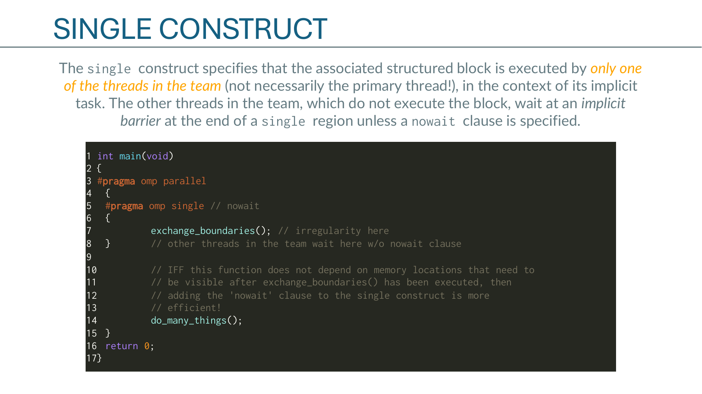
single 是 worksharing 三件套里最特殊的一个 —— 它"分活"的方式是只让一个线程干，其他线程在出口等。听起来不像 worksharing，但本质上仍然是"在 team 里挑一个去做这块工作"。
语义（slide 顶部）：在 parallel 区里，#pragma omp single { ... } 这块代码只被 team 里的一个线程执行，不一定是 primary thread（谁先到谁跑，运行时决定）。其他没抢到的线程在 single 块出口的 implicit barrier 等。
为什么不是 primary？因为没有规定。OpenMP 故意不指定，让运行时挑一个最方便的（通常是先到达的）。如果你必须是 primary thread 跑，用 #pragma omp master（master 不带 implicit barrier，老语法；新版改名 masked）。
典型用途（slide 代码示例 exchange_boundaries()）：
为什么不直接退出 parallel 再做？因为退出 + 重进 parallel region 有开销（即便有线程池缓存）—— 隐式 barrier 同步、再次 fork 的成本。在 parallel region 里用 single 做"插播单线程逻辑"更便宜，线程池保持温热。
nowait 何时合理（slide 代码注释里详细给了）：默认 single 出口有 implicit barrier —— 其他线程必须等做 single 那个线程完成。但如果后续 do_many_things() 不依赖 exchange_boundaries() 改的内存，去掉 barrier 让其他线程提前往下跑就更高效。
这就是 slide 注释那段话的含义："IFF this function does not depend on memory locations that need to be visible after exchange_boundaries() has been executed, then adding the 'nowait' clause to the single construct is more efficient!"
易混 tip：single vs critical。critical 也是"一次只有一个线程进"，但区别是：
single：所有线程到这里，只有一个跑，其他在出口等。整个执行只发生一次。critical：所有线程到这里都要排队进，一个一个跑。整个执行发生 nthreads 次，只是不会并发。用错会导致逻辑完全不一样（比如 critical 会重复执行 N 次"只该一次"的初始化）。
"critical" 在中文里常被译成"严重的"，但那只是引申义。在 "critical section" 里，critical = 关键的、决定性的、临界的——强调"这一段代码非常关键，进错了就会出大问题"。
词根来自希腊语 kritikos（"能判断、能决断"），跟 crisis（关键时刻）同源。"严重"是引申义（病到了关键转折点），核心义是"位于关键点 / 转折点"。
同语义家族的常见 critical 短语：
critical mass——临界质量（刚好够引发链式反应的点）critical point——临界点（相变发生的温度/压力）critical path——关键路径（决定项目总工期的那串任务）critical section——关键区（决定多线程对错的那段代码）每一个 critical 都不是"严重"，而是"决定成败的关键点/段"。
词义本身不包含"排队"。critical 这个形容词只描述"这段代码很关键、很敏感、不能并发进"。"排队进入"是保护这个关键段所采用的机制（mutex / lock 排队），不是 critical 这个词的字面义。
critical（形容词） → 描述区域很关键、不能并发进
↓
为了保护它，需要某种机制
↓
mutex / lock / 排队（机制） → 实际让线程一个一个进
中文译名"临界区"和"关键区"都贴近原义；"严重区"离原义远，因为 critical 在中文里"严重"这个义项太抢眼。
schedule 子句怎么决定迭代分发）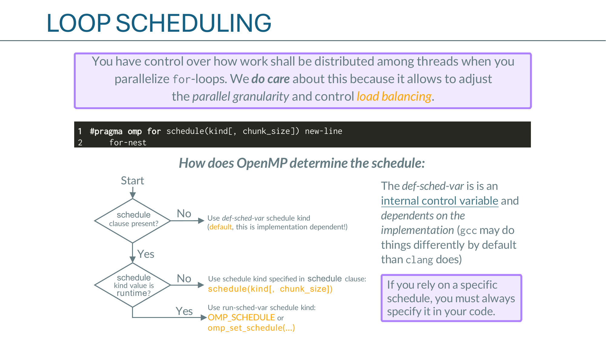
这页讲 #pragma omp for 里那个可选的 schedule(...) 子句 —— 控制循环迭代怎么分给线程。换调度策略可以调并行粒度和负载均衡。
语法：
#pragma omp for schedule(kind[, chunk_size]) new-line
for-nest
kind 是 static / dynamic / guided / runtime / auto 之一（slide 54 列详细），chunk_size 是可选块大小。
OpenMP 怎么决定实际用什么 schedule（流程图）。运行时按这个顺序判断：
schedule clause？没写 → 用 def-sched-var（默认调度，由实现决定，比如 GCC 默认 static、其他编译器可能不同）。runtime？不是 → 直接用你指定的 schedule(kind, chunk)。runtime → 用 run-sched-var，它由环境变量 OMP_SCHEDULE 或库函数 omp_set_schedule() 决定。def-sched-var / run-sched-var 是什么？OpenMP 把这些"控制运行时行为的选项"叫 internal control variables (ICV)。它们藏在运行时里，可以通过环境变量或库函数读写，但不是普通用户变量。OMP_NUM_THREADS、OMP_DYNAMIC 也是 ICV。
右侧紫框两条警告：
什么时候用 schedule(runtime)？当你想让运维或脚本调调度策略，不想改代码重编。例如同一份 binary 在不同输入数据下跑，每次启动设 OMP_SCHEDULE=dynamic,100 或 static,1000 调优。代码里只写 schedule(runtime)。
"adjust the parallel granularity and control load balancing" 是这个 clause 的两大作用：
下两页（54、55）会展开 5 种调度 kind 的具体含义和可视化对比。
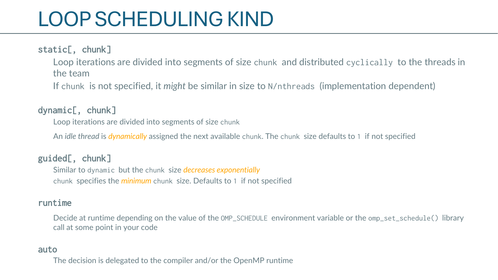
OpenMP 一共定义 5 种 schedule kind。前 3 种是真正的分发策略，后 2 种是把决定权延后。
1. static[, chunk]。把循环迭代切成大小为 chunk 的段，循环式（cyclic）分给线程 —— 即 t0 拿第 1 段、t1 拿第 2 段、…、t(n-1) 拿第 n 段、然后 t0 又拿第 n+1 段，依次轮转。
不指定 chunk 时，每个线程拿大约 N/nthreads 个连续迭代（实际值因实现而异）—— 即 slide 47 那种"每人一大块连续区间"的分法。
开销：分发编译期就能算出来（线程 i 拿哪些迭代是确定的），零运行时调度开销。代价：迭代工作量不均时容易负载失衡。
2. dynamic[, chunk]。把迭代切成 chunk 大小的段放进队列，线程一空闲就动态领取下一个可用 chunk。chunk 不指定时默认是 1。
"动态"意味着 t0 可能干完 5 个 chunk，t1 只干了 2 个 —— 谁快谁多干。负载自动均衡，但每次领 chunk 都有原子操作开销（队列指针递增），chunk 太小开销会吃掉收益。
典型 chunk 选择：让单个 chunk 的执行时间至少远大于一次原子操作的开销（微秒级）。
3. guided[, chunk]。类似 dynamic，但 chunk 大小指数衰减—— 一开始领大块（比如剩余迭代/线程数），逐渐变小，最小不低于指定的 chunk（默认 1）。
设计直觉：开始时分大块减少调度次数，剩下少量迭代时再分细块兜底负载均衡。是 static 和 dynamic 的折中。
4. runtime。把决定权交给环境变量 OMP_SCHEDULE 或 omp_set_schedule()。代码里写一次 schedule(runtime)，部署/调优时不重编。slide 53 已经讲过流程。
5. auto。完全交给编译器或运行时自行决定。OpenMP 规范不规定具体策略 —— 让实现按自己的启发式选。结果不可预测，几乎不用。
怎么选？速记：
static，零开销最快。dynamic 或 guided，让快线程多干。runtime + OMP_SCHEDULE。auto：除非测过有提升，否则别用。chunk 选择经验。dynamic 的 chunk 默认 1 几乎总是太小（每个迭代领一次锁），实际写代码常给 dynamic, 100 或更大。具体值要看每个迭代多耗时 —— 单个迭代是几纳秒就给大 chunk，是毫秒就给 chunk=1 也无所谓。
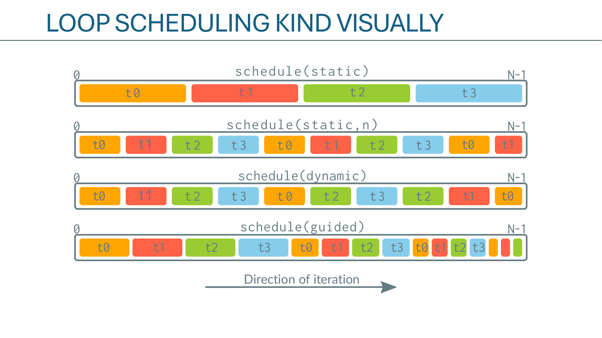
这页用 4 条横向时间线把上一页的策略画出来。每条线代表一次 N 个迭代的循环，被 4 个线程（t0/t1/t2/t3）分发。颜色区分线程，色块的大小表示该线程拿到的连续迭代区间，位置表示在原始迭代序列中的位置。
1. schedule(static)（不指定 chunk）。整个区间被切成 4 大块，每个线程拿一段连续区间（约 N/4）。这是最常见也最便宜的默认形态 —— 切分在编译期/进入循环时就算好，运行时零调度开销。适合每个迭代工作量基本相同的场景。
2. schedule(static, n)。整个区间被切成大小为 n 的小段，按 t0→t1→t2→t3→t0→t1→… 的顺序循环（cyclic）派发。图里就是 4 种颜色按顺序反复出现。
为什么要这么分？当前后迭代工作量有规律性差异（比如三角矩阵循环 for(i=0;i<N;i++) for(j=i;j<N;j++)，越往后内层迭代越短），cyclic 切分能让每个线程都均匀分到"前段长后段短"的混合，比 static 那种"前 1/4 给 t0、后 1/4 给 t3"更均衡。仍然零运行时调度开销（哪个 chunk 归谁是确定的）。
3. schedule(dynamic)（chunk 默认 1，图里画的是 chunk 较大的情形）。色块大小相同（每次领固定 chunk），但哪个线程领到哪一段是不确定的—— 图里看到颜色顺序乱了：可能是 t0 t1 t2 t3 t0 t2 t3 t2 t1 t0。某些线程（t2）拿到的 chunk 比别人多，某些（t3）少。
这恰好是 dynamic 想达到的效果—— 谁先完成手上的 chunk 就回去队列领下一块。如果 t2 处理的是简单迭代很快做完，它就能多领；t3 撞上复杂迭代慢，就少领。负载自动平衡，代价是每次领 chunk 都要走原子操作。
4. schedule(guided)。最显眼的视觉特征是chunk 越往右越小。第一个 chunk 最大，依次指数衰减，最后剩很小的几块。
设计哲学：开始时大块快速消化大部分工作（减少领取次数），临近结束时小块兜底（防止"最后一个大 chunk 把某个线程拖很久"的尾巴问题）。是 static 的低开销和 dynamic 的动态均衡的折中。
对比记忆口诀：
static：连续大块，编译期切好，最便宜。static, n：小块循环派，编译期切好仍然便宜，应付规律性不均。dynamic：等大小动态领，对付不规律负载。guided：从大到小动态领，前期快后期细。注意图里没画 runtime 和 auto—— 因为这两个本身不定义具体分发模式，最终落到上面 4 种之一。
"Direction of iteration" 箭头的意义。提醒你横轴是迭代序号 0 → N-1，不是时间轴。色块的位置对应该 chunk 在迭代序列里的位置，不是"这个线程什么时候开始执行"。所以 dynamic 图里看到的乱序，是领取顺序映射到迭代位置上的结果。
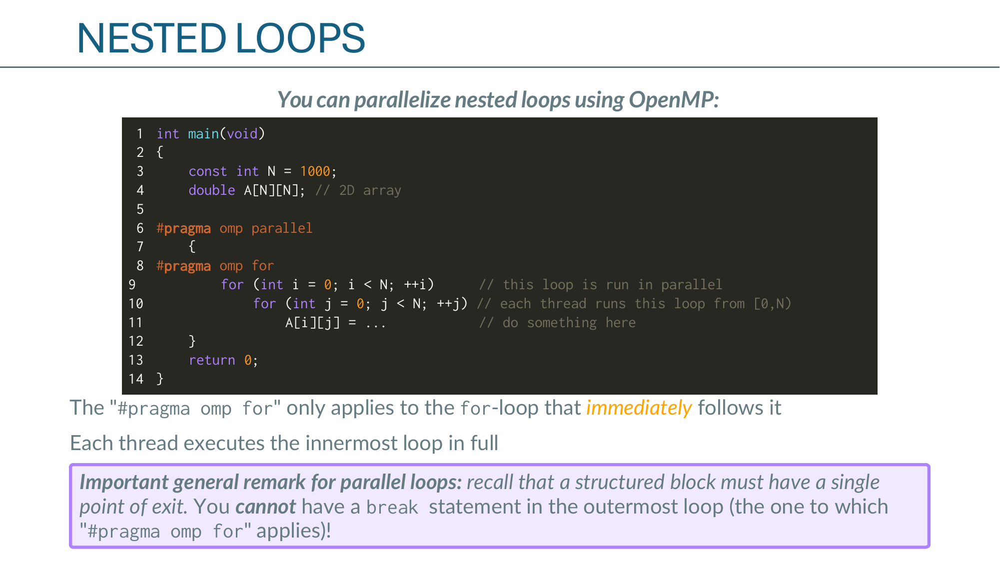
这页讲一个非常容易踩的坑：#pragma omp for 只对它紧跟其后的那一个循环生效，不会自动展开嵌套。
slide 代码示例（行号 6-13）：
#pragma omp parallel
{
#pragma omp for
for (int i = 0; i < N; ++i) { // 这层并行
for (int j = 0; j < N; ++j) { // 这层每个 thread 自己跑完整 N
A[i][j] = ...
}
}
}
实际行为。N×N 个迭代被外层循环切成 N 段（按 i），每段分给一个线程。某个线程拿到 i=k 时，它自己顺序跑完 j=0..N-1 的全部内层迭代。所以并行度是外层 N，不是 N²。
什么时候这是问题？当外层循环次数 < 线程数时。比如 N=5、开了 8 个线程：只有 5 个线程拿到活，剩下 3 个空转。slide 58 会专门展开这种情形并给解决方案。
什么时候这没问题？当外层 N >> 线程数，且 N×内层工作量 足够大时。例如 N=10000、4 线程，外层切成 4 大段每段 2500×N 的活，负载均衡也没问题，并行效率很高。
关键术语 "structured block 必须 single point of exit"（紫框）。OpenMP 反复强调的规则：被 pragma 管辖的代码块不能从中间 break/goto/return 出去。对外层循环（被 #pragma omp for 直接管的那个）尤其严格—— 不能写 break。否则编译报错。
但内层循环可以 break。因为内层循环不是被 pragma 直接管的 worksharing target，是普通顺序循环 —— 在某个线程内部 break 出内层只影响它自己拿到的那个 i 的 j 遍历，不破坏其他线程的并行结构。
continue 一直允许。无论外层内层，continue 跳到下一次迭代是 OK 的 —— 不破坏 single-exit 语义。
速记：#pragma omp for 默认"只展开一层"。想真正利用 N² 的并行度，要么手动重构成单层循环，要么用 collapse(n)（slide 57 讲）。
collapse(n) 把嵌套展平）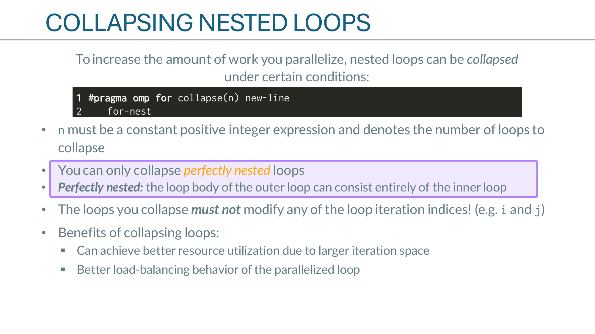
collapse(n) 子句解决 slide 56 的痛点 —— 让 OpenMP 把嵌套的 n 层循环看作一个扁平的迭代空间，再分给线程。语法：
#pragma omp for collapse(n) new-line
for-nest
例如 collapse(2) 套在两层 for(i)/for(j) 上时，逻辑等价于把所有 (i,j) 对展开成一个长度 N×M 的单层序列，然后用 schedule 切分给线程。并行度从 N 变成 N×M。
使用条件（slide 中部 4 条）：
for(i) 的 {} 里只允许出现内层 for(j)，不能有别的代码（不能在循环之间夹一行打印或赋值）。for(j=i; j<N; ++j)（j 起点用了 i）不能 collapse —— 因为展平时无法静态算出 (i,j) 的总数。为什么"perfectly nested"是硬要求？因为 collapse 实质上是编译器在生成代码时把 n 层循环融合成一个虚拟的单层循环，新的虚拟索引按 (i,j,k...) 字典序遍历整个迭代笛卡尔积。如果外层循环里有别的语句，那语句应该执行 N 次还是 N×M 次？语义混乱，所以 OpenMP 直接禁止。
好处：
坏处：
速记：外层循环次数 ≥ 线程数 → 不用 collapse；外层 N 很小但内层 M 很大 → collapse(2) 通常就够。
collapse(n) 的好/坏例子对照✅ 好例 1：完美嵌套，最常见
#pragma omp parallel for collapse(2)
for (int i = 0; i < N; ++i)
for (int j = 0; j < M; ++j)
A[i][j] = compute(i, j);
外层循环体只有内层循环这一件事——这是 perfectly nested。OpenMP 折叠成 N×M 的迭代空间分给线程。
✅ 好例 2：三层折叠
#pragma omp parallel for collapse(3)
for (int i = 0; i < N; ++i)
for (int j = 0; j < M; ++j)
for (int k = 0; k < K; ++k)
grid[i][j][k] = init(i, j, k);
n 是几就折叠最外面 n 层，要求这 n 层都层层完美嵌套。
✅ 好例 3：内层 body 可以是任意代码
#pragma omp parallel for collapse(2)
for (int i = 0; i < N; ++i)
for (int j = 0; j < M; ++j) {
double tmp = A[i][j] * 2;
if (tmp > THRESHOLD) tmp = THRESHOLD;
B[i][j] = tmp;
}
"完美嵌套"只约束外层和内层之间不能有东西，最内层 body 里写啥都行。
🚫 坏例 1：外层和内层之间有别的代码（最常见错）
#pragma omp parallel for collapse(2)
for (int i = 0; i < N; ++i) {
double row_init = setup(i); // ❌ 外层有非内层循环的代码
for (int j = 0; j < M; ++j)
A[i][j] = row_init * j;
}
修法：放弃 collapse 只并行外层（让 setup 仍能放外层）：
#pragma omp parallel for // ← 不 collapse
for (int i = 0; i < N; ++i) {
double row_init = setup(i);
for (int j = 0; j < M; ++j)
A[i][j] = row_init * j;
}
🚫 坏例 2：在循环里改循环变量
#pragma omp parallel for collapse(2)
for (int i = 0; i < N; ++i)
for (int j = 0; j < M; ++j) {
if (a[i][j] == 0) j = M; // ❌ 修改 j 试图早退
process(i, j);
}
OpenMP 把 i, j 折叠成线性迭代空间，需要靠 i, j 反推自己跑到哪了；自己改索引会让计算彻底乱套。即使没 collapse，OpenMP for 也禁止改循环变量。修法：用 if 跳过，不改索引。
🚫 坏例 3：n 不是常量
int level = read_config(); #pragma omp parallel for collapse(level) // ❌ level 不是编译期常量 for (...) ...
n 必须编译期能确定（字面量、const int、#define、constexpr），编译器要在编译期就知道折叠几层。
🚫 坏例 4：内层边界依赖外层（三角形迭代）
#pragma omp parallel for collapse(2)
for (int i = 0; i < N; ++i)
for (int j = i; j < N; ++j) // ❌ j 的下界是 i
process(i, j);
OpenMP 5.0 之前只允许矩形迭代空间（每层边界都是循环不变量）。这种"三角形"迭代传统 collapse 处理不了。修法：放弃 collapse 只并行外层，或升级到 OpenMP 5.0+（支持非矩形）。
判断流程：
能 collapse(n) 吗？逐条检查： 1. n 是编译期常量正整数？ 否 → 不行 2. 最外面 n 层是完美嵌套？ 否 → 不行 3. 循环边界都是循环不变量？ 否 → 旧标准不行 4. 不修改循环变量？ 否 → UB 5. 内层 body 里逻辑随便写？ ✅ → 通过
collapse 收益的具体体现（N=8, M=2, nthreads=8）：
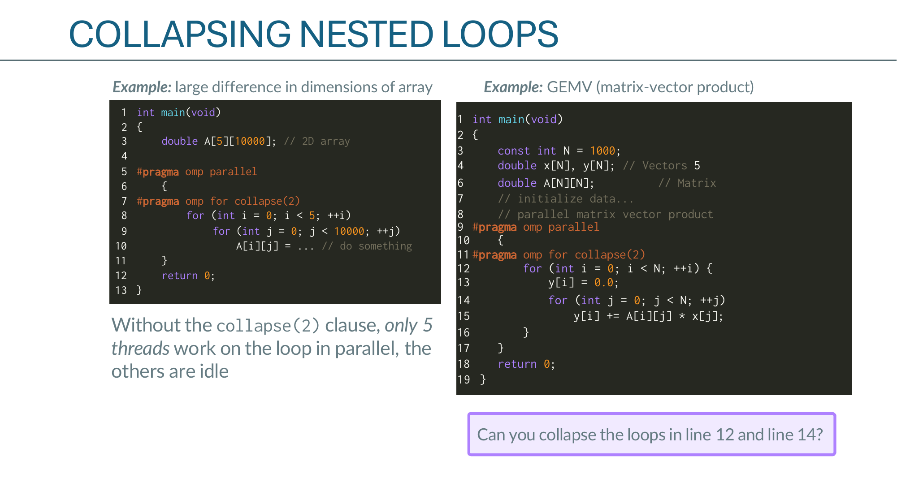
这页给 collapse 的两个实战例子，正好对应"该用 collapse"和"要不要用 collapse"两种典型场景。
左例：外层维度太小（N=5）
double A[5][10000];
#pragma omp for collapse(2)
for (int i = 0; i < 5; ++i)
for (int j = 0; j < 10000; ++j)
A[i][j] = ... // do something
外层只有 5 次迭代。如果不写 collapse，开 8 个线程时只有 5 个干活（每人拿一个 i），剩下 3 个在 implicit barrier 处空等。资源浪费严重。
加 collapse(2) 后，迭代空间变成 5×10000=50000，8 个线程每人分约 6250 个 (i,j)，全部 utilized。这是 collapse 最典型的救火场景 —— "外层维度小，内层维度大"。
slide 原话："Without the collapse(2) clause, only 5 threads work on the loop in parallel, the others are idle" —— 直接点破问题。
右例：GEMV（matrix-vector product，矩阵-向量乘）
const int N = 1000;
double x[N], y[N]; // vectors
double A[N][N]; // matrix
// initialize data...
#pragma omp parallel
{
#pragma omp for collapse(2)
for (int i = 0; i < N; ++i) // line 12
y[i] = 0.0;
for (int j = 0; j < N; ++j) // line 14
y[i] += A[i][j] * x[j];
}
底部紫框抛了一个反思题："Can you collapse the loops in line 12 and line 14?"
答案：不能。原因有两个：
y[i] = 0.0。这违反 slide 57 的硬规则 —— 外层 {} 里除了内层循环外不能有别的语句。y[i] += ...，这是经典 race condition（不是简单的索引不重叠了）。原本的"按 i 切"方案里，每个线程独占一段 i，写自己那段 y[i] 不冲突。怎么修？常见做法：
y[i] = 0.0 拆出去做单独的并行循环（先并行清零，再并行 GEMV），这样外层就 perfectly nested 了，但仍然有 race 问题。reduction(+:y[i]) 或者用 atomic 累加，但开销大。对比左右两例的核心教训：collapse 不是"嵌套循环就该加"的优化，而是"外层不够分时才用"的工具。当外层已经足够大（GEMV 里 N=1000 vs. 几十个线程），用 collapse 反而引入新问题（perfectly nested 限制 + 潜在 race），得不偿失。
Reduction（规约）是一个非常常见的并行模式：用一个可结合的二元运算符 ⊕，把 O(N) 个输入合并成 O(1) 个输出。
典型例子：
为什么需要专门的 reduction 子句？因为天真写法（多个线程都写同一个 sum 变量）必然 race。用 critical 或 atomic 包起来正确但慢得离谱—— 每次累加都要拿锁。reduction 的优雅做法是：每个线程用自己的私有副本累加，最后合并一次。
语法：
#pragma omp for reduction(reduction-identifier: list) [other clauses] new-line
for-nest
reduction-identifier：用哪个二元运算符。OpenMP 内置的有 + - * & | ^ && || min max。
list：要被规约的变量列表，逗号分隔。可以在同一 pragma 里写多个 reduction 子句（用不同运算符）。
同一变量可以出现多次吗？不能 —— 一个变量在多个 reduction子句里只能出现一次（否则语义不清）。
用户自定义 reduction。除了内置运算符，OpenMP 还支持 #pragma omp declare reduction(...) 让你定义自己的合并操作（比如对 struct 的合并、对 std::vector 的拼接）。日常用得少，但很灵活。
初值（slide 右下表）。OpenMP 给每个线程的私有副本按运算符自动初始化：
+, -, |, ^, || → 0*, && → 1& → ~0（全 1）min → 类型的最大值（这样任何输入都比它小）max → 类型的最小值（这样任何输入都比它大）为什么这么设？因为这些值是各自运算符的幺元（identity element）—— 跟任何 x 做运算结果都是 x。这样初始化保证空线程或第一个累加不引入偏差。例如 max 的幺元必须比一切都小，所以选类型最小值；+ 的幺元是 0；* 的幺元是 1。
关键性质：可结合（associative）。Reduction 假设 ⊕ 满足 (a⊕b)⊕c = a⊕(b⊕c)，这样合并顺序不影响结果。整数 + 严格满足；浮点 + 不严格满足（舍入误差），所以并行 reduce 浮点和串行 reduce 浮点的最低位可能差几个 ULP。需要严格可重现时要用别的方案。
版本 1：reduction（推荐）
double sum = 0.0;
#pragma omp parallel for reduction(+: sum)
for (int i = 0; i < N; ++i)
sum += a[i];
每线程私有累加，结束合并一次，锁/原子操作只 O(nthreads) 次。
版本 2：atomic（正确但慢）
double sum = 0.0;
#pragma omp parallel for
for (int i = 0; i < N; ++i) {
#pragma omp atomic
sum += a[i]; // 每次累加用硬件原子指令
}
#pragma omp atomic 让 sum += a[i] 变成原子操作（编译器生成 lock-prefixed CPU 指令，如 x86 lock xadd）。每次累加都付原子指令开销，O(N)。更糟的是 cache line ping-pong：N 个线程争同一个 sum 所在的 cache line，每次原子加都把这条 line 从别人的 L1 偷过来——可能比串行还慢。
版本 3：critical（正确但更慢）
double sum = 0.0;
#pragma omp parallel for
for (int i = 0; i < N; ++i) {
#pragma omp critical
sum += a[i]; // 每次累加都要拿一次互斥锁
}
critical 用软件互斥锁，比 atomic 重得多。每次累加要拿锁/加/放锁，锁本身的开销比一条原子指令贵 10~100 倍。
版本 4：手动模仿 reduction（reduction 的内部实现）
double sum = 0.0;
#pragma omp parallel
{
double local_sum = 0.0; // 每线程私有累加器
#pragma omp for nowait
for (int i = 0; i < N; ++i)
local_sum += a[i]; // 无锁，写自己的局部变量
#pragma omp atomic // 末尾合并一次
sum += local_sum;
}
性能跟 reduction(+:sum) 几乎一样：核心循环无锁，末尾每线程 1 次原子加，共 nthreads 次。
性能对比（N=1M, 8 线程）：
| 写法 | 锁/原子次数 | 相对耗时 |
|---|---|---|
reduction(+:sum) | ~8 | 1×（基线） |
| 手写 local_sum + 末尾 atomic | ~8 | ~1× |
循环里 atomic | 1,000,000 | 10×~100× 慢 |
循环里 critical | 1,000,000 | 100×~1000× 慢 |
差距是数量级，不是几个百分点。reduction 把锁开销从 O(N) 降到 O(nthreads)，N 越大优势越大。这就是 slide 59 强调 reduction "elegant" 的原因。
顺便：atomic vs critical 的简单区分：
atomic | critical | |
|---|---|---|
| 实现 | 硬件原子指令（一条 CPU 指令） | 软件互斥锁（OS/库实现） |
| 适用语句 | 只能 x op= expr、x++ 等简单更新 | 任意代码块 |
| 开销 | 低 | 高（贵 10~100 倍） |
临界区是"对标量做简单更新"时，永远优先 atomic；复杂代码块或 atomic 不支持的运算才用 critical。
这页用最经典的"并行求数组和"把上一页的概念落地。
double a[1000];
// initialize data... 5
double sum = 0.0; // 初始化重要！
#pragma omp parallel
{
#pragma omp for reduction(+: sum)
for (int i = 0; i < 1000; ++i)
sum += a[i];
}
return 0;
逐行讲解（slide 底部 line-by-line）：
line 6（sum = 0.0）。sum 在 parallel 区外声明并初始化为 0，存在共享主存里。这是规约最终落地的目标变量。必须显式初始化 —— OpenMP 不会替你清零外部 sum，它只清零各线程的私有副本。
line 9（#pragma omp for reduction(+: sum)）。OpenMP 看到 reduction(+: sum)，做两件事：
+，幺元是 0）。所以 line 11 里 sum += a[i] 实际写的是线程自己的私有 sum，互不干扰，没有 race。
line 11（sum += a[i]）。每个线程把自己分到的那一段 a[i] 累加进自己的私有 sum。具体哪个线程拿到哪些 i 取决于 schedule 策略（这里没指定，默认 static 切分）。所以每个线程私有 sum 的最终值取决于它分到了哪些 a[i]，不同 schedule 会让各线程的私有 sum 不一样。
line 12（循环出口）。OpenMP 在循环结束的 implicit barrier 时做合并（reduce）：把所有线程的私有 sum 用 + 操作累加到外部那个共享 sum 上。所以最终 sum_final = sum_initial + Σ private_sum_i。
"It will add these partial sums to whatever the value of sum was before the reduction" 这句关键。如果 sum 进入 parallel 时是 5（不是 0），最终结果会是 5 + 所有 a[i] 的和。这是个容易踩的坑—— 重复进同一个 reduction region 时，外部累加变量必须每次重置，否则数值会越加越大。
合并阶段的实现。OpenMP 实现通常用树形规约（log nthreads 次合并）或者顺序原子加（nthreads 次加）。前者更快但要求运算符严格可结合，后者实现简单。具体策略由编译器决定，应用代码不需要关心。
这个例子的并行模式总结：
这就是为什么 reduction 比 critical 包累加快得多 —— critical 的开销是 O(N) 次加锁，reduction 是 O(nthreads) 次合并 + 一次原子（或树形规约）。N 通常远大于 nthreads，差距巨大。
这页是一个陷阱题。slide 把 slide 60 的代码改了一行，加了 process_result(sum)，问"Is this code correct?"
double sum = 0.0;
#pragma omp parallel
{
#pragma omp for reduction(+: sum)
for (int i = 0; i < 1000; ++i)
sum += a[i];
process_result(sum); // ← 注意这行的位置
}
return 0;
第一个要看清楚的事：process_result(sum) 在哪？for 循环体没写 {}，所以 for 的 body 只有 sum += a[i]; 这一句。process_result(sum) 是循环结束之后的语句，但它还在 #pragma omp parallel 那对大括号里。意思是：它仍然在并行区里，所有线程都会执行它。
这段代码"会不会崩"？不会，编译能过、运行不报错。但语义几乎一定不是程序员想要的。
问题 1：process_result 被调用了 nthreads 次，不是 1 次。因为它在 parallel 区里、又不在任何 worksharing 构造下，每个线程都会执行一次。如果 process_result 是"打印结果"或"写入文件"，你会得到 nthreads 行重复输出，甚至 nthreads 个线程并发写文件造成内容交错。
问题 2：但每次调用读到的 sum 是对的。这点容易让初学者糊涂 —— 既然每个线程有私有 sum，process_result(sum) 读到的是哪个？答：读的是共享 sum，并且已经合并完了。原因有两条：
#pragma omp for）内部。循环一结束，私有副本就被合并到外面那个共享 sum 然后销毁。#pragma omp for 末尾有 implicit barrier。所有线程都得等合并做完才能往下走，所以 process_result(sum) 读到的一定是最终结果。所以症状是：结果数值正确，但被重复处理 nthreads 次。日志被刷屏、文件被重复写、计数器被重复加 —— 这才是 bug。
怎么修？把 process_result(sum) 包到只让一个线程执行的构造里：
#pragma omp parallel
{
#pragma omp for reduction(+: sum)
for (int i = 0; i < 1000; ++i)
sum += a[i];
#pragma omp single // 或 master
process_result(sum);
}
single 让任意一个线程执行（其他线程在 single 末尾的 barrier 等它），master 让线程 0执行（默认无 barrier）。两者都能保证只调用一次。
更干净的写法：把 process_result(sum) 移出 parallel 区，不要塞在里面：
#pragma omp parallel for reduction(+: sum)
for (int i = 0; i < 1000; ++i)
sum += a[i];
process_result(sum); // 串行区，自然只调用一次
"只在并行区里放真正需要并行的东西"是 OpenMP 的常用风格。
这页要学到的一般教训：parallel 区里的每一行非 worksharing 代码都会被所有线程跑一遍。看到 parallel 区里有 I/O、有副作用函数、有计数器自增，都要先问"这是想让每个线程做，还是让一个线程做？"答案如果是后者，必须用 single / master / critical 之一显式收窄。
看 slide 61 的代码时容易误读——以为 process_result(sum) 在 for 循环内部。其实 C 里没有花括号的 for/if/while，body 只是紧接着的那一条语句，不看缩进。
for (int i = 0; i < 1000; ++i)
sum += a[i]; // ← for 的 body 只有这一句
process_result(sum); // ← 这行不在 for 里！只是缩进让它看起来像
等价于：
for (int i = 0; i < 1000; ++i) {
sum += a[i];
}
process_result(sum); // 在 for 之后
类似的坑（跟 OpenMP 无关，是 C 本身）：
if (x > 0)
foo();
bar(); // ← 不在 if 里！永远会执行
习惯：始终写花括号，避免被这个坑到。slide 61 故意不写就是要让你踩一次记住。
过渡页。下次课用具体例子串起来这一节学到的所有 OpenMP 概念（parallel / for / schedule / shared·private·firstprivate / critical·atomic / barrier / reduction），看它们怎么组合到真实问题里。